| オトメイトノベル 薄桜鬼 斎藤一編 第三巻 | |
| 長野和泉 | |
| 一二三書房 (2016) | |
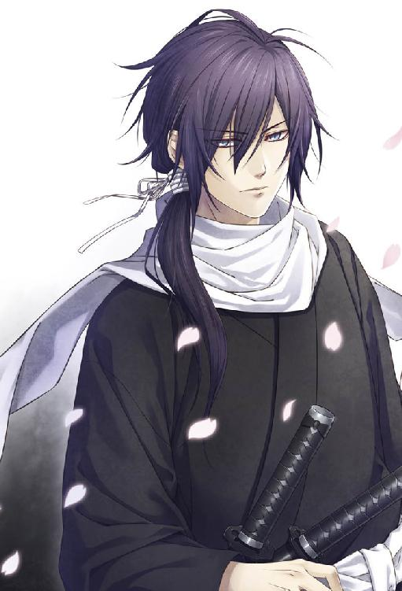
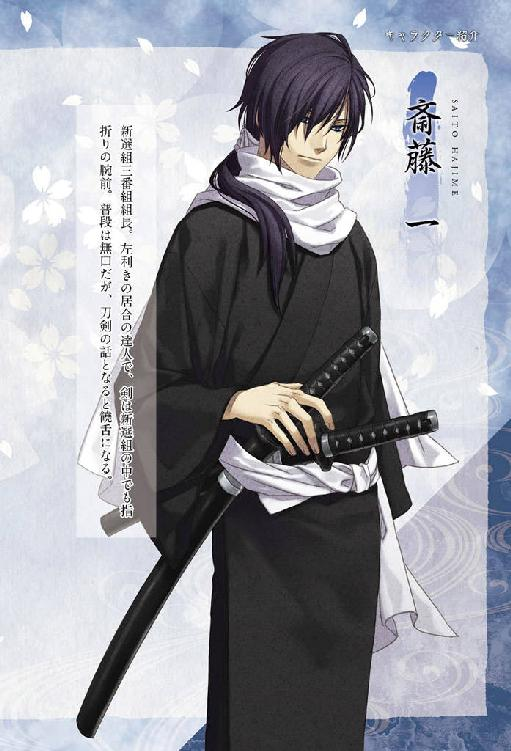
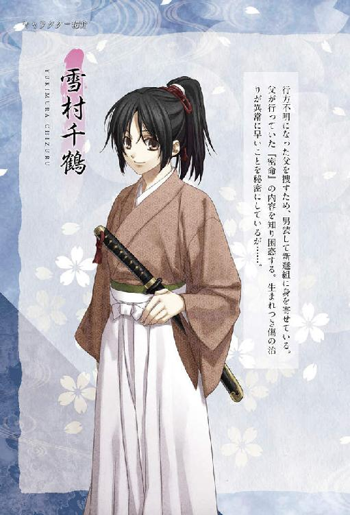
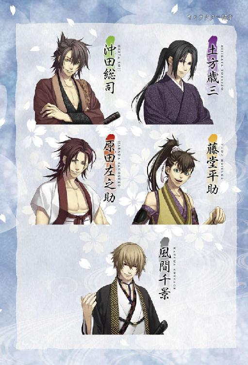
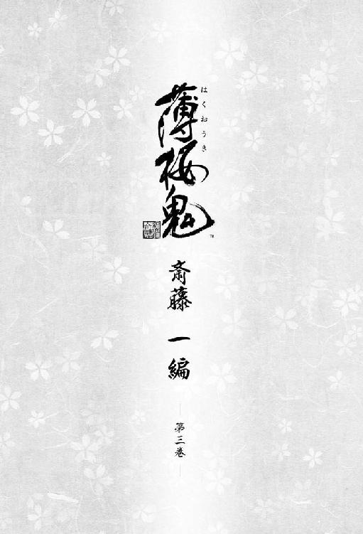
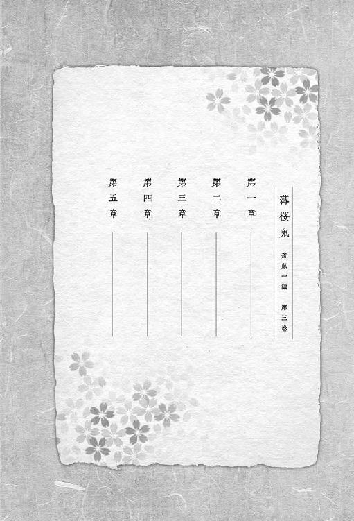
第一章
慶応三年の十一月も半ばを過ぎた頃。
町人達がせわしなく行き交う朱雀大路を、冷えた空っ風が吹き抜けていく。だがそんな寒さを物ともせず、列をなして威風堂々と歩く一団があった。
「壬生狼や......」
町人の一人が、恐れを込めてそう呟いた。そして、関わり合いになりたくないと言わんばかりに目をそらして道を開ける。
壬生狼──正しくは、新選組という。京都守護職松平容保の下で、京の治安維持を担っている浪士集団だ。
揃いの浅葱の羽織を着て見回りを行う隊士達の中に、羽織をまとわぬ人物、雪村千鶴の姿もあった。
彼女が、かじかんだ指先に息を吐きかけて温めていると......。
「やっぱり、屯所で留守番してた方がよかったんじゃねえのか？ その格好じゃ寒いだろ」
そう声をかけたのは、十番組組長の原田左之助だ。
「あっ、えっと......」
気まずくなった千鶴は、口元にあてがっていた手を慌てて引っ込める。彼女のそんな様子に苦笑いを浮かべながら、原田は言った。
「けどまあ、今は昼間だからまだましだぜ。寒い夜の巡察が、どれだけ辛いかっつうとな......」
そんなことを話しながら歩いていた時だ。
反対の方角から、同じ浅葱の羽織をまとった青年達が歩いてくる。その先頭にいる筋骨隆々とした男は、新選組二番組組長を務める永倉新八だ。
日一日と冷え込みが増す時季だというのに、彼は、自慢の胸板を誇示するかのように襟元をくつろげている。
「よう、左之。そっちの様子はどうだった？」
「町人の様子が若干せわしなかったみてえだが......ここんとこ、世間も新選組もゴタゴタしてたからな」
「なるほど、そりゃそうか」
原田が説明した通り、先月は大きな動きがあった。
大政奉還、つまり徳川家が政を行う大権を、朝廷へと返上してしまったのだという。土佐の坂本龍馬という人物の策らしいが、政情に疎い千鶴には、難しいことは判らない。
「そういえば、近藤さんや幹部隊士の皆さん方が、直参に取り立てられることになったと伺いましたけど」
その言葉に、原田と永倉は鼻白んだ様子で顔を見合わせる。
「まあ、何つうか......柄じゃねえよな」
「俺達は別に、幕府の家来になるために戦ってきた訳じゃねえしな」
『直参』とは徳川家直属の家臣を指すため、他藩の大名に仕える家臣とは立場が違う。
近藤は「今までの働きが認められた」と喜んでいた様子だったが、この決定を快く思わぬ隊士もおり、離隊を申し出る者も出て、揉めに揉めていたことを千鶴も覚えていた。──そのうちの何名かは、羅刹隊に回されることになったと聞いている。
「これから、新選組はどうなるんでしょう？ 直参になった矢先に、慶喜公が政権を返上してしまうなんて」
千鶴は不安に思って尋ねるが、原田も永倉も、事態をさして深刻には受け止めていない様子だ。
「政権を返したっつっても、あくまで名目上のことだろ。将軍はそのままだしな」
「薩摩の奴らが色々と画策してるらしいが、いきなり世の中が一変するわけでもねえだろうしな」
「そうなんですか......」
二人から返ってきた答えに、彼女はほっと胸を撫で下ろした。
さりげなく道脇へと視線を移すが、確かに彼らが言う通り、京の町並みは以前と何ら変わりがない。旅籠の呼び込みは寒空の下でも威勢よく声を張り上げているし、茶店の中では看板娘が忙しそうに働いている。
お上の事情に関わりなく、人々は普段と変わらぬ暮らしを送っているのだ。
（だけど──）
きっとこの瞬間も、時代は流れているに違いない。
（どうか、あの禁門の変の時のように、京の人達が戦に巻き込まれるようなことにだけはなりませんように）
そう強く願って、千鶴は隊士達と共に巡察を続けたのだった。
そして、十番組の隊士達と共に屯所へと戻ってきた時。
「おい雪村、茶の支度をしてくれ。来客だ」
廊下ですれ違った副長の土方歳三から、突然そう命じられた。
「はい、すぐに用意してきます。お客様は何名様でしょう？」
すると彼は、少し考えるそぶりを見せた後に、こう答える。
「そうだな、近藤さんに俺、総司に新八、原田、源さん......と後一人いるから、七人分だな。厳密に言うと、客じゃねえんだが」
「えっ......？」
最後に付け加えられた言葉の意味が判らずに目を丸くしていると、土方は、意味深な微笑みと共にこう言った。
「来れば判るよ。早く用意してきてくれ」
「はい、判りました」
腑に落ちぬまま、千鶴は勝手場へと走り、茶の用意をした。
そして言いつけられた通り、七人分の茶を持って広間へと向かう。
「失礼します、雪村です」
「入れ」
促されて障子戸を開けた時、そこに座っていた人物の姿に、千鶴は驚いて声を呑んだ。
なぜなら、そこにいたのは──。
「斎藤......さん......？」
夢を見ているのではないか、と一瞬思った。
威儀を正して端座する姿、やや癖の強い髪、憂いを帯びた濃藍の瞳、すべてが彼女の記憶に刻まれている斎藤一の姿そのものだったからだ。
千鶴は言葉を発することも出来ぬまま、睫毛を震わせ、彼の姿に見入ってしまう。
（まさか、そんな筈がないのに......）
新選組隊士と御陵衛士は、一切の接触を禁じられている。伊東と共に隊を離れた彼が、この場にいる筈がないのだ。
だが目の前にいる人物の姿は彼以外の誰のものでもなく、足元の畳の感触や手に持った盆の重さが、明らかに夢幻の類いではないと教えてくれている。
あまりの驚きに身動きすらできずにいると、土方から声がかかった。
「雪村、呆けてないでさっさと茶を配ってくれ。冷めちまうだろ」
「すみません！ ただいま──」
千鶴がようやく我に返り、盆の上の茶を配ろうとすると。
「呆けてたんじゃなくて、見とれてたんだよね？ 千鶴ちゃん」
沖田のからかいの言葉が飛んできて、彼女の頬にうっすらと血が上る。
「ち、違います！ 見とれてたなんて、そんな......」
慌てて否定しながらも、こっそりと斎藤の方を盗み見た。
彼は動じる様子を見せず、足を崩さぬまま座っている。
そのことにほっとしつつ、千鶴は幹部隊士達の前に一つ一つ茶を配り始めた。
「......どうぞ」
緊張しながら斎藤の前に茶を置くと、彼は小さく頷く仕草で応えてくれる。
（まさか、またこうして斎藤さんにお茶をお出しすることになるなんて）
今もまだ、信じられなかった。
その様子を横目で見ていた原田が、土方の方を見やりながら漏らす。
「そろそろ事情を明かしてやった方がいいんじゃねえか？ 千鶴の奴、狐に化かされてるんじゃねえかって、気が気じゃねえみてえだし」
「そんなことは──」
慌てて否定しようとして、千鶴は続く言葉を呑み込んだ。彼がなぜここにいるのか、知りたくない訳ではなかったから。
「......なぜ、斎藤さんがここに？ 私達は、御陵衛士の皆さん方と交流してはいけないことになっていましたよね？」
戸惑いながら尋ねると、土方は平然とした調子で答える。
「見ての通りだよ。斎藤は本日付けで、新選組に復帰するんだ」
「ですけど、そんな簡単に？」
あまりにあっさりと返ってきた答えに、千鶴は絶句してしまった。
表向きはどうあれ、多くの隊士を連れて離隊していった伊東のことを、土方達は決して許していないだろうと思っていたのに。
すると近藤勇が、横から説明を加えた。
「斎藤君はトシの命令で、間者として御陵衛士に同行していたんだよ」
その言葉で、千鶴もようやく納得できた。
（つまり、斎藤さんは新選組を見限った訳ではなくて......）
伊東派のふりをして彼らの懐に入り込み、内情を探っていただけだったのだ。
それまで黙って話を聞いていた永倉が、不満げにぼやく。
「近藤さん達も人が悪いぜ。そうならそうと、もっと早く言ってくれりゃ良かったのによ」
「敵を欺くにゃまず味方から、なんて言うだろうが。伊東派の奴らに見抜かれちまったら、何の意味もねえからな」
しれっとした調子で土方が答えると、沖田は楽しげに尋ねた。
「一君がこうやって新選組に戻ってきたってことは、何かをつかんできたってことですよね？」
「それなんだがな......お前ら、坂本龍馬って男を知ってるか？」
先程、巡察の最中に出た名だ、と千鶴は思った。他の隊士達もその名をよく知っているらしく、目線で応える。
「その坂本龍馬だが──暗殺されたらしい」
土方の一言で、場がにわかにざわめいた。
「本当かよ？ 誰がやったんだ？」
原田が尋ねると、土方は冗談めかした口ぶりで言った。
「どうやらお前らしいぜ、原田」
「へっ......？」
「お前の鞘が、連中の死体の傍に落ちてたそうだ」
原田は面食らった様子で、少しの間、目をしばたたいた。すると沖田が、おどけた調子で口を挟む。
「何だ、左之さんがやったんですか？ それなら、僕も誘ってくれればよかったのに」
「馬鹿言うんじゃねえよ。坂本には絶対手出しするなって、上から散々言われてたじゃねえか」
そう言った後、原田は己の腰の刀へと手をやった。
「大体、俺の鞘はここにあるんだぜ。与太話も大概にしやがれってんだ」
身に覚えのない疑いをかけられたことに相当腹を立てているのか、彼は苦々しげに顔をしかめる。
坂本龍馬という男は先述の通り、大政奉還の立役者らしいが、かなりの曲者らしく、方々から恨みを買っているらしい。紀州藩の三浦休太郎という人物も、以前、坂本と一悶着起こしたことがあるそうだ。
その三浦が新選組に依頼し、坂本を暗殺させた──という噂が、京の町ではまことしやかに囁かれていると、土方は告げた。
「俺達が命令を下してねえ以上、原田が坂本暗殺の犯人ってことはねえ。......だが、率先してその下らねえ噂を広めてる連中がいるみてえだな」
土方の言葉に、千鶴ははっとする。
他の隊士達が怪訝な表情を浮かべていると、土方は斎藤へと目配せした。斎藤は小さく頷いた後、話し始める。
「この半年、俺は御陵衛士の面々と行動を共にしていたが、かの者達は新選組に対し、明らかな敵対行動を取ろうとしている」
「敵対行動とは......、穏やかじゃないね」
井上が目元を曇らせながら漏らすと、土方が引き継ぐように答えた。
「伊東の奴は幕府を貶めるため、羅刹隊の存在を公にしようとしてるんだ。そのため、薩摩と手を組んだって話もあるな」
人を化け物に変える変若水の実験に、幕府方の新選組が関わっていたなどと知られれば、他藩や市井の民からどのような目で見られるかは明らかだ。
斎藤は、さらに言った。
「そして、より差し迫った問題がもう一つ。伊東は、新選組局長暗殺を企てている」
その言葉に、千鶴は声を呑む。
「局長......近藤さんを、ですか？」
「............」
渦中の人である近藤は厳しい表情のまま、促すような視線を土方へと向けた。ひとまず彼の話を聞いてくれ、と言わんばかりに。
その視線を受け、土方は続ける。
「奴らは既に新選組潰しのため、動き始めてる。さっき、坂本龍馬暗殺の話が出ただろ？ ......その噂を流したのは、御陵衛士の連中だ。紀州藩の三浦休太郎が、新選組に頼んで殺させたってな」
剣呑な雰囲気が、場に満ちた。
新選組に籍を置いていた頃から、近藤や土方と伊東派の対立は明らかだったが、それでも、こうもあからさまに敵対する事になるとは、皆、思っていなかったに違いない。
「三浦は身に覚えがねえらしいが、噂を真に受けた馬鹿共に襲われねえとも限らねえからな。奴の護衛は、お前に頼む事になる。引き受けてくれるな、斎藤」
「わきまえています。ほとぼりが冷めるまで、俺はここを離れていた方がいいでしょう」
彼が伊東派の内情を探るため、彼らと共に離隊した事は、ここにいる幹部隊士達しか知らぬことだ。事情を知らぬ一般隊士が今回の斎藤の復帰をどう見るかは、あまりに明白だった。
やがて、前振りはここまでだ、とばかりに土方は息を吸い込んで、中空を睨み据える。
幹部隊士達は顔を引き締め、彼が次に発する一言を待つ。否、隊士達は、土方が次に下す命令を知っていた。
「曲がりなりにも新選組の参謀だった男だから、今まで目こぼししてやってたが......事ここに至っちゃ、見逃す訳にゃいかねえな」
皆の視線を受けながら、土方は独り言のように告げる。鬼の副長の二つ名を思い起こさせる、底冷えするような声音だった。
「──あの男には、死んでもらうしかねえ」
その一言を受けた近藤の眉間に、深い皺が刻まれる。
「う......む。やむを得まい......」
副長である土方の言葉に、局長が許可を出した。それは取りも直さず、新選組の総力を挙げて伊東を殺害するということを示している。
やがて土方は、先程までとは違う淡々とした声音で告げた。
「段取りは、こうだ。まずは適当な理由をつけて、伊東を近藤さんの別宅に呼び出す。接待には俺も回るつもりだ。そして酒を呑ませ、帰り道で暗殺する。その後、奴の死体を使って御陵衛士の連中を呼び出し、斬る。実行隊は新八、原田、お前らに頼む」
巡察の当番を決める時と寸分違わぬ静かな口調で、ためらいもなく次々と指示を下していく姿に、千鶴は改めて慄かずにはいられなかった。
そんな中、沖田は相変わらずの愉快げな口調で問う。
「土方さん、僕は誰を斬ればいいんですか？」
「お前は寝てろ。変な咳をしてやがるし、身体の調子も良くねえんだろ。斎藤も後数日はここにいるから、相手してもらえ」
「......恨みますよ、土方さん」
沖田がぼそりと呟いたその時、呆然としたままの千鶴の肩をそっと叩く者があった。
はっとして振り返ると、そこには斎藤の顔がある。
「斎藤さん......？」
「御陵衛士は、これで終わる。平助を呼び戻すのならば、これが最後の機会となるだろう」
「......!!」
斎藤の言葉に、千鶴ははっとする。
（そうだ。伊東さんを殺して御陵衛士を呼び出すつもりなら、その中には、平助君がいるかも知れない──）
そう思った千鶴は、土方を見上げながら言った。
「あの......土方さん」
土方が、声もなく振り返る。千鶴は胸騒ぎを抑えながら尋ねた。
「今夜、伊東さんの元に駆けつける人達の中に、もし平助君がいたら、どうするつもりなんですか？」
土方の冷ややかな目が、彼女を見下ろしてくる。千鶴は、全身の血が冷たくなるような錯覚を抱いたが、決して目をそらさなかった。
永倉が彼に代わって、当然のように答える。
「そりゃもちろん、助けるに決まって......」
だがその言葉を、土方は冷然と遮った。
「刃向かうようなら、斬れ」
その言葉を耳にした瞬間、千鶴の心臓が大きく跳ねる。
「............え？」
土方が誰を斬れと言ったのか、彼女は一瞬、判断できなかった。彼の声音も表情も平静で、迷いも躊躇もまったくなかったためだ。
「斬れって、そんな......」
細い声が震える。納得など、出来る筈がなかった。
「平助君を、殺してしまうつもりですか？」
土方の答えはない。だが言葉にするまでもなく、答えは明らかだ。
少女は声を荒げながら、さらに言った。
「一度隊を抜けた人なんてどうなっても仕方ないと、そう仰るんですか？」
千鶴が土方にこんな言葉をぶつけたのは、これが初めてのことだった。
だが彼は気にかけた風もなく視線を外し、振り切るように広間を出ていってしまう。
彼女がうなだれて唇を噛んでいると、たしなめるような口振りで近藤が言った。
「トシがそんなことを思う筈がないだろう。......江戸から共に上ってきた同志だぞ」
その声音に込められた悲しげな響きに気付いて、千鶴は息を呑む。
（近藤さんも、お辛いんだ。いえ、近藤さんだけではなく、土方さんや他の皆さん方も......）
辛くない筈がない。当然のことだが、土方や新選組隊士達の方が、千鶴よりもずっと藤堂との付き合いが長いのだ。
土方を追い詰めるような問いを発してしまったことを、少女は深く悔やむ。
「......すみませんでした。取り乱してしまって」
「いや、君の気持ちはよく判る。藤堂君は、皆に慕われているのだな」
素朴な笑みと共に言った後、近藤は後ろを振り返った。そして、これから藤堂と相まみえる二人──永倉と原田を真剣な眼差しで見つめながら、静かに告げる。
「永倉君、原田君。局長としてではなく、近藤勇として頼む。藤堂君を見逃してやってくれ。出来るなら、隊に戻るよう説得して欲しい」
その言葉に、永倉や原田は重々しく頷いた。
「ああ、判ってるって」
近藤はその後も、幹部隊士それぞれに的確に指示を下していく。
そんな様子を、千鶴は驚きと共に見守っていたのだった。
やがて散会となった後、千鶴が夕飯の支度のため、勝手場へ向かおうとすると──
「あっ......」
黒ずくめの後ろ姿を見つけ、彼女は思わず声を漏らした。
声をかけてもいいだろうか？ わずかに迷ったが、千鶴は意を決し、早足でその背中へと歩み寄った。
「斎藤さん」
そう呼ぶと、彼は静かに後ろを振り返る。
物言わぬ、だが心の奥底までを見透かしてくるような瞳と目が合うと、少女はなぜか落ち着かない心持ちになった。
「どうした？ 何か話があったのではないか」
「あっ、その......」
静かな声音で促され、内心気後れしながら千鶴は尋ねた。
「......平助君は、本当に大丈夫なんでしょうか。また以前のように、新選組に戻ってきてくれるでしょうか」
「俺に問われても、生憎、答えてやる事は出来ん。かの者と俺では、立場が異なるからな」
千鶴は、斎藤にこんな事を尋ねてしまった事を内心後悔した。
（そうだよね。平助君は斎藤さんと違って、元々、新選組のあり方に疑問を持っていた人なんだもの。彼にその意思がなければ、隊に戻ってもらう事なんて出来ない......）
千鶴の表情が曇った事に気付いたのだろうか、斎藤は「だが」と前置きした後で、こう告げた。
「新八や左之とて、平助を失いたくはない筈だ。かの者達の説得が上手くいくことを、願うしかあるまい」
励ますような響きが込められたその言葉に、千鶴は頷く。斎藤の言葉通り、今は、永倉や原田を信じるしかないだろう。
「先程、土方さんが仰ってましたけど......斎藤さんは伊東さん達の動きを探るために、あの時、離隊なさったんですよね？」
そう尋ねると、斎藤の瞳が不意に鋭くなった。
「......その事は、ごく一部の人間以外は知らぬ事だ。屯所内で不用意に口にせぬようにしろ」
「あっ......すみません！」
千鶴は慌てて口をつぐんだ。やがて斎藤は静かに目を閉じ、こう答える。
「先程、土方さんが説明していた通りだ。それ以外に言う事はない」
「......はい」
これ以上語るべきではないと直感し、千鶴もそれ以上の問いを控える事にした。
「話はそれだけか？ ならば、俺はもう行く」
短く告げた後、彼はその場から歩き去ろうとするが──
「あっ......ちょっと待って下さい！」
千鶴は思わず、去りかける背中を呼び止めてしまった。
「何だ？」
今この場で口にすべき問いだろうか、という疑問が、千鶴に言葉を発することを躊躇させる。
けれどどうしても気にかかったから、彼女は意を決して問いを投げかけた。
「その......斎藤さん、少し前に、この屯所にいらした事がありませんか？」
珍しく風邪を引いてしまい熱に浮かされた夜、布団の傍らに座して千鶴を見下ろしていた斎藤の姿は、今でも強い印象と共に彼女の脳裏に刻まれていた。
（もしかしたら、ただの夢だったのかも知れないけど）
だが、斎藤が土方の命を受けて御陵衛士に加わったのだとすれば、時折、報告のために土方の元を訪っていても不思議ではない。
千鶴は緊張で身を固くしながら、斎藤の答えを待っていた。すると......。
「いつのことを言っているのかは判らんが、極秘裏にここに来た事は何度かある」
「じゃあ──」
やはりあの時の出来事は、夢などではなかったのか、と思い、千鶴は勢い込んで尋ねる。
「あの時、私を看病して下さったのは、やっぱり......」
強い確信と共に尋ねたが、斎藤から返ってきた答えは意外なものだった。
「何のことを言っているのだ？」
「えっ......？」
予想したのとは異なる答えが返ってきて、千鶴は少なからず戸惑った。
あの時かけられた言葉、額に触れた濡れ手拭いの感触──そして何より温情が込められた優しい双眸や、かけられた言葉を、はっきりと覚えているのに。
「話は、これまでにしておいた方がよかろう。長々と話していると、他の隊士の目に付かぬとも限らん」
「あっ......はい。お引き留めしてしまって、すみませんでした」
彼は首を小さく横に振った後、歩いて行ってしまった。廊下の向こうには、沖田の部屋がある。恐らく先程土方に言われたように、彼の話し相手をするつもりなのだろう。
近頃沖田は、肺の病の具合が思わしくなく、刀を振るえず鬱憤が溜まっているせいか、千鶴や他の隊士達に当たることが多いのだ。
長い間、新選組でも一、二を争う剣技の持ち主として共に隊を支えてきた沖田が病に蝕まれつつあることを、斎藤はどんな思いで見つめているのだろうか。
先程言葉を交わした限りでは、斎藤も動揺している様子ではなかったが......。
（心配じゃない筈がない。沖田さんは、大切なお仲間だもの）
沖田のことだけではなく、共に離隊した──そして今夜、新選組の面々と刀を突き合わせて戦わねばならない藤堂の命運についても、斎藤は同じように思い悩んでいるに違いない。
そんなことを思っていた時だった。
「雪村君、今、人と話していたようだが」
声をかけてきたのは、千鶴と何度か言葉を交わしたことがあるだけの一般の隊士だった。
「あっ、えっと......」
とっさに答えが浮かばず言葉を濁していると、彼は瞳に疑念をにじませながら言った。
「今の人は、斎藤さんではなかったか？ なぜ、伊東さん達と共に離隊した筈のあの人がここに？」
「それは、その──」
もし事情を悟られてしまえば、取り返しが付かない事になる。そう思った千鶴は、叫ぶように言った。
「ごめんなさい。私、用事があるから、これで」
そう言い残し、逃げるようにその場から走り去った。
そして勝手場へとやってきた彼女は、そのまま壁にもたれかかって一息つく。
（何とか気づかれずに済んだけど......気を付けなくちゃ。私、思ってることが顔に出やすいって、原田さんに以前言われたことがあるから）
先程の隊士の、疑いに満ちた眼差しを思い出す。
恐らく斎藤は今後、事情を知らぬ隊士達から、あのような目を始終向けられるに違いない。千鶴でさえ、何も知らなかった頃は、斎藤を責めるような言葉を口にしたことがあるのだ。
──そんな簡単に割り切れるものなんですか？ 斎藤さんは、悩んだりしないんですか？
──私達が変わってしまったから、斎藤さんはここを出て行ってしまうんですか？
斎藤と藤堂が西本願寺屯所を出たあの日、悲しみのあまり彼にぶつけてしまった一言一言を思い出すと、千鶴はいたたまれなくなった。
（事情を知らなかったとはいえ、何て勝手な事を言ってしまったんだろう）
恐らく彼自身は、千鶴や他の隊士達からどう思われようと、歯牙にもかけぬに違いない。己の役割として、当然のように受け止めている筈だ。
もし千鶴が彼と同じ立場に置かれたら、果たしてあれほど強く心を保っていられるだろうか。
（何て、強い人なんだろう。どうしてどんな時でも決して揺るがず、あんなに強くいられるんだろう）
崇敬にも似た思いに、胸を突かれる思いになる。
そして、千鶴も彼のようにありたいと強く思ったのだった。
やがて日は沈み、幹部隊士達は伊東を暗殺するため、そして御陵衛士の面々と刀を交えるために、密かに屯所を後にした。
幹部隊士の多くが出払い、いつもより静かになった屯所の中で、千鶴は一人、考えていた。
（皆さん方は今頃、伊東さんや平助君と......）
生々しい剣戟の場面が頭をよぎり、彼女は目をぎゅっとつぶってそれを追い払った。
無事でいてくれればいい。
だが伊東は、北辰一刀流の道場主を務めていた程の剣技の持ち主だという。そんな彼と真剣で斬り合いをして、果たして無事でいられるのだろうか。千鶴の心は不安で震えた。
そんな時、障子戸の向こうから、彼女の部屋の前へと駆け寄ってくる足音があった。はっとして身をこわばらせると、戸の向こうから緊迫した声が聞こえてくる。
「雪村君、まだ起きているか？」
声の主は、土方の信頼も篤い新選組監察方隊士・山崎烝だった。
「はい、起きてますけど......」
もしかして、何かあったのだろうか？ 不吉な想像が、彼女の胸中に広がっていく。
「大変な報せが入った。すぐに広間へ来てくれ」
重々しく告げられたその一言に、心臓を握り締められるような錯覚を抱いた。大変な報せというのは、一体何だろう。気にかかったが、確かめるのが恐ろしい。
「雪村君？」
黙り込んだままの彼女の様子を不審に思ってか、山崎は怪訝そうに問いかけてきた。千鶴は小さく息を吸い込んでから答える。
「......いえ、何でもありません。すぐに参ります」
そう告げた後、山崎と共に広間へと向かった。
広間には、伊東暗殺に出向いている近藤や土方、永倉、原田を除く幹部隊士達が集められていた。
こんな夜更けにもたらされた不穏な報せを警戒してだろうか、皆、一様に厳しい表情を浮かべている。
「総司はもう休んでいるようだったから呼ばなかったが......構わなかったかい？」
人の好さそうな面に不安げな色を映しながら尋ねたのは、井上源三郎だった。
「はい、問題ありません。事は急を要します。島田君達がまだですが、先に話しましょう」
冷静沈着で物に動じぬ山崎が、こうして焦りの色を見せる事などめったにない。千鶴は不安に襲われながら、彼の言葉を待った。
「......もしかして、上手くいかなかったのかい？」
井上が心配そうに尋ねると、山崎はきっぱりと答える。
「いえ、暗殺自体は成功しました。我々は伊東の骸を囮とし、御陵衛士を油小路へとおびき寄せ、取り囲むことが出来ました」
見知った人物──しかもかつては新選組の参謀だった人物の最期を淡々と告げられ、千鶴は思わず身震いする。
だが、山崎の口からは、さらに驚くべき事実が伝えられた。
「ですがその際、横槍が入りました。永倉さん達と御陵衛士の両方を取り囲む形で」
「一体、何者なんだね？」
「......恐らく、薩摩藩の手の者です」
「薩摩......!?」
以前、新選組の面々と相まみえた二人の鬼、風間千景と天霧九寿の姿が、千鶴の脳裏に浮かんだ。もし彼らが油小路にいたとすれば──
「永倉さんや原田さん、平助君は無事なんですか？」
千鶴は心配のあまり、思わずその問いをぶつけていた。
「敵の数はこちらを大きく上回っていたが、永倉さん達なら、しばらくの間は持ちこたえて下さる筈だ」
弱気な台詞ではないものの、その言葉の中に確かな保証はなかった。山崎がこんな物言いをしている時点で、油小路にいる隊士達が、相当厳しい状況に置かれていることが察せられる。
「早急に応援を送らなくてはならないね。今動ける者は、私と島田君と......」
井上が、そう言いかけた時だった。
刀を鎚で打つ時のような、激しい剣戟の音がこだました。続いて、男の叫び声が外から聞こえてくる。何があったのかと、広間に居並ぶ皆が顔を見合わせた矢先。
「皆さん、こちらにいらっしゃいますか！」
どたどたと足音を響かせながら広間に飛び込んできたのは、島田魁だった。その強面には、焦燥の色が宿っている。
「島田君、一体何が？」
厳しい表情で山崎が問うと、島田は乱れた息を落ち着かせながら答えた。
「──鬼が、この屯所を襲撃してきました」
「何だと!? なぜこんな時に......！」
「こんな時だからこそ、かも知れないよ。彼らにしてみれば、雪村君を連れ去る絶好の機会だろうからね」
苦い声音で紡がれた井上の言葉に、千鶴は唇を噛む。
（どうしてこんな時に、また......）
以前、鬼達が西本願寺屯所を襲撃してきた事を思い出す。あの事件がきっかけで新選組は、この不動堂村へと屯所を移さざるを得なくなってしまったのだ。しかも今は、油小路で戦っている面々に応援を送らなくてはならないというのに。
「詳しく説明してくれ、島田君。襲ってきたのは、例の三人組かい？」
井上の問いに、島田は首を横に振る。
「いえ、刀を持った金の髪の男が一人です。あの男の名は、確か......」
「金の髪に、刀──風間千景か。今、奴はどこにいる？」
そう尋ねたのは、山崎だった。島田はよどみなく答える。
「山南さんや羅刹隊の隊士達が応戦していますが、かなりの苦戦を強いられている様子です」
「では、すぐ応援に向かわねばならんな」
山崎が島田に頷き返したその時、千鶴は言った。
「島田さん。斎藤さんは今、どちらにいらっしゃるんですか？」
土方や永倉、原田が出払ってしまい、沖田が病で剣を取れぬ今、この屯所でもっとも頼りになるのは斎藤だと判断し、千鶴は尋ねた。
「斎藤さんなら、まだ部屋におられる筈だが」
「でしたら、私が呼びにいってきます」
「しかし......」
山崎は答えをためらっている様子だったが──
「これぐらいは、させて下さい。お願いします」
千鶴が頼み込むと、ようやく頷いてくれた。
「判った。ただし、くれぐれも気を付けてくれ。風間が山南さんや羅刹隊の目をかいくぐって、この建物に入り込まんとも限らん」
「はい、判っています」
「それじゃ、山崎君、島田君、行くとしようか。......私の剣が、鬼相手にどれだけ通用するかは判らんがね」
やや弱気に言ったのは、井上だった。しかし、穏やかな微笑みを絶やさぬその顔に、今は、確かな戦意が宿っている。
「皆さん方、くれぐれもお気を付けて」
「判っているとも。何とか持ちこたえるから、急いで斎藤君を呼んできてくれ」
井上の言葉にわずかな安堵を覚えながら、千鶴は広間を出たのだった。
事情を知らぬ隊士達に勘付かれぬよう、足音を忍ばせながら小走りに縁側の廊下を進んでいくと──
「......!?」
横合いから、黒い影が風を切って飛んできた。そしてそのまま派手な音と共に障子戸を突き破り、部屋の畳の中へと転がっていく。
風間ではないようだった。という事は......。
「くくく......」
地を這うような低い声が、その人影の口からこぼれた。そして、血の色をした両瞳が闇夜に爛々と輝く。
（いけない......！）
羅刹隊士の双眸が己に据えられていることに気付き、千鶴は身をすくめる。もし一瞬でも隙を見せてしまえば、彼は瞬時に襲いかかってくるに違いない。
狂気をあらわにしたその瞳から、片時も目を離さぬよう努めていると。
「──頭を下げろ！」
静かな叫びが、背後から聞こえてきた。
（斎藤さん──）
千鶴は、言われるままに身を伏せる。
次の瞬間、傍らで、たん、と床を蹴る気配があった。少女の眼裏には、以前、八木邸屯所で手合わせした時の鮮やかな居合の技が浮かんでいた。
ざしゅっ、という肉を切り裂く音、そして血が噴き出す音が続けざまに聞こえてくる。羅刹に叫び声を上げさせる暇すら与えぬ、あまりにも精緻な剣技だった。
恐る恐る顔を上げると、刀にこびりついた血を払う斎藤の後ろ姿が目に入った。
「羅刹隊の暴走が始まったか。厄介な事になったな」
苦い表情で、彼は言った。その視線の先には、斎藤が一瞬で絶命させた羅刹の骸がある。
やがて彼は、千鶴の方を振り返り......。
「怪我はないか？ 雪村」
「は、はい......」
震え声で何とかそう答えた後、呼吸を整えてからこう続ける。
「斎藤さん、大変なんです。風間さんがこの屯所を襲撃してきたって、島田さんがさっき──」
斎藤の瞳に、苦い色が走った。「よりによってこんな時に」と言いたげだ。
「奴は、どこにいる？」
「はい、向こうです......」
千鶴はそう言って、彼を先導しようとするが──
「あ、れ......？」
膝の震えのせいで、立ち上がる事ができなかった。
羅刹隊士に殺されかけた恐怖が今になって襲ってきたのか、それともこの先に待ち受けている風間に対する恐れか、あるいは斎藤に窮地を救われたことで気が緩んでしまったのだろうか。
斎藤は平素の無表情で、千鶴へと歩み寄った。そして。
「立てぬようだな。つかまれ」
短く言った後、手を取って引き起こした。千鶴は斎藤に助けられ、何とか立ち上がる。
「すみません......」
あれしきのことで立てなくなってしまった己を恥じ、斎藤と目を合わせられずにいると、彼は静かな声音で言った。
「詫びることではない。鬼と呼ばれる者達にあんたを渡すなというのは、新選組の意志だからな」
普段、余計な事を口にせぬ斎藤が、こうした配慮を見せるのはとても珍しいことだった。
千鶴の細い身体から、徐々に震えが抜けていく。
「......ありがとうございます。気を遣って下さったんですね」
すると彼は少し照れたように、千鶴から視線を外した。
「急いで向かわねばならんのだろう。行くぞ」
その後、千鶴と斎藤が急いで戦いの場へと駆けつけると、そこには......。
「来たか、雪村の娘。待ちわびたぞ」
恐ろしいほど整った顔を愉快げに歪めながら微笑む金髪の鬼──風間千景の姿があった。
「斎藤さん......来て下さったのですね」
山崎や島田、井上は風間を取り囲んでいるが、余程の激戦を強いられたのか、その呼吸は苦しげに乱れ、着物には土埃がこびりついている。
しかも、それだけではなく──
「山南さん......！」
やや離れた所に、山南が倒れていた。もしかして既に殺されてしまったのかと、一瞬錯覚する。
「安心しろ、まだ息はある。手加減してやったからな。もっとも、その男以外の雑魚は、手心を加えてすら弱過ぎて、つい殺してしまったが」
余裕の表情で、風間は言った。山南、山崎、井上、島田、そして多くの羅刹隊士達と斬り合った後だというのに、息一つ乱していない。
彼は悠然とした仕草で、山南や、事切れている羅刹隊士達の骸を見回した。
「哀れなものだな。正気と引き換えに力を得てすら、この俺と切り結ぶことすら出来ぬとは。ろくに御することも出来ぬこの哀れな化け物を、貴様らはこれから先も使い続けるつもりか？」
風間の容赦ない面罵の言葉に、斎藤の目元が怒りで歪んだ。
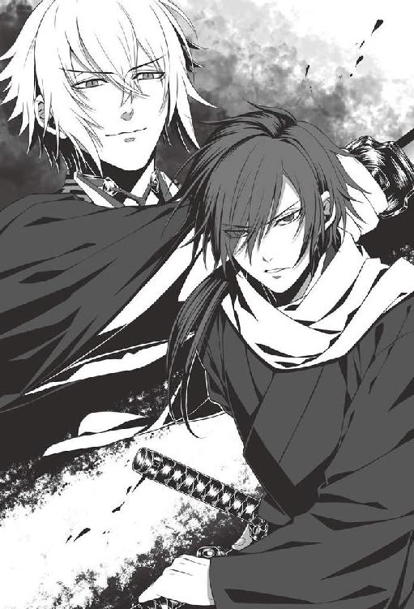
「──彼らは化け物ではない。侮辱は許さん」
斎藤の左手が、右腰の刀をきつく握った。抜き打ちに敵の首を跳ね飛ばす、必殺の居合の構えだ。
（でも、果たして風間さんに通じるの？）
斎藤の剣技に信を置いておらぬ訳ではないが、それでもあの鬼達は、人の想像を遥かに超える力を有している。不安に駆られながら、千鶴は戦いの行く末を見守った。
だが風間はしばらくその構えを眺めた後、ゆらりと後ろに退き、刀を納める。
「逃げる気か」
斎藤が鋭く問うたが、風間は鼻先で笑うように答える。
「今日は、時間稼ぎに出向いただけだ。元より、長居するつもりなどない。その娘を貴様らから奪い去るなど、造作もない事だからな」
赤い瞳が、遠慮会釈なく千鶴へと向けられた。彼女が警戒しながら睨み返すと、風間は挑発的に言う。
「この先ずっと、このような輩に囲まれて暮らすつもりか？ こやつらがどれだけの仲間にあの忌まわしき薬を飲ませ、哀れな化け物へと変えてしまったか......お前もよく知っている筈だが」
「............」
魂の奥にある本音を鷲掴みにされるような強い眼差しで見据えられ、千鶴は動けなくなる。
風間の言葉通り、新選組にとってやむを得ぬ選択だったとはいえ、変若水を使い続ける彼らを全肯定することは、彼女にも出来なかった。あの薬を新選組に持ち込んだのが、彼女の父だからこそ。
「俺と共に来たらどうだ？ 悪いようにはせぬぞ」
風間が、揶揄するような口振りで尋ねたが......。
「──断ります。あなたと行くつもりはありません」
迷う己の心をも叱咤するように、厳しい声音で千鶴は答えた。
だが、彼女がこう答えるだろうことは予測していたのだろう。風間は唇を三日月の形に曲げて微笑んだ後、千鶴に背を向け、夜の闇に溶けるようにその場から立ち去った。
刹那、辺りに静寂が戻ってくる。
小さく息を吐いた後、斎藤は隊士達を振り返った。
「皆、無事か？」
「ひとまずは。ですが、山南さんが......」
山崎が言い終える前に、千鶴は山南へと駆け寄って傷の具合を確かめた。
「......急所は外れているみたいですから、傷は数日もあれば癒えると思います」
「そうか......」
斎藤はほっとした様子で、表情を緩める。その様子に、千鶴も胸を撫で下ろした。もし山南までもが絶命させられていたら、彼がどれだけ心を痛めたことか。
「他の隊士の目につかぬよう、山南さんを中へ運び込まねばならんな。島田、あんたの怪我の具合はどうだ？」
「軽い傷ですから、心配は要りません。お手伝いします」
「よろしく頼む」
島田と共に、山南の身体を抱え上げようとして、斎藤は傍らに倒れている羅刹隊士達に気付いた様子だった。
「......この者達も、始末せねばならんな。夜が明けるまでに」
事切れた白髪の隊士を見下ろすその瞳に、わずかな間、哀切な色が浮かんでいたのを千鶴は見逃さなかった。
やがて彼は、再び山崎に向き直りながら呟く。
「ここに来たのは時間稼ぎだと、先程、風間は言っていたが」
その言葉に、千鶴ははっとした。
（そういえば、油小路には薩摩藩の手の者がいたと、さっき山崎さんが言っていた。ということは──）
山崎も彼女と同じ考えに至ったのだろう。白い細面に、焦りに色が浮かんでいる。
「ここの始末を終えたら、すぐに油小路へ向かいましょう」
山崎がそう言い放った、その時。
「頼む！ 誰か、山崎か千鶴を呼んできてくれ！」
緊迫した様子の声が、通りの向こうから聞こえてきた。
（今の声は、原田さん......？）
一体、何があったというのだろう。少女の胸の内で、悪い予感が膨れ上がる。
「我々なら、ここにいますが......一体何が？」
山崎が応えを返した時だった。
「平助が、大変なんだ！ 傷の具合を診てやってくれ！」
長い夜が終わり、外で雀が鳴き声を上げ始めた早朝、自室にようやく戻ってきた千鶴は、脱力して畳の上へと崩れ落ちた。
あの後、屯所に運び込まれた藤堂の姿を見た時は、心臓が止まるかと思った。
快活だった彼の顔からは血の気が失われていて、死んでいるのではととっさに思った程だった。永倉や原田の言によると、油小路であの天霧、そして不知火という鬼と交戦することになり、その際、天霧の拳で内臓を傷つけられてしまったらしい。
傷を診るまでもなく、手の施しようがないことは明らかだった。山崎と千鶴が藤堂の死を確信した時、彼らの前に姿を現したのは、意識を取り戻した山南だった。
山南は状況を一目で理解し、気を失ったままの藤堂を抱き上げ、こう言ったのだ。
「これ以上の手当ては無駄でしょう。彼の身は、我々羅刹隊が預かります」
「山南さん、まさか、平助君に変若水を......？」
震え声で、千鶴は尋ねた。まさかそんなことをする筈がない、と信じたかった。
だが山南は、語調をわずかにも乱す事なく答えたのだ。
「......藤堂君とて、このまま命を落とすのは本意ではないでしょう」
「そんな......！」
千鶴は青ざめながら叫んだ。
あの明るかった藤堂が人でないものへと変えられ、夜毎に血を求めてさまよい歩き、いずれは正気をなくしてしまうなんて。
「山南さん、考え直して下さい。平助君は、ずっと昔からの仲間なんでしょう？ そんな彼を──」
彼女は必死に懇願したが、眼鏡の向こうにある瞳は揺らがなかった。
「このまま放っておけば、死ぬだけです。しかも、新選組の裏切り者として。そんなことを、藤堂君が望んでいると思いますか？」
「っ......」
『裏切り者』という言葉が、少女の胸に重く圧しかかってくる。
千鶴とて、このまま藤堂を見殺しにしたい訳ではない。他に手立てがあれば、迷うことなくそちらを取っていた。
（でも、あの薬を平助君に飲ませてしまうなんて......）
彼女は、目をきつくつぶった。割り切れぬ心が、胸中で悲鳴を上げた。
だが彼女の意思など、山南にとっては取るに足らぬことらしく、彼はそのまま背を向けて歩き出してしまった。
そして立ち去り際、こう言ったのだ。
「ここから先は、我々の領分です。......決して立ち入らぬように」
闇の中に消えゆくその後ろ姿を、千鶴は呼び止めることが出来なかった。
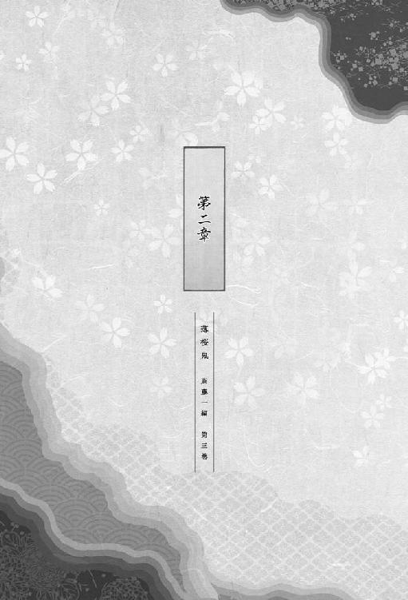
第二章
油小路で永倉や原田が御陵衛士達と死闘を演じてから、早くも一ヶ月が経ち、屯所内も師走の忙しさに包まれ始めた頃──
「斎藤さんが隊に戻られたというのは、本当か？」
「......！」
広間の前を通った時、部屋の中で隊士達が噂話をしているのが耳に入って、千鶴は思わず足を止めた。
「そうらしいな。今は、紀州藩の三浦とかいう男の護衛のため、隊を離れてるらしいが」
「局長や副長は、どういうおつもりなんだ？ 一度は新選組を裏切って伊東派に付いた人の復帰を許すなど。幹部隊士以外なら、切腹を申し付けられているところだろう」
「判らん。もしかしたら、何かお考えがあるのかも知れんが......」
彼らに言いたい事はあったが、千鶴は口を引き結び、足音を忍ばせてその場を離れた。
「......ふう」
用事を終えて自室に戻ってきた後、千鶴は小さく溜め息を漏らす。
予想していたことではあったが、先日新選組に復帰した斎藤の存在は、隊士達の疑惑を呼んでいた。一旦は隊を離れて伊東一派に付きながら、彼らが不利となるや、今度は伊東達を裏切って新選組に舞い戻ったと思われているらしい。
無論、彼らに表立って反論することなど出来る筈もないのだが、真相を知っている彼女にとっては歯がゆいことこの上なかった。
（斎藤さんは、隊士さん方に何を言われても気にしないだろうけど......）
もし事実を明かせば、間者となるよう命令を下した近藤や土方に批判の矛先が向きかねない。だからこそ斎藤は、口をつぐんでいるのだろう。
彼は今、紀州藩の公用人である三浦休太郎を護衛するため、天満屋という旅籠に逗留しているそうだ。
（一目だけでも、お顔を見たいけど......）
自由に屯所を出られぬ身の上では、それも叶わない。
そんな事を考えていた時、不意に障子戸が開いた。
「......！」
驚いて顔を上げると、そこには──
「......山南さん。私に何か御用ですか？」
呼びかけもなく戸を開けられ、傍に立たれたことに違和感を覚えつつ尋ねるが、彼は答えてくれようとしない。ただ、真意の見えぬ眼差しを千鶴へと向けてくるばかりだ。
「あの......今は昼間ですけど、お身体の具合は大丈夫なんですか？」
沈黙に耐えかねて尋ねると、山南の、眼鏡の向こうにある瞳が細められた。
「妙案が浮かんだもので、眠気など吹き飛んでしまって。天啓とは、まさにこのことを言うのでしょうね」
「妙案......？」
穏やかな口振りではあるものの、彼の声音の端々から妙な気配を感じ取って、千鶴は身震いした。
「私の考えを、聞いて頂けますね？」
有無を言わせぬ口調だった。かつて新選組の総長だった人からこう問われては、断ることなど出来る筈がない。
彼女が俯いたまま頷くと、山南は満足げに目を細めながら話し始めた。
「以前、屯所を訪れた千姫という少女が言っていましたね。あなたは、この日本に古来から隠れ住んでいた人ならぬ生き物──鬼の末裔であると」
「はい。お千ちゃんは、そう言っていましたけど......」
千鶴は戸惑いながら答えを返すが、山南は、そんな彼女の様子には構わぬ口振りでこう続ける。
「先日、この屯所を訪れた風間千景......彼は、我々よりも遥かに強大な力を有していました。私や羅刹隊の者達の力をもってしても、歯が立たぬ程に」
不吉な予感が鼓動と共に膨らみ、彼女の胸を占め始める。
彼は一体何のつもりで、他の隊士の目を盗むようにたった一人で千鶴の部屋を訪れ、こんな問いを投げかけてくるのだろう。
「その強大な力を持つ鬼......その身に流れる血はやはり、人の血よりも強い効力を秘めているのではないでしょうか？ あるいは、羅刹の狂気を抑える効能があるかも知れません」
千鶴は、雷に打たれたように動けなくなった。
こうして人目を忍んでこの部屋へやってきて、話を持ち掛けてきた意図、それはつまり──
「......確証は、あるんでしょうか？」
もし山南の言葉が本当であれば、是非協力したいとは思うけれど......。
どうにも、胸騒ぎが止まらない。この誘いに乗ってはならないと、千鶴の奥に息づく何かに警告されてでもいるかのようだ。
「綱道さんが消息を絶ってから、私はずっと、この新選組で変若水の研究を続けていました。その私の目から見て、試してみるだけの価値はあるかと思います。あなたの血で、我々羅刹隊、いえ、新選組隊士全員を救う事が出来るかも知れないのですよ」
今は、羅刹の姿を取ってはいない筈なのに、山南の目が、まるで血のような朱を帯びているように千鶴の目には映った。
「っ......」
言いようもない恐怖に駆られ、全身に鳥肌が立つ。
千鶴が一歩下がると、山南は、まるで彼女を追い詰めるように近づいてきた。
やがて、音もなく彼の腰の刀が抜き放たれ、千鶴は思わず悲鳴をあげそうになった。冷たく光る刀身の向こうで、山南は微笑む。
「そんなに怯えなくともいいのに。何も、あなたを殺そうというのではありません。ただほんの少し、血を分けて頂ければいいのですから」
「あ......」
硬い壁が背中に当たり、逃げ場所を失って、いよいよ恐怖に慄いたその時──
「何をしてるんだ、山南さん！」
鋭い叱責の声が、部屋の外から飛んできた。
はっとして視線を向けると、山南の背の向こうに、険しい顔をした土方が立っている。
「土方君、丁度よかった。君も手伝ってくれますか？ 羅刹達を苦しみから解き放つ術を見つけたのです」
だが土方は、そんな山南の言葉には耳を貸さずに、厳しい声で詰問した。
「......もう一度聞く。何をしてるんだ？ 山南さん」
怒気を込めたその問いに、山南は無表情のまま答える。
「羅刹達を救うためだ、と言いましたが？ 彼女の身体に流れる鬼の血が、我々の助けとなってくれるかも知れませんから」
「そのために、こいつを斬るってのか？」
「殺しはしませんよ。血をほんの少々、分けてもらうだけです」
怒りがみなぎった土方の視線と、真意が読めぬ山南の視線──両者の視線がしばしの間、激しくぶつかり合った。
場の雰囲気が一気に凍りつき、千鶴は身じろぎ一つ出来なくなってしまう。
やがて山南は刀の切っ先を下ろし、呻くように言葉を吐き出した。
「......先日の戦いで、我々は多くの隊士を失いました。羅刹となった者も、そうでない者も」
土方は厳しい表情で唇を引き結んだまま、山南の言葉に耳を傾けている。
「今いる羅刹や、これから羅刹となる者をこれ以上無駄死にさせぬためには、今のうちに、狂気を抑える術を見出しておかなくてはなりません。それで出来なければ、今後の戦いはますます厳しいものとなるでしょう。......聡明な君なら、判っている筈ですが」
脅しとも取れるその言葉にも、土方は動揺を見せない。山南は、さらに言った。
「雪村君がほんの少し痛みに耐えてくれることで、多くの隊士を救うことが出来るかも知れない。それなのに、彼女には一滴の血も流させるべきではないと......君は、そう言うのですか？」
「......山南さん。新選組の総長ともあろう者が、隊規を破るつもりか？」
土方の切り返しに、山南は訝しげな表情になる。
「私闘はご法度。知らねえ筈がねえよな」
そんなことか、と言わんばかりの失笑が山南の顔に浮かんだ。
「雪村君は、隊士ではありませんが？」
「隊士じゃねえが、ずっとここにいるんだ。似たようなもんだろうが」
二人は少しの間、睨み合いを続けていたが、やがて山南の方が警戒を解き、刀を鞘へと納めた。
「今日の所は、引き下がりましょう。ですが先程の私の言葉も、心に留め置いて下さい。......このままだと藤堂君もいずれ、他の羅刹のような末路を辿ることとなるのですからね」
不吉な言葉を残し、最後に千鶴を一睨みした後、山南はその場から姿を消した。
ようやく息苦しさから解放された時、千鶴はその場に崩れ落ちそうな心地だった。
「......悪かったな」
いつもの張りつめた表情で、だが、申し訳なさそうに眉宇を曇らせながら土方は言う。
「いえ、こちらこそ、ありがとうございました。でも、どうして私を......？」
「別に、お前を守ったわけじゃねえ。山南さんに隊規を守らせただけだ」
先程の出来事を恩に着せるそぶりのないその言葉に安堵する一方で、千鶴は内心申し訳なくも思った。
（だって山南さんが私に、さっきのような事を頼んできたのは──）
先日の風間の屯所襲撃で、多くの羅刹隊士の命が失われてしまったせいだ。あの一件がなければ、山南だって今日のような性急な行動には及ばなかっただろう。
「もしまた今日みてえなことがあったら、すぐ俺に言え。それじゃあな」
土方がそう言い残し、立ち去ろうとした時だった。
「──待って下さい！」
千鶴の口はひとりでにその言葉を発し、彼を呼び止めてしまっていた。
「何か、お役に立てる事はないでしょうか？ どんな事でもしますから」
「お前が......？」
土方の瞳が訝しげに細められた。そして、品定めするような視線を向けられる。
その後、土方はわずかに視線を外し、何事か思案し始めた様子だ。
やがて、独り言めいた言葉が、彼の口からこぼれる。
「......隊士に行かせるよりは目立たねえか」
「えっ......？」
彼女が戸惑いながら尋ねると、土方は軽く顎をしゃくる仕草をする。
「筆と紙の支度をしろ。この部屋にもあるだろ」
「は、はい、ただいま！」
千鶴は慌てて筆と紙を用意し、墨を磨った。用意が出来ると、土方は不機嫌そうな仕草で紙に何かを描き始める。
（これは......地図？）
彼は千鶴には一瞥もくれず、紙の上に筆を走らせながら尋ねてきた。
「斎藤が三浦の警護のため、天満屋に詰めてるのは知ってるよな？」
不意に飛び出した斎藤の名が、千鶴の胸の内に小さな波紋を作る。けれど動揺を表に出さぬようにしながら、千鶴は答えた。
「はい、もちろんです」
「あいつに渡して欲しい物があるんだ。お前が届けてきてくれ」
「私でいいんですか？」
千鶴は思わず、そう尋ねてしまった。
「ああ。他の隊士連中を行かせると、また妙な憶測を呼んじまうだろうしな。お前は浪士共にも顔が売れてねえから、怪しまれることもねえ。任せても大丈夫だな？」
「はい、お受けします」
土方が千鶴を信頼して役目を任せてくれたのは光栄だし、隊の役に立てるという喜びももちろんあったが、それ以上に......。
（斎藤さんと、またお会い出来るんだ）
その事が、千鶴の胸を高鳴らせていた。
思えば斎藤とは、油小路事件が起きたあの晩、言葉を交わしたきりだ。屯所の外で別行動を取っている彼と接触することは、千鶴には許されていない。だからこそ、再会の喜びもひとしおだった。
やがて、地図を描き終えたらしい土方が、静かに筆を置く。
「この地図を持っていけば、まず迷子にはならねえだろ。墨が乾くまで、ちと待ってくれ」
「はい、ありがとうございます」
土方が描いてくれた地図は、すっきりとしてとても見やすかった。合理的な性分というのは、こういったところにも表れるものらしい。
墨が乾くのを見計らって、千鶴はそれを丁寧に折りたたみ、懐へとしまい込む。
「それで、こいつが斎藤に渡してもらう書状だ。途中で落とすんじゃねえぞ」
「はい、確かにお預かりしました」
受け取った書状は、ただの紙なのにずっしりと重く感じられた。
「何か、斎藤さんに言伝などありますか？」
「特にねえ。必要な事は全部、書状に書いてあるからな」
「判りました。それじゃ、行ってまいります」
千鶴は身を固くしながら一礼し、部屋を後にした。
彼女の足音が遠ざかるのを聞きながら、土方は小声で告げる。
「......おい、山崎、島田」
呼びかけに応じるように、障子戸の向こうに人影が二つ現れた。
「今、雪村を斎藤の所まで遣いにやった。気取られねえようについて行って、何かあれば守ってやれ」
「承知しました」
短い応えの後、二つの人影が障子戸の前から消えた。
斎藤が逗留している天満屋は、旧屯所である西本願寺からは程近い場所にある。その近くには、永倉や原田が御陵衛士達と死闘を繰り広げたという油小路もあった。
（ここで、平助君が......）
藤堂が半死半生の体で屯所に運び込まれた時の事を思い出すと、今でも、胸の奥が激しく痛む。
（斎藤さんは、どう思ってらっしゃるんだろう？ あの時のこと......そして、これからのことを）
どんな時でも、土方から下された命令を迷いなく遂行するのが斎藤だったが、江戸にいた頃からの同志だった藤堂までもが羅刹となってしまった今、果たして、心揺らがずにいられるものだろうか。
（平気な筈がない。だって......）
一見、無表情で口数は少ないものの、京へ共に上ってきた古株の隊士達に対して、斎藤は格別の思い入れを持っているように千鶴には見えた。
（もし斎藤さんが人知れず心を痛めていたとしたら、私に、一体何が出来るんだろう？）
恐らく彼は、他人の助けなど欲してはいないだろうと思ったが、それでも......。
（もし、彼が誰かの支えを必要としていたら）
その時はどんなことでもしようと、千鶴は思った。出過ぎたことかも知れないけれど、それは紛れもない彼女の本心だ。
程なくして千鶴は、店の軒先に吊るされた『天満屋』という提灯を見つける。
「すみません。こちらに、山口さんという方がいらっしゃいませんか？」
番頭とおぼしき男に声をかけると、彼は「少々お待ち下さい」と告げ、店の奥へと姿を消した。
しばらくして、黒の着物に身を包んだ懐かしい顔──斎藤が姿を見せる。
「斎......」
思わずその名を呼びそうになって、千鶴は慌てて口をつぐんだ。
「......山口さん、今日はお呼び立てしてすみません」
土方達から事前に聞かされていた偽名で呼びかけると、斎藤は、やや面食らった様子で彼女の姿をまじまじと見つめた後、ぼそりと呟いた。
「まさか、あんたが来るとはな」
千鶴がこうしてここを訪れるのは、彼にとっても予想外だったらしい。元々、土方に無理を言って仰せつかった役目なのだから、当然のことと言えたが。
「すみません。私みたいに頼りない者が来てしまって」
千鶴が思わずそう言うと、斎藤は顔を引き締めて首を横に振る。
「そうは言っていない。少し、意外に思っただけだ。そろそろ遣いがある頃合だろうとは思ったが......」
彼女が来るとは思わなかった、と彼は言外に告げていた。
だがやがて、得心したように口元を緩めてこう続ける。
「だが、悪くない人選だ。顔が売れている隊士を遣いに出せば、この場所を浪士達に突き止められてしまう。かといって、昨日今日入隊したばかりの新参の隊士達に任せる事も出来ぬだろうしな」
「新参の隊士には任せられないって、どうして......」
「どこかの回し者とも限らぬだろう」
「あっ、確かに──」
今まで、何人もの隊士達が間者ということを突き止められ、切腹や羅刹化を命じられてきたことを、千鶴は思い出した。こうして斎藤の説明を受け、改めて、土方の用意周到さや機を見る目に驚かされる。
「では、書状を」
斎藤は手を差し出しながら、促した。
「はい、これです」
彼女は土方から預かった書状を懐から取り出し、彼に手渡す。
斎藤は早速、手渡された文を読み始めた。日が西に沈みかけているものの、まだ日暮れまでには間があるため、かろうじて字は読み取れるらしい。
千鶴はというと、文を読み進める斎藤の真剣な顔から目を離せずにいた。
「......なるほど」
書状に何が記されていたのかは千鶴の知るところではないが、少なくとも悪い報せではなさそうだと、彼女は斎藤の表情から読み取った。
やがて彼は、読み終えた書状を、天満屋の提灯の火へとくべてしまう。
「えっ......斎藤さん？」
「山口だ」
「あっ......」
慌てて口をつぐんだ後、千鶴は声をひそめて尋ねる。
「山口さん。それ、燃やしてしまってもよかったんでしょうか？」
「もう目は通した。こんな物を残しておいては、いつ、どんな間違いが起こるか判らん」
「あっ、なるほど......」
確かに、もしこの書状をどこかに落として、尊攘浪士達に拾われでもしたら、取り返しのつかぬことになる。
千鶴は感嘆の想いを込めて、斎藤を見つめた。彼が幾度となくこうした役目を引き受け、滞りなくやり遂げてきたことを、改めて気付かされる。
やがて彼は、静かに千鶴の方を振り返った。
「役目、ご苦労だったな。感謝する」
いたわりの言葉と共に向けられた優しい眼差しに、彼女の胸は高鳴った。
「いえ、お礼を言われる程のことでは......」
かけられたのは何気ない一言だというのに、瞬く間に頬に血が上り、恥ずかしくて斎藤の顔をまっすぐに見られなくなる。
（来る前は、斎藤さんとお会い出来るのが楽しみで仕方なかったのに、こうしていざ来てみると、目を合わせることすら出来なくなってしまうなんて......）
こんなに何気ないやり取りを交わすだけで、なぜこんなにも平静でいられなくなるのか──千鶴の心は、半ばその答えを見つけ出してしまっている。
もちろん、その気持ちを斎藤に明かすことは出来ないけれど。
「人通りが多い所まで、送ろう。あまり遅くなると物騒だからな」
「あっ......」
屯所へ戻るよう促されたことに気付き、千鶴は思わず声を漏らす。
「どうした？」
「............」
千鶴は少しの間、ためらった。
もしかしたら、場にそぐわぬ願いかも知れないという懸念がなくはなかったが、それでも──
（今日はたまたま、こうして斎藤さんとお会いする事が出来たけど......）
今のところ、斎藤が以前のように屯所に戻ってこられる目途は立っていない。もしかしたら今回のように、隊の外での役目を命じられ、顔を見ることすら出来ぬ日が続くかも知れないのだ。
千鶴は意を決し、胸の内の想いを言葉にする。
「......もう少し、斎藤さんとお話してもいいですか？ ご迷惑でなければ、ですけど」
「俺と？」
「は、はい」
斎藤は、すぐには答えなかった。
出過ぎた言葉だったかと、千鶴は、先程の言葉を後悔し始める。
その矢先......。
「まあ、いいだろう。俺と話して何が楽しいのかは判らぬが」
存外に優しい声音が返ってきて、千鶴は胸を撫で下した。
「ただし、場所を変える」
「えっ？」
戸惑う千鶴をよそに、斎藤は歩き出した。
その場に立ち尽くすわけにもいかず、彼女も慌てて後を追った。
程なくして、二人は裏通りへと辿り着いた。町の灯りも届かず、人通りのない薄暗い場所だ。
人二人が並んで歩くのがやっとの狭い通りなので、千鶴達はひとりでに肩を寄せ合うように立つ事になる。
（どうして斎藤さんは、こんな所へ？）
千鶴が不思議に思っていると、斎藤はぼそりと呟いた。
「......ここなら構わぬか」
独りごちた後、彼は、近くにある建物の二階の窓を仰ぐ。その様子を目にして、千鶴はようやく、ここが天満屋のちょうど裏手であることに気付いた。
（斎藤さんが護衛していた三浦さんという方は、浪士達から命を狙われていると言っていたっけ。だから彼はこんな風に......）
斎藤の機転に驚かされると共に、こうして引き留めてしまってよかったのかという後悔も、胸の内に生じてくる。
そんな千鶴に気を遣ってか、斎藤はこう声をかけてきた。
「屯所の様子はどうだ？ 何か変わったことはあったか」
「あっ、その......」
どう答えればいいのか、少なからず戸惑ったが──
「あれだけの事件があった後ですから、皆さんお忙しいみたいで、隊の中も落ち着かない感じです。隊士さんも随分減ってしまいましたし......」
「......そうか」
短い応えの後、再び沈黙が戻ってきた。
冷え切った冬の夜の風景の中、時折、斎藤が白い息を吐き出す音だけがこだまする。
どちらも言葉を発する事はなかったが、気まずさや緊張とは無縁の、独特の心地よさがあった。斎藤が同じものを感じてくれているかどうかは、千鶴には判らなかったが。
やがて彼は、静かな声で問いかけてくる。
「平助の様子は、どうだ？」
「っ──」
予想していた問いではあった。隊を離れている斎藤がもっとも気にかけているのは、藤堂のことに決まっていたから。
「そう......ですね......」
発する言葉が、ひとりでにこわばった。
あの夜──油小路から戻ってきた藤堂の、血の気の失せた顔が、千鶴の眼裏に蘇る。
目をぎゅっとつぶり、その光景を懸命に消し去りながら、千鶴は答えた。
「......私が見る限りでは、今までと変わりがありません。以前のままの平助君です」
まるで己に言い聞かせているようだと、彼女は言葉を発しながら思う。
「もちろん、昼間起きられなくなってしまったとか、そういうところは変わってしまったんですけど」
元気なままの藤堂を目にすると、あの晩の出来事は悪い夢だったのではないかと錯覚してしまいそうになるけれど......。
「でも、表向きはいつも通りでも......いえ、いつも通りだからこそ不安になってしまうんです」
今は、人だった頃と変わらぬ様子の藤堂も、いずれ血に狂う時が来ると山南は言っていた。
（それは、いつの事なんだろう。二年後？ 一年後？ それとも──）
斎藤は平素の無表情のまま、沈黙を守っている。彼が何を思っているのかは、千鶴には判らない。
ならば、この先に踏み込むべきではないのかも知れなかったが......。
「......斎藤さん。一つ、お聞きしてもいいですか？」
「何だ？」
やや固い声で、斎藤は答えた。少なからず警戒しているのが見て取れた。
「もし、山南さんや平助君のように大怪我をしたり、他の隊士さん方を助けるために必要なら──」
続く言葉が喉に引っかかり、奥に留まろうとする。
不用意にこんな問いかけをしてはいけないという思いが、問いを発するのをためらわせているのかも知れなかったが......。それでも、訊かずにはいられない。
「斎藤さんは、変若水を飲みますか？」
彼の瞳が、まるで彼女をたしなめるように細められる。灯りのない裏通りで、斎藤の表情も精細には読み取れなかったが、それでも、わずかな挙動や息遣いから、彼の内心は充分に窺えた。
一呼吸の後、斎藤は答える。
「飲む。その時俺に、なすべき役目があるのならな」
その言葉には、迷いなど欠片もなかった。
斎藤ならばきっとこう答えるだろうと、千鶴も予測していた。だがそれでも、失望と虚無感で、彼女の胸は締め付けられる。
「そう......ですか......」
発する言葉が、夜の風景に溶ける。
「あの晩、斎藤さんもご覧になりましたよね？ 平助君が、ひどい姿で油小路から戻ってきたところを。それなのに......」
羅刹となった彼の姿を目にして、千鶴が心を痛めている事も、斎藤はきっと知っている。
「あんなに明るかった平助君もいつか、血に狂ってしまうかも知れないのに、それでも......ですか？」
己の身に頓着せぬ斎藤の性分は知っていたつもりだったが、それでも千鶴は、彼の覚悟の強さを侮っていたのかも知れないと思った。
斎藤は、答えあぐねている様子だったが、やがて......。
「これを見ろ」
短く告げた後、静かに腰の刀を引き抜いた。
月明かりを受けた刀身は、冷たい、だが美しい光を纏っている。
「............」
抜き身の刀の、月の光を押し固めたような霊妙さに、千鶴は少しの間、口を利けなくなる。
静かな声音のまま、斎藤は言った。
「この剣が今までどれ程の血を吸ってきたか......もう覚えてもいない」
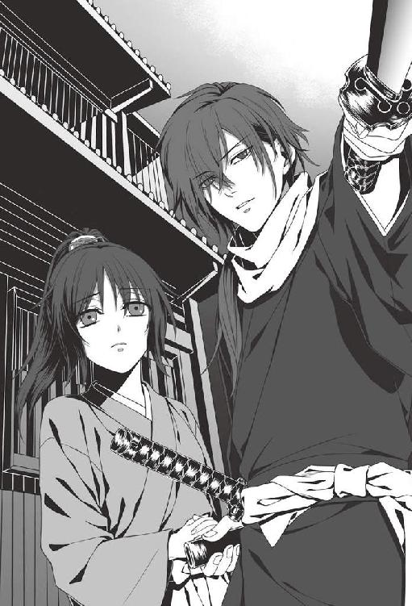
その刀には一点の曇りもないが、よく見ると、刀身がわずかに細くなっている。研ぎに出した際、削られたのだろうか。
「敵も味方も、数え切れぬほど斬り殺してきた。ならば、俺もいつかは戦いの中で死ぬだろう。それが因果というものだ」
その言葉で、千鶴は山南が羅刹になった時のことを思い出した。
あの時、斎藤はこう言っていた。「出来れば味方は殺したくない。あれは後味が悪いものだ」と。
新選組隊士となってから、あるいはそれ以前にも──斎藤は幾度となく、ああいった役目を引き受けてきたに違いない。
「どうして、そこまで......？」
千鶴はそう尋ねたが、斎藤の答えはない。
彼女から視線を外し、再び、白く輝く刀身へと視線を据える。揺るぎのない眼差しだった。
「変若水を飲もうと飲むまいと、羅刹となろうとなるまいと、俺がすべき事は変わらん」
斎藤の瞳に、黒い炎のような光が宿った。その瞳のあまりの暗さに、千鶴の背がぞくりと震える。
「この刀で敵を斬る。そしていつの日か俺も斬られ、剣に倒れる。ただそれだけの事だ」
淡々とした声音だった。
恐らく斎藤は、死に対する恐れなど抱いてはいない。
その強さをまぶしく思うと共に、言いようのない想いが込み上げてくる。
「......斎藤さんのその刀に、私も守られてきました」
斎藤は千鶴の方を振り返り、無表情のまま、その語りに耳を傾けている様子だった。
「人を殺すのは良くないとか、変若水など使うべきではないとか......そんな事を言える状況ではないというのは、私もよく判ってます。因果というなら、斎藤さんが振るう刀に守られてきた私も、同罪ですから」
千鶴は胸のところで、ぎゅっと手を握る仕草をする。
もしかしたら次に発する言葉は、斎藤の胸に、迷いやためらいを生じさせてしまうかも知れないと思ったけれど──
「それでも私は......斎藤さんには、あの薬を飲んで欲しくないです」
京に来たばかりの晩、目にしたあの隊士達。あるいは西本願寺の屯所にいた頃、千鶴を襲った羅刹。
山南は、今のところ血に狂ってこそいないものの、以前の彼とは様変わりしてしまったと、隊士達が口々に言っている。
藤堂もとうとう、羅刹となってしまった。そしていずれは、斎藤も......。
斎藤は、静かに目を伏せた。そして。
「......約束は、してやれん。俺の内心は、先程告げた通りだ」
その答えに、千鶴は少なからず失望した。彼が、千鶴の一言で本意を翻すような弱い人間でないことぐらい、彼女もよく知っていた筈なのに。
やがて斎藤は、重苦しい雰囲気を払うように言う。
「話し込んでしまったな。あんたはそろそろ屯所へ戻れ。俺も、宿へ戻らねばならん」
「あっ......、はい」
夢から覚めたような心持ちで、千鶴は答えた。名残惜しいが、これ以上我侭を言う訳にもいかない。
斎藤はそのまま、誰もいない奥まった細い路地へと近づいていく。そして暗闇に向かって、こう声をかけた。
「山崎、島田、そこにいるのだろう」
「えっ？」
斎藤の唐突な挙動に、千鶴は目を見開く。
だが彼は、構わず言った。
「もう、日も落ちている。陰から雪村を見守るよりは、表立って護衛した方が危険が少ない筈だ。かの者を屯所まで、無事に送り届けてくれ」
闇の中に潜んでいた影が二つ、揺らめいた。そして。
「承知しました」
物陰から返ってきたのは、斎藤が先程名を呼んだ二人──山崎と島田の声だった。
彼らの姿を目にした千鶴は、驚きでしばらく口を利けなくなる。
「お二人共、どうしてここに？」
「副長のご意向に決まっているだろう」
斎藤が、二人に代わって答えた。
「そうなんですか......？」
千鶴が二人に問うと、彼らは頷いて斎藤の言葉を肯定する。山崎は少し気まずそうに、斎藤に尋ねた。
「いつから、気付いてらしたのですか？」
「初めからだ。俺も、間者働きが多いからな」
そつのない口調で言った後、斎藤は静かに歩き始めた。
闇に溶けようとする黒ずくめの背中に、千鶴は慌てて呼びかける。
「あのっ、斎藤さん──」
斎藤が足を止め、視線だけで千鶴の方を振り返った。
「護衛のお役目、頑張って下さいね。それから......絶対に、死なないで下さい」
それは斎藤にとって何の値打ちもない、むしろ枷にさえなる言葉かも知れなかったが──
「この程度の役目で命を落とす程、未熟ではないつもりだが。気遣いは、ありがたく受け取っておく」
そう告げる声音からは、確かな温もりが感じ取れた。
そのことにほっとして、千鶴もようやく微笑みを浮かべることが出来るようになる。
やがて、黒ずくめの後ろ姿が夜の路地に溶け、足音が聞こえなくなってから、千鶴達も帰途についたのだった。
第三章
慶応三年十二月十六日、大政奉還の報せを受けた薩摩藩士達が、続々と京へ集まってきた。
この機に、何としても中央の政局に食い込もうとする薩摩・長州と、彼らに対抗せんとする旧幕府陣営。
新選組は薩長の暴発に備えるため、伏見奉行所の警護につく事になった。
そして、十二月十八日。旧幕府の重臣達との会議に出席した近藤勇が何者かに襲撃され、肩を負傷するという事件が起き、二日後には、労咳の悪化で起き上がれなくなった沖田と共に、大坂城へ身柄を移されることとなったのだった。
そして、年が明けた一月三日──
雪村千鶴は伏見奉行所に控え、見回りに出ている隊士達が戻るのを待っていた。
薩摩藩は、何とかして幕府側との戦いのきっかけを得ようと、江戸や京で挑発行為を繰り返しているという噂だ。
隊士達が無事でいてくれればいいのだが、と千鶴が思った時。
（あっ......）
入り口の戸が開く音が聞こえてきて、千鶴は立ち上がった。
「ふう、ただいま。京の冬は相変わらず、骨に来るよな......」
建物に入るなりそう漏らしたのは、原田左之助だった。彼や、共に見回りに出ていた隊士達に、彼女はねぎらいの言葉をかける。
「皆さん方、お帰りなさい。外の様子はどうでしたか？」
「今のところ、特に変わりはなかった」
そう答えてくれたのは、斎藤だった。
「そうですか、良かった......」
彼から返ってきた一言に、千鶴は少なからずほっとする。
（これからどうなるかは判らないけど、せめてお正月の間ぐらいは、隊士さん方に和やかな時間を過ごして頂きたいもの）
そう思った時だった。
──だんっ、だん！
外から耳慣れぬ音が聞こえてきて、千鶴は思わず身をこわばらせる。
（この音は、まさか......！）
場の雰囲気が一気に緊迫したものとなり、幹部隊士達は厳しい表情で顔を見合わせた。
「今の音、鉄砲の音だったよな？」
日頃、隊士達とふざけ合っている時とは打って変わって冷静な声で言ったのは、永倉だった。
「ああ。とうとう、始まりやがったか」
原田も、眉間に深い皺を刻みながら答える。
この銃声が、後に『鳥羽伏見の戦い』と呼ばれることになる戦のきっかけとなった。薩摩藩士が幕兵の入京を防ごうとして引き金を引いたのだと、千鶴達は後に知らされることとなるのだが──
この時の彼らは、状況を正確に知る材料を何一つ持ってはいなかった。
「どっちの兵が撃ったんだ？ ちょっくら外に出て、確かめてくるか」
入り口の戸から外の様子を窺いながら呟く永倉を、斎藤がたしなめる。
「落ち着け。副長が戻られる前に、勝手な行動は起こさぬ方がいい」
「とりあえず、他の隊士連中にも声をかけてきた方が良さそうだな。俺が行ってくるぜ」
察しのいい原田はそう言い置いて、その場から姿を消す。
奉行所の中はにわかに騒がしくなり、物々しい雰囲気が満ち始めた。
（とうとう、始まってしまうの？）
この奉行所に詰めることになったと聞かされた時、相応の覚悟はしていたつもりだけれど──それでも、千鶴には未だに信じられなかった。
禁門の変の時も、二度の長州征伐の時も、新選組隊士達が剣を取って直接敵と戦った訳ではない。禁門の変の時は、新選組の面々が辿り着いた頃には戦は既に終わっていたし、長州征伐の時は、戦場は遠い長州の地だった。
（だけど、怯えているわけにはいかないんだ。私は、私に出来ることをしなくては）
千鶴は己の頬を軽く叩き、覚悟を決めた。そして、薬や包帯、針や糸などの医術の道具が揃っていることを確かめる。
その時だった。
──どんっ！ どん、どんっ！
先程とは比べ物にならぬ程の轟音が、少女の耳を打った。鼓膜が痺れるような音と衝撃だ。さらに、奉行所の建物がミシミシと軋んで、激しく揺らぐ。
何が起きたのかを確かめるためだろうか、永倉が入り口の戸を開けて外の様子を確かめる。
「なっ......！ どうなってやがるんだ、こりゃあ！」
外から、永倉の叫び声が聞こえてきた。千鶴の傍らに立っていた斎藤も、永倉を追って入り口の方へと走る。
（外で、一体何が起きているの？）
心臓が潰れそうな思いで彼らが戻るのを待っていると、深刻な面持ちの斎藤が帰ってくる。
「斎藤さん、外で一体何が？」
すると彼は、厳しい表情で答えた。
「隣の龍雲寺に、大砲が仕掛けられている。恐らく、薩摩藩士達の仕業だろう」
「大砲って、そんな......！」
返ってきた答えに、驚く暇も与えられず──
「っ......！」
壁を突き破りかねぬ勢いで、轟音と衝撃が襲ってくる。
「くそっ！ このままじゃ、壁を破られちまうのも時間の問題だぜ」
斎藤に続いて戻ってきた永倉が、悔しげに唇を噛んだ。
幹部隊士達が言葉を交わす合間にも、砲撃の音が、地も割れよとばかりにこだまする。千鶴は、悲鳴をこらえるだけで精一杯だった。
込み上げてくる恐怖心と戦いながら、傍らの斎藤に尋ねる。
「この砲撃、止める事はできないんですか？ たとえばですけど、大砲を撃ち返すとか......」
彼女自身、素人考えだとは思ったのだが、このまま何の策も講じずにいれば建物が崩れてしまうだろうというのは、誰の目にも明らかだった。
少しの思案の後、斎藤は答える。
「ここにも一応、大砲は運び込んである」
「じゃあ、それで反撃すれば──」
「だが、たとえ撃ったとしても効果は薄い」
ぴしゃりと言い放たれ、千鶴は絶句する。
「どういう事ですか......？」
「敵の陣は、ここより高台にある。低い所から高い所に撃ち込んでも、恐らく弾は届かん。それに、龍雲寺は森に囲まれているからな。敵陣に当たる前に木々で防がれてしまうだろう。撃っても、命中はしまい」
「............」
斎藤から返ってきた答えに、千鶴は暗澹たる気持ちになる。
（それじゃ私達はこのまま、一方的に攻撃を受け続けなくてはいけないということなの？）
その時、外で見張りをしていた島田魁が、切迫した様子で建物の中へ駆け込んできた。
「大変です！ 薩摩の部隊が、この伏見奉行所を包囲しようとしています！」
やがて、島田に続き──
「建物に、かなりの損傷が出てるみてえだな。このままじゃ、崩れちまうのも時間の問題か」
鉢金と帷子で武装した土方が建物に飛び込んできて、真剣な様子で隊士達を睨むように見回した。
「近藤さんに、本隊の指揮を任された。これから反撃するぞ！」
待ちに待ったその一言に、奉行所の中は沸き返る。
「よっしゃあ、そうこなくちゃな！ やられっ放しってのは、性に合わねえよ。さっきから、身体がうずうずしちまって」
「どういう作戦でいくつもりなんだ？ 大砲で反撃するのか」
意気揚々と尋ねる永倉や原田を振り返りながら、土方は答える。
「当たらねえ大砲を引っ張り出しても、意味がねえ。最前線に打って出るしかねえだろう。運が良けりゃ、向こうの武器を奪う事も出来るかも知れねえしな」
幾度となく修羅場をくぐってきている彼らにとって、今回の戦いは、名を上げる絶好の機会といったところなのだろう。
だが、千鶴の胸に留まった不安は、消えてくれなかった。彼女とて、土方や幹部隊士達の力を信じていない訳ではないのに。
千鶴は傍にいる斎藤に、小声で尋ねる。
「斎藤さん、敵と私達の戦力差は、どれぐらいなんでしょうか？」
先程土方が言っていたように、敵から大砲を奪い取ることさえ出来れば、勝てるのだろうか。そう思って口にした問いだった。
「幕兵の数は、一万五千。薩長が率いている兵は、多く見積もってもその半分程度と聞いている」
「二倍の戦力差があるって事ですか？ じゃあ、負けたりしませんよね」
念を押すように尋ねるが、斎藤はすぐには答えなかった。千鶴から目をそらし、空を睨むようにしながら答える。
「......定石通りならば、な」
その言葉に、千鶴の不安はより大きくなった。彼がこんな物言いをするのは、その慎重さゆえだろうか、それとも......。
「よし！ 敵を一歩たりとも敷地の中に入れるんじゃねえぞ！ 焦らず、倒せる奴から倒していけ！」
土方は隊士達にそう命じた後、残った隊士達へと視線を移す。
「さっき入った報告じゃ、敵の本陣は御香宮神社らしいが......途中には、でかい坂がありやがる。しかも坂の上にゃ、鉄砲を持った兵が構えてるらしい」
「登ってる間に、狙い撃ちされちまうって事か？」
永倉の問いに、土方は沈黙で答えた。彼が何を言わんとしているのか、隊士達は既に理解している様子だ。
──この状況を切り抜けるためには、敵の本陣に飛び込み、撃たれる前に敵兵を斬り倒すしかない。彼らの目は、そう語っていた。
（でも、本当にそんなことが出来るの？）
いくら隊士達が強者揃いとはいえ、無事に戻ってこれるなんて、千鶴にはどうしても思えなかった。
しばらくの間、隊士の誰も言葉を発しなかったが......。
「よし、判った。そんじゃ、俺が斬り込んでくるぜ」
決然と名乗りを上げたのは、永倉だった。
「......やってくれるか、新八」
重々しく問いかける土方の声が、わずかに震えている。
隊士達に幾度となく決死の命令を下してきた彼とて、今回ばかりは、相当の躊躇を感じているに違いない。
「誰かが行かなきゃならねえんだろ？ だったら行くさ。このまま、やられっ放しでいるよりはいい」
永倉の言葉に迷いはなかった。彼は、後ろに控えている二番組の隊士達を振り返って、冗談交じりに告げる。
「悪いな、二番組の皆。命知らずな組長を持ったせいで、地獄の底まで付き合わせる事になっちまって」
二番組の隊士達は沈黙したまま、言葉を発しない。だがその顔に、動揺の色はなかった。
そんな隊士達を代表して、島田が爽やかな口振りで答える。
「何を言ってるんですか、永倉さん。我々は武士ですから、今更、命なんて惜しくありませんよ」
斎藤が、弾かれるように顔を上げた。見開いた瞳が、かすかに震えている。
（斎藤さん......？）
何か言いたげな彼の様子が、千鶴には気にかかった。これから戦場へ向かう彼らを気遣ってのことだろうか。それとも......。
「よし、それじゃ二番組を切り込み隊に指名する。御香宮神社を攻撃してきてくれ」
「ああ、任せといてくれよ。この永倉新八、ただじゃ死なねえぜ」
土方と永倉は、まるで巡察に出る直前のような軽い挨拶を交わし合う。これから彼らが戦場に赴くなんて、信じられなくなる程だった。
「飛び込む時は、俺達十番組が援護してやるからな。安心して突っ込んでいってくれよ」
永倉とは肝胆相照らす仲の原田も、いつもと変わらぬ口振りで言う。彼らの表情にも口調にも、悲壮感は一切ない。
「それでは、行ってきます」
永倉、島田、原田と二番組の隊士達は、口をきつく引き結んで外へと出ていった。
土方はその様子を、物言いたげな眼差しで見送った後......。
「斎藤、お前は部下を連れて龍雲寺へ向かってくれ。とりあえず、あの砲撃を止めなきゃどうにもならねえ」
「判りました」
平素と変わらぬ、情の見えにくい声で斎藤は答えた。それ以外の返事など存在せぬかのように、一切の躊躇なく。
「あ......」
浅葱の隊服に包まれた背中を、千鶴は思わず呼び止めてしまいそうになる。
池田屋で多くの浪士を捕縛したあの晩も、彼女はこの背を見送った。だが今回も本当に、斎藤は戻ってきてくれるだろうか。もう一度、彼と再会することが出来るのだろうか。
その気配を察してか、斎藤は静かに振り返る。
「あんたは、ここに残っていろ。今度ばかりは、生き延びられる保証などない」
そう言い残して彼が建物を出ていき、入り口の戸が閉ざされた瞬間、千鶴はその場に崩れ落ちてしまいそうになる。
池田屋で、あるいは風間達『鬼』と刀を交えた時も、彼らは命を賭して戦った。
だが今までの戦いはあくまでも、刀と刀の戦いだったのだ。今回のように、鉄砲や大砲を持った敵を相手にしていた訳ではない。
（新選組の皆さん方は、お強いもの。絶対に負けたりする筈がない──）
そう言い聞かせようとすればする程、胸中で絶望が膨れ上がっていく。
（お願いします、永倉さん、原田さん、島田さん、そして......斎藤さん。どうか、ご無事でいて下さい）
隊士達の負傷に備えながら、千鶴は強く祈ったのだった。
不安に苛まれながら過ごしているうちに、いつしか、日暮れの刻限となる。
不安をまぎらわせるため、部屋の片付けをしていると、不意に、背後から肩を叩かれた。慌てて後ろを振り返ると、そこには......。
「井上さん......」
人の好い微笑みを浮かべた井上源三郎の姿があった。
「大丈夫かい？ 随分落ち込んでいるようだが」
その言葉に、千鶴は俯く。
「......すみません」
すると井上は、不思議そうに目を見開いた。
「どうして謝るんだい？ 詫びなくてはならないのはむしろ、君を巻き込んでしまった我々の方だと思うんだがね」
「だって皆さん方は、私より余程大変なお立場で......」
すると井上は首を左右に振って、千鶴の言葉を優しく遮った。
「どちらが大変なんて、比べられるものではないよ。こうして皆の帰りをただ待つより、戦場に出る方がどれほど楽か」
いつも穏和な井上だが、今日の彼の言葉は、殊更温かく感じられる。彼は、近藤や土方、沖田などの古株の隊士とは、江戸にいた頃から志を同じくしていたという。
「出ていった皆のことが、心配なんだね」
優しい声に促されるように、千鶴は頷いた。
「今まで何度も、皆さん方が危ない目に遭ったことはありますけど......今回のような大きな戦は、初めてですから」
果たして彼らは、本当に戻ってきてくれるのだろうか。隊士達を信じていない訳ではないが、それでも、不安でならなかった。
そんな彼女を、優しく包み込むような眼差しで見つめながら、井上は言う。
「大丈夫だ、ちゃんと戻ってくるとも」
「そうでしょうか......？」
「決まっているだろう。武士というのは何があっても、決して約束を違えたりしないものだよ」
千鶴を安心させるためか、きっぱりとした口調で彼は答えた。
「あの状況で決死隊に志願した永倉君や島田君、そして斎藤君は、今の世には珍しい本物の武士だ。武士というのは......男というのは、決して女の子を悲しませたりはしないものだよ。だから、大丈夫だ」
その言葉に、千鶴は頷いた。穏やかだが力強いその言葉で、胸中の不安が少しずつ溶けていくのが判る。
己の命を顧みず、決死隊に志願した永倉。その決定に不服一つ言わなかった島田。そして、土方の命令に一も二もなく従った斎藤──
井上が言う通り、彼らは本物の武士だと、千鶴も思った。
「......判りました。私も、信じることにします。皆さんはきっと戻ってきて下さると」
その言葉に、井上は目を細めて微笑んでくれる。その穏やかな表情は、記憶の中にある千鶴の父、雪村綱道の姿と重なった。
その時、黒い人影が足音も立てずに奉行所の中に飛び込んでくる。気配を殺す走り方を熟知した、その人物は──
「お知らせしたいことがあります」
黒装束に身を包んだ監察方隊士、山崎烝だった。
「......どうしたんだね？」
井上が問うと、山崎は緊張した様子で答える。
「敵陣営の様子を探ってきたのですが、敵兵は鉄砲で武装しており、近付くことすら困難です。敵の間合いに入る前に撃たれてしまい、どうにもなりませんでした」
「そうか......。それはいかんね」
井上は難しい顔になり、考え込んだ。
「敵の主力は、鉄砲だったね？ だとしたら、日が沈んだ後なら狙いを定めにくくなるか」
「日が沈んだ後......」
その言葉から、千鶴は不吉なものを感じ取る。
次に井上が発した言葉は、その懸念を裏付けるものだった。
「......この窮地を脱するためには、羅刹隊を派遣するしかなさそうだね」
「俺も、それが最善だと考えます」
山崎も、井上の言葉に同意した。
羅刹隊を頼ることには、どうしても違和感を覚えずにはいられなかったが──千鶴は、隊の決定に異を唱えられる立場にはない。
「山南さんや藤堂君に伝えてこなくてはね。山崎君、一緒に来てくれるかい？」
「はい」
「雪村君、ここの事はよろしく頼んだよ......」
井上がそう言いかけた時、建物の入り口から、鉄砲の音がこだました。続けて、入り口の戸を乱暴に押し開けようとする音が聞こえてくる。
（隊士さんなら、わざわざこんな入り方はしない筈。ということは──）
扉にかけた閂が敵兵の侵入を阻んでくれるだろうが、それも時間の問題だ。
「井上さん。このままでは、奉行所が落ちます。どこか一隊を呼び戻さなくては」
山崎が厳しい表情で告げると、井上は困ったように眉を開く。
「誰が伝令に行くというんだい？ ここを空けてしまう訳にはいかんだろう」
「俺が向かいましょう。ですから──」
だが山崎の言葉を、井上は首を横に振って遮った。
「君に行ってもらう訳にはいかんよ。情けない話だが、私一人でこの奉行所を守り切るのは無理だ」
「それは............」
山崎は苦渋の表情で黙り込んだ。
その刹那、再び大砲の轟音がこだまする。
「っ......！」
このままでは、扉を破られてしまう。そう思った千鶴は、こう進言した。
「井上さん、山崎さん、伝令でしたら私が行ってきます！」
井上は一瞬面食らった様子で目を見開いたが、やがて......。
「しかし、君では......」
「確かに、私は強くはありません。薩摩兵とまともに斬り合うのは難しいでしょうけど......でも、敵に見つからずに御香宮神社か龍雲寺に向かう事ぐらいなら出来ると思うんです。多少の怪我なら、すぐに治りますから」
千鶴は懸命に伝えたが、二人は決定を下しかねている様子だ。彼女は、さらに言った。
「井上さんや山崎さんがここを空けてしまったら、薩摩藩士達が来た時、防ぎきれません。でしたら、戦いのお役に立てない私が行く方がいいと思うんです」
二人は黙り込んだまま、決めあぐねている様子で顔を見合わせる。
先に言葉を発したのは、山崎だった。
「......確かに、今ここを離れる事が出来る人間は、君しかいないだろうな」
そう言った後、山崎は、意向を伺うように井上の方を振り返る。
井上は、隊士ではない千鶴にそんな役目を押し付けて良いものか、迷っている様子だったが──
「判った。それでは雪村君、君に行ってもらう事にしよう」
「──はい」
千鶴が真剣に頷くと、井上は釘を刺すように付け加える。
「だが、君が行くのなら、本陣の御香宮神社は危険だ。斎藤君がいる龍雲寺の方に行ってもらおう」
「斎藤さんの......」
「ああ。彼にここの現状を伝えて、すぐ戻るように言ってほしい」
「判りました。必ず、やり遂げます」
緊張しながら答える千鶴に、山崎がこう声をかけてくれる。
「我々が、薩摩勢の目を引き付けておく。その間に裏口から出るんだ」
「はい、ありがとうございます！」
千鶴は手早く身支度を整え、裏口へと走った。
音を立てぬよう裏口の戸を開けようとした時、彼女の背中に、山崎の勇ましい声が突き刺さる。
「当たらぬ鉄砲など、ただの玩具に過ぎん。かかってこい！」
その時、言いようもない嫌な予感が込み上げてきて、千鶴は思わず足を止める。
だが、戻る訳にはいかなかった。
（お二人共、どうかご無事で──）
心の中で告げた後、後ろを振り返らず伏見奉行所を後にしたのだった。
荒涼とした一月の夜の森の中、千鶴の草鞋履きの足音だけが響き渡る。
「はぁ、はぁ、はぁっ......！」
明かり一つない山道は、日が沈むと真の暗闇となる。冬眠し損ねて飢えた獣が、いつ傍らの茂みから飛び出してこないとも限らない。
（とにかく、急がなくちゃ──）
時折、大砲の轟音が遠くから聞こえてきて、林立する木々を激しく震わせるたび、少女は身を凍り付かせた。
奉行所を出てから、どれぐらい走っただろう。
「ぐ、うぅっ......！」
近くから聞こえてきた呻き声に、千鶴は足を止める。
気配を殺して周囲の様子を探ると、暗闇の中に浮かび上がる浅葱の羽織が目に入った。
それも、一人や二人ではない。数人の負傷した隊士達が、山道に膝を突いている。
（この人達は確か、斎藤さんと一緒にいた......）
辺りに敵の気配がないかを探ると、少し離れた所に誰かが立っていることに気付いた。目を凝らすと、浅葱の羽織に包まれた背中が見える。
見間違える筈がなかった。星明かりに照らされたその白い顔容は、斎藤一その人のものだった。だが......。
「......？」
彼が苦しげに肩を上下させている事に気付き、千鶴は違和感を持つ。かつて、斎藤のこんな姿を目にしたことがあっただろうか？
その時、暗闇の向こうから何者かの声が聞こえてきた。
「成る程、目を見張る体力です。生身の身体で、我々鬼の動きについてくるとは」
独特の太い声を聞いた瞬間、千鶴は、全身の血が凍り付くような錯覚を抱いた。
彼は、風間千景、不知火匡と共に幾度となく新選組の前に立ち塞がってきた、千鶴を執拗に狙う鬼の一人──天霧九寿だ。
思わず後ろに下がろうとした時、彼女は足元にあった枝を踏んで音を立ててしまう。
天霧の耳は、その音を聞き逃さなかった。
「おや、君は......」
一瞬で千鶴がそこにいる事を見て取ったのか、彼は渋い表情になる。
「このような所で、何をしているのです？ まさか、京が戦場と化した今も、彼らと行動を共にしているのですか？」
その問いに答えるべきかどうか、少し迷ったが──ここに来た目的を思い出し、千鶴は斎藤に告げる。
「斎藤さん、大変なんです！ 伏見奉行所が、薩摩藩士達の襲撃を受けてしまって......」
「何だと？」
「龍雲寺の襲撃を中止して、すぐに奉行所へ戻って下さい！」
その言葉に、斎藤は頷いた。そして殺気に満ちた瞳で、改めて天霧を睥睨し──
「つまり、一刻の猶予もないということだな」
刀の柄を握ったまま、斎藤は天霧との間合いを測っている様子だった。
そして、僅かに生じた一瞬の隙を見逃さず、その太い首に居合を見舞おうとするが──
「......むん！」
信じられないことが起きた。必殺必中の筈の斎藤の一刀は、天霧の指によってたやすく受け流されてしまったのだ。
その瞬間生じた大きな隙を見逃さず、天霧は、斎藤の脇腹めがけて手刀を叩き込もうとする。
「くっ......」
斎藤は、右腕でその一撃を受け止めた。だがそれは思った以上に重い一撃だったらしい。白い細面が苦しげに歪んだ。
だが彼は戦意を失わず、もう一度、斬撃を見舞う。
闇夜の中、白刃が何度もきらめいた。
斎藤の刀は、天霧の急所を的確に捉えるが──天霧も無手ながら、斎藤の動きを完全に見切り、水のように自然な仕草で受け流してしまう。
「──!!」
斎藤の刀の切っ先が、天霧の頬を掠めた。頬に出来た一本の傷から血の玉が滲み出て、そのまま筋を描き伝い落ちる。天霧の身体に流れる血は、頬に刻まれた傷を一瞬で癒してしまったのだが、それでも、彼を動揺させる一刀ではあったようだ。
彼は傷があったところを手で軽く押さえた後、感嘆するような口振りで言った。
「驚きましたよ。君の剣の腕は、ある程度正確に測っていたつもりだったのですが、まさかこれ程とは。恐らく鬼ですら、君と互角に戦える者は多くないでしょう」
唐突に送られた賛辞を、斎藤は渋面で退ける。
だが天霧は彼の様子など気にかけてもおらぬ体で、こう続けた。
「......しかし、その強さはあくまでも人のものに過ぎません。人の身の限界というものを、思い知らせてあげましょう！」
天霧がそう告げた矢先、彼の身体は眩いばかりの白い閃光を放ち、斎藤や千鶴の双眸を鋭く刺した。
「っ......！」
そして再び目を開けた時、白髪に金の瞳を持つ何かが、彼らの眼前に立っているのに気付く。
（羅刹？ いえ、これは──）
見ているだけで全身に震えがくる神々しさは、千鶴が見知っている羅刹とは明らかに違っていた。龍や麒麟、鳳凰といった架空の生き物と相対する時、人は恐らくこのような畏怖を抱くのではないだろうかと、彼女はとっさに感じ取る。
天霧は、悠然とした仕草で斎藤と千鶴を見やった。
「......この姿を人前に曝したのは、これが初めてです」
やがて黄金色の瞳が、ひたと斎藤に据えられる。
「君の強さに敬意を抱いているからこそ、全力で戦わせてもらいましょう」
そう告げた後、天霧は独特の構えを取った。そして地を強く蹴り、斎藤との間合いを詰めたが──
「っ......！」
天霧の姿が、見えなかった。先程とは段違いの速さだ。
動きそのものは、斎藤もかろうじて目で追うことが出来ている様子だが......。
「くっ──」
先程までとは異なり、居合の所作がやけに緩慢になったように千鶴の眼には映った。
（いえ、違う。斎藤さんの動きが遅くなったんじゃない。天霧さんが速過ぎるんだ）
互いの力量の差を一瞬で悟ってか、天霧の口から落胆の溜め息がこぼれる。
「それが、人の身の限界ですか」
一呼吸の後、天霧の拳が斎藤の脇腹を捉えた。
「ぐっ......！」
斎藤は顔を苦しげにしかめ、刀を取り落としそうになるが、すんでのところで体勢を保つ。
「斎藤さん！」
思わず斎藤に駆け寄ろうとする千鶴を、彼は視線で制した。そして今一度、天霧へと挑みかかっていく。
「愚かなことを」
だが、再度見舞った必殺の居合を、天霧は息一つ乱さずに受け流してしまう。そして生じた隙を見逃さず、もう一度、今度は蹴りを叩き込んだ。
「ぐっ......！」
体勢を崩されそうになった斎藤だが、必死に踏み止まる。だが、彼が劣勢に置かれているのははっきりと見て取れた。
（どうすればいいの？ このままでは斎藤さんの体力を、どんどん削られてしまうだけ──）
二人の実力差は明らかで、時間が経つにつれ、斎藤が不利になるのは目に見えていた。ならば、このまま戦い続けるのはどう考えても得策ではない。
「斎藤さん、今は退きましょう！」
そう叫んだ瞬間、斎藤は目を剥く。
「退く......だと？」
無口だが使命感の強い彼にとって、それは受け入れがたい提案のようだった。しかし千鶴の側にも、どうしても譲れぬ理由がある。
「奉行所にいる皆さん方は、斎藤さんが戻ってこられるのを待っているんです。このままここに留まり続けたら、井上さんや山崎さんはどうなってしまうんですか!?」
その言葉に、斎藤は唇を噛んだ。
そして少しの逡巡の後、引き結んでいた口元を緩め、小さく息を吐き出しながら呟く。
「......今、俺が果たすべき務めは、この男を斬る事ではなく、皆を守る事か」
そして天霧を睨むように見据えながら尋ねる。
「これ以上の戦いは、双方にとって得る物がないと判断するが、あんたはどうだ？ 天霧とやら」
その言葉に応えるように、天霧も構えを解いた。どうやら彼も、避けられる戦いに固執して犠牲を大きくするべきではないと考える質らしい。禁門の変の時、初めて彼と会った時のことを、千鶴は思い出した。
天霧から戦意が消失すると共に、白い髪は元の色へと戻る。このままここから立ち去るのかと思いきや、彼はこんなことを尋ねてきた。
「ところでお二方、我々鬼の歴史に関しては、どこまでご存知なのですか？」
「鬼の......？」
千鶴が問い返すと、天霧は頷いた。
「この国に住まう鬼は、人里離れた山奥で、互いに助け合って暮らしていました。しかし今はそうではなく、鬼同士の繋がりそのものが断たれてしまっているのです」
そう告げた後、彼は声を低めてこう付け加える。
「以前、我々と共にいた男──風間千景を覚えているでしょう」
その問いに、斎藤と千鶴は視線で応えた。あの油小路事件の夜のことを、忘れられる筈などない。
「彼はこの戦に乗じて、各地にバラバラになってしまった鬼達を一つにまとめ、この日本を鬼の手に取り戻そうとしているのです」
そんなことが出来るのだろうか、という疑問が千鶴の胸に兆した。が、今回見せつけられた天霧の──鬼の一族の圧倒的な力を思えば、不可能ではないようにも思えた。日本中が混乱に巻き込まれている、この機を逃さなければ。
「あんたも、風間とやらの考えに同意している口か」
内心抱いている蔑みをあらわにしながら、斎藤が尋ねると、天霧は首を横に振る。
「鬼は、影の存在でよいと思っています。歴史の表舞台に出るべきではない。ただ、平穏に暮らしていけばいいのです。薩摩藩に手を貸してきたのは、関ヶ原の戦いの時の縁を頼られてのこと。他に理由などありません」
そう答えた後、天霧は思いもよらぬ一言を口にする。
「私は、綱道や風間の考えに賛同している訳ではないのですよ」
不意に飛び出した父の名に、千鶴は驚いた。
「どうして、そこで父様の名が......？」
揺さぶりをかけるために言っているのだろうか、とも思ったが、天霧の瞳に嘘はないように見えた。動揺を誘うために言っているとは思えない。
（ということは、父様も鬼達と行動を共に？）
信じたくはなかったが、以前、松本良順も言っていた。千鶴の父・雪村綱道は、尊攘過激派の浪士達と行動を共にしていると。
斎藤は無表情のまま、天霧と千鶴の間で交わされている会話に耳を傾けていたが、やがて......。
「生憎、時間稼ぎに乗るつもりはない。これ以上の無駄話には付き合えんぞ」
冷たく告げて、その場を離れようとする。千鶴も彼に従って、歩き出そうとするが──
「......風間は、私よりも遥かに強い力を有しています。君が敵う相手ではありません」
不意打ちのようにぶつけられた言葉に、斎藤は振り返った。物静かな彼らしくない激しい怒りが、その濃藍の瞳に宿っている。
だが天霧は、追い打ちをかけるように言った。
「人の手で、雪村千鶴を守りきる事は不可能でしょう。早々に手放すことを勧めます」
やがて彼の姿は、夜霧のように掻き消えてしまった。
まるで夢でも見ていたような心地で、二人はしばらく立ち尽くしていたが......。
「斎藤さん、奉行所に戻らなくては」
我に返った千鶴が声をかけた後も、斎藤は応えてくれようとしなかった。まるで親の仇を見るような視線で、天霧が消えた方角を凝視している。
やがてその薄い唇から、消え入るような一言が紡ぎ出された。
「この俺が、刀も持たぬ無手の相手に......」
「えっ......？」
独白の意味を問おうとした矢先、彼はようやく千鶴へと顔を向けてくれる。
「何でもない、奉行所へ戻るぞ。時間がないと言っていただろう。部下の手当てもせねばならぬ」
「は、はい......」
先程、彼が発した言葉の意味が気にかかったが──問いかけを拒絶するような雰囲気が斎藤の態度から感じ取れて、千鶴は何も訊くことが出来なかった。
明朝、千鶴と斎藤、そして彼が率いていた三番組の隊士達は、ようやく伏見奉行所まで戻ってくることが出来た。
だが、時既に遅く、奉行所は薩摩藩の手に落ちた後だった。
どうやら千鶴が奉行所を離れた後、すぐに火を放たれたらしく、焦げた匂いが辺りに漂っていた。
様子を確かめようにも、薩摩藩士達が大勢集まっている場所に近付くことなど出来る筈がなく、千鶴は斎藤に連れられ、他の隊士達と共に八幡山へと向かうことになった。
その後、無事に八幡山の中腹までやってきた千鶴達だったが......。
「どうやら、囲まれているようだな」
辺りの様子を慎重に窺いながら、斎藤が呟いた。
間が悪い事に、敵の隊に取り囲まれる形となってしまったのだ。
千鶴は他の隊士達と共に、木立や茂みの中に身を隠していたが、威嚇のためだろうか、森の中、鉄砲の音がしきりにこだまする。
銃声が、千鶴達が身を隠している場所にどんどん近付いてくる気がして、千鶴は戦慄した。
「っ......！」
思わず悲鳴を上げそうになって、すんでのところで堪える。
「落ち着け。声を出すと、居場所を気取られるぞ」
斎藤の言葉に、千鶴は頷いた。戦いの役に立てぬのは仕方ないとしても、せめて、足を引っ張らないようにしなくては。
「後少しで、日が沈む。そうなれば、敵が持つ鉄砲も役に立たなくなろう」
斎藤の言葉に勇気づけられ、千鶴は気配を消し、息を殺しながら、時が経つのをひたすら待った。
やがて日没の頃を迎え、辺りは三寸先すら見えぬような暗闇に覆われる。
鉄砲の音もいつしか止み、聞こえてくるのは夜風や落ち葉が舞い散る音、梟の声のみとなる。
「これだけ暗くなれば、狙いを付けるのは難しいだろう。闇の中では、弾込めにも手間がかかる。敵方の目を盗んで下山するなら、今のうちだ」
「はい、行きましょう」
斎藤は他の隊士達に合図を送り、茂みから出るよう促した。そして全速力で、山道を下り始める。
「む、そこにいるのは誰だ！」
足音を聞きつけてか、敵兵が洋銃の引き金を引いた。
千鶴は思わず身をすくめるが、先程よりも銃声が遠い。どうやら弾丸は、全く見当違いの方向へ飛んでいったらしい。
「本当だ。当たりませんね」
先程、斎藤が言っていた通り、鉄砲というのは夜になるとほぼ用をなさなくなるようだ。敵方も、新選組隊士達の気配を感じ取ってはいる様子だが、闇の中、佇む木々に邪魔をされ、命中させることが出来ぬらしい。
（この調子なら、それほど苦労せずに他の隊士さん方と合流出来そう）
敵の隊から離れることが出来、安堵の息をつこうとしたその時──
「一体、どこへ行くつもりだ？ 虫けらが何人集まったところで、さしたる力にはなり得ぬぞ」
夜の山道に響き渡る低い声に、彼女は身震いした。
（この声は、まさか──）
闇の中に目を凝らすと、千鶴達の行く手を遮るように人影が立ちはだかっているのが判った。
見間違えよう筈がない。闇の中でもはっきり目視出来る鮮やかな金の髪に、気高く獰猛な獣を思わせる赤い瞳。この男は......。
「風間さん......」
こんな時に、なぜよりによってこの人と──最悪の展開に、千鶴は歯噛みした。
恐怖に足を竦ませる彼女を庇うように、斎藤が進み出る。
「あんたは、下がっていろ」
彼の左手は、腰の刀へとかけられていた。
「ですけど......！」
天霧が先日、言っていた筈だ。風間は、天霧よりも遥かに強い力を有していると。だとすると、刀を交えるまでもなく、戦いの結末は明らかだ。
だが斎藤は、先程よりも強い声で言い放つ。
「いいから、下がっていろ」
その言葉には逆らえず、千鶴は後ろへと下がった。
斎藤は、彼我の実力差を理解出来ぬほど愚鈍な男ではない。そんな彼が言うのだから、もしかしたら勝機があるのではないだろうか。そんな思いに一縷の望みを託して。
そんな彼の様子を、風間は愉快そうに見やりながら、喉を鳴らして嘲笑う。
「何だ、俺と戦うつもりか？ くくくく......、こいつはいい」
その表情や声音からは、絶対の自信が窺えた。
「戦の最中、貴重な女鬼を死なせられてはたまらぬと思い、奪い取りにきたが......まさかひ弱な人間の身で、この俺に戦いを挑もうとする愚か者がいたとはな。身の程知らずもいいところだ」
喉の奥だけで笑いながら、風間は余裕に満ちた姿で、腰の刀を引き抜いた。
抜刀すると同時に、彼の髪から一気に色が抜ける。鮮やかな金の髪が眩いばかりの白へと変わり、その全身からは炎のようなものが立ち上る。威厳に満ちた白い若獅子が、千鶴の目の前に現れた。
（......天霧さんは言っていた。風間さんは、自分よりもずっと強いって）
刀を交えるまでもない。風間の姿を目にしただけで、あの時の天霧の言葉が真実だということを千鶴は悟った。人食い熊を目にした時、万人が恐怖を抱くように、人智を超えた生き物の力は一目でそれと判るものなのだと実感させられる。
だがその姿を目にしても、斎藤から戦意は消えなかった。その左手は右腰の刀にかかったままで、彼は呼吸一つ乱していない。
やがて、目にも止まらぬ速さで刀が抜き去られた。必殺の居合が、風間の喉笛めがけて放たれるが──
「......!?」
その先に、風間の姿はない。
斎藤が慌てて辺りを見回すと。
「後ろだ」
悠然とした声音が、彼の背後から聞こえた。そして次の瞬間、白い刃が斎藤へと振り下ろされる。
「ぐっ......！」
肉を引き裂く音と共に、血の飛沫が舞い散った。
斎藤も、返す刀で風間を斬りつけようとするが、たやすく躱され、虚しく空を斬るばかり。
そして再び、背後へと回り込まれ──
「ぐあっ──」
もう一度、鮮血が噴き上がった。
凄まじい激痛に歯を食いしばりながら、それでも斎藤は膝を突こうとせず、懸命に風間を追おうとする。
だが、野生の獣をも凌駕する風間の動きは、目で捉えることすら出来ぬらしい。耳を塞ぎたくなる音が、闇夜の中、幾度もこだまする。
「ぐ、う......う......」
斎藤は既に、全身血まみれだった。
己の血で全身を濡らしながら、それでもなお闘志を捨てず、瞳だけをぎらつかせて風間を睨み付けている。その凄絶な姿に、千鶴は瞬きすら出来ぬ程だった。
「貴様、よくも組長を！」
「組長の仇！ 覚悟しろ！」
まだ、天霧と戦った時の傷さえ癒えていない筈の三番組の隊士達が、この状況を座視してはおれぬとばかりに風間へと迫った。
「いけません、下がってください！」
千鶴は懸命に制止したが、その矢先──
「ぐぁああああああっ!!」
風間は斬りかかってきた隊士達を、たったの一呼吸で斬り殺してしまう。
「二人がかりできて、このざまか。何という脆い生き物共だ」
「く......」
斎藤の、血まみれの手で握った刀が、震えている。
「どうした？ その顔は。この俺が憎いか」
返答する代わりに、斎藤は風間の間合いへと踏み込んだ。渾身の力を込めた斬撃が見舞われようとする。だが......。
「ぐぁあああああっ──」
袈裟掛けに斬りつけられ、先程よりもさらに激しく血飛沫が舞った。
かろうじて倒れてはいないものの、足元は極度の失血と疲労でふらつき、今にも気を失ってしまいそうだ。
それなのに斎藤は、刀の柄から手を離そうとしない。力を失った手で、なおも剣を握り続けている。
「斎藤さん、お願いですから、もう立ち上がらないで下さい！」
千鶴は、懇願するような調子で絶叫した。
「私が......私が、風間さんについていけばいいんです！ そうすれば斎藤さんは、助かりますから！」
この言葉は、斎藤や、彼に千鶴を守るよう命じた土方への侮辱となるかも知れないとも思ったが......。
それでも、このまま戦いを続けたところで勝機などないのは、彼女の目にも明らかだ。
「おやおや、女鬼が助け舟を出してくれているぞ。素直に甘えたらどうだ？」
嘲弄するような言葉が、風間の薄い唇から漏れる。
「この後、どれだけ斬り合っても俺の優位は揺るがぬ。それすら判らぬ程の間抜けではあるまい？」
「............」
「なに、ここで逃げたところで、黙っていれば誰にも判らぬ。女鬼の護衛を仰せつかっていたが、力及ばず連れ去られた......とでも報告すればいいだけの事だ」
千鶴は無言のまま、斎藤の顔を見上げた。
風間の物言いは極端だが、たとえ斎藤が彼女を見捨てたとしても、誰も咎める者はいないだろうと思った。だが......。
「たとえ人の目がなかったとしても、貴様に屈するつもりはない。彼女も、俺の部下も、この手で......この剣で、守る......」
激しい失血で色を失った唇で、だが闘志だけは失わず、斎藤は言い放つ。
そしてその後、おぼつかぬ手つきで、懐から何かを取り出した。それは──
「......変若水か。それをどうするつもりだ？」
風間の整った顔容に、嫌悪の色が浮かんだ。
だが斎藤はためらう様子もなく、手中の硝子の瓶の蓋を外し、その中身を一気に呷る。
「斎藤さんっ──」
絹を裂くような叫び声が、夜空に響き渡った。
斎藤の口から、苦悶の声が漏れる。そして一呼吸の後、斎藤の黒髪は白髪へと変じ、全身に刻まれた傷が瞬く間に塞がっていく。
白い髪に赤い瞳を持つ、羅刹がそこに立っていた。
「俺に勝つために、変若水にすら手を出すか。貴様には、何の誇りもないのだな」
見下げ果てた、と言わんばかりの風間の言葉にも、斎藤は表情を変えない。
「何とでも言え。これが俺の、俺にとっての誇りの形だ。新選組が雪村を守ると決めたなら、必ず守り抜いてみせる」
斎藤のその瞳には、揺るがぬ自信が戻っていた。
「貴様は新選組のためなら、人としての生すら捨てるつもりか？ 己の意志も考えも持ち合わせぬ、ただの犬だな」
「犬で構わん。正しいと信じたものに殉ずることが出来れば、本望だ」
斎藤は再び、居合の構えを取った。そして間合いを詰め、風間へと迫る。
「──む!?」
先程とは明らかに違う動きに虚を突かれてか、応戦が遅れた。風間は慌てて刀を構え、その一刀を刀身で弾き返す。
だが斎藤の追撃は、一度では終わらなかった。一太刀、また一太刀と打ち込み、確実に風間を追い詰めていく。
身を切るような殺気と殺気がぶつかり合って、息も出来ぬ程の緊張感が辺りに満ちた。
傍らで見ている千鶴も、全身に鳥肌が立って動けぬ程だ。
「おのれっ......！」
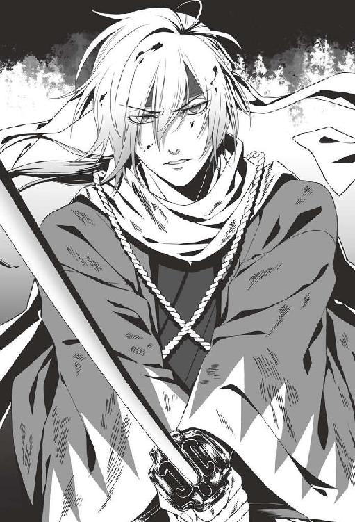
時折、斎藤が斬りつけられることもあるが、羅刹の治癒力は、その傷を一瞬のうちに癒してしまう。
「貴様がまがいものの鬼と成り果てたのは予定外だったが......せめてこれくらいは力が拮抗しておらぬと、戦い甲斐がないな」
並みの剣技の持ち主では目で追うことすら出来ぬ程の攻防を繰り返した後だというのに、風間の態度にはまだ余裕があった。
彼は、金に変じた瞳で斎藤を睥睨しながら、再び刀を構える。
「そろそろ、本気を出すとするか。まがいものの犬よ、覚悟はいいな？」
風間がそう告げた矢先。
「──おやめなさい！」
腹の底を大きく殴られるような怒声が、辺りに響き渡る。その声には、千鶴も聞き覚えがあった。
やがて樹上から人影が飛び降りてきて、二人の前に降り立った。
風間は不機嫌そうに片眉をしかめながら言い放つ。
「天霧......？ 何用だ。せっかくの宴を邪魔しにきたのか？」
だがその言葉を軽く受け流しながら、天霧は告げた。
「薩摩藩の大久保が、あなたを呼んでいますよ。早くお戻りなさい」
「人間ごときが俺に命令だと？ 会いたいのなら貴様から出向けと伝えておけ」
風間はにべもなく言い捨てるが、天霧は退こうとしない。
「お戻り下さい。今、薩摩藩といさかいを起こす訳にはいかない。あなたも、判っているでしょう」
「面倒な......」
風間は忌々しげに呟いた後、剣を鞘へと納めた。
そして、斎藤を見下ろしながら告げる。
「まがいものの番犬よ。しばしの間、我が妻をお前に預けておこう。非力な貴様に命じること自体が不毛だとも思うが......絶対に死なせるなよ」
その言葉に、斎藤は殺気のこもった眼差しのみで応えた。
だが風間は、そんな態度など歯牙にもかけぬ様子で続ける。
「いつか必ず、その女鬼を奪い返しにくる。その時を楽しみに待っていろ。いいな」
そう言い終えた一瞬後、風間は夜の闇の中へと姿を消す。
天霧は、何か言いたげな眼差しを斎藤と千鶴に送った後、同じように音も立てずに消えてしまう。
辺りには、再び夜の静けさが戻ってきた。
二人が姿を消した後も、斎藤は動かなかった。物言わぬまま、夜空をいつまでも見つめていた。
その胸にどんな思いが去来しているのか......、傍らで見ている千鶴には判らない。
彼はやがて、羅刹ではなくいつもの、人間の姿へと戻り──
「夜が明ける前に、山を下りるぞ。また厄介な連中が来るかも知れん」
感情の見えぬ声音で、そう言った。
そんな彼の姿を見ていると、千鶴の胸はいっぱいになり、真っ直ぐに彼の顔を見ることすら出来なくなってしまうのだった。
その後は、運良く敵兵に遭遇することもなく、何とか大坂城まで辿り着くことが出来た。
ひとまずここにいれば、敵と戦わずに済む。ただそれだけのことが、今はとてもありがたかった。
「あの......斎藤さん、お身体の具合は大丈夫ですか？」
千鶴がためらいながら問うと、斎藤は彼女を振り返らぬまま答える。
「今のところ、障りはない」
その口調も態度も、以前の彼と全く変わりがなかった。
「本当ですか？ 昼間起きているのは辛いって、山南さんや平助君は言っていたんですけど......」
すると斎藤は足を止め、ようやく千鶴の方を振り返る。
「仮に体調を崩したとしても、あんたが気にすることではない」
「ですけど──」
千鶴は、反論したかった。斎藤が変若水を飲んだのは、風間から千鶴を守るためだ。気にせずにいられる筈がない。
だが彼は厳しい声音のまま、突き放すように言う。
「『気にするな』と言っているのだ。あんたを守れというのは新選組の方針で、俺は、その命令に従っただけなのだからな」
「............」
責任感が強い斎藤らしい言葉ではあるけれど、もっと容赦なく責め立てられた方が、千鶴にとっては余程ましだった。
やがて彼は千鶴から目をそらし、ぼそりと呟く。
「......あんたの望みに添わぬ結果となってしまったが、致し方あるまい」
その言葉に、千鶴ははっとした。
『望み』というのはきっと、去年の年末、京の裏通りで千鶴が告げたあの言葉のことを言っているのだ。
──それでも私は......斎藤さんには、あの薬を飲んで欲しくないです。
あの時交わした言葉を、彼は今も覚えてくれていたのだ。そしてそのことを、申し訳なく思ってくれている。
彼を責めるつもりなどなかったけれど、こうしてそのことを詫びる斎藤の律義さが、とても切なく感じられた。
やがて斎藤が、ゆっくりと歩き出した。
千鶴はその背を追うように、歩き始める。
「それにしても、妙に騒がしいな。薩長との戦を控えて浮き足立っているのか」
見たところ、城内には負傷した幕兵が大勢運び込まれていた。新選組の隊士達もここにいる筈なのだが、今のところ、姿が見当たらない。
その時──
「おい、そこにいるのって......もしかして、斎藤か!?」
聞き覚えのある声に、呼び止められる。
振り返るとそこには、数日前、伏見奉行所で別れたきりの永倉が立っていた。
「やっぱり斎藤だ！ お前、生きてたのかよ！」
「ま、斎藤も、新八にだけは言われたくねえだろうな」
からかうように言いながら姿を現したのは、原田だった。
「永倉さん、原田さんも......ご無事だったんですね」
千鶴はそう言って、目尻に滲んだ安堵の涙を拭った。焼け落ちた伏見奉行所を目にした時は、最悪の結末も覚悟していたのだ。
「おうよ！ 俺が薩長の奴らごときに殺される筈がねえじゃねえか」
永倉は得意げに言った後、斎藤へを視線を移す。
「斎藤は、どこも怪我してねえみてえだな。さすが、無敵の剣の持ち主！」
「............」
永倉の言葉に、斎藤はわずかに顔を曇らせた。
彼らは知る由もないことだが、斎藤は、天霧や風間に手も足も出ず、最後の手立てとして変若水を口にしてしまったのだ。
斎藤の胸中を思うと黙っていられなくて、千鶴は思わず口を挟む。
「そういえば、伏見奉行所にいらっしゃった山崎さんと井上さんは、どうなさっているんですか？」
「あっ......」
千鶴の問いかけに、永倉の表情が陰りを帯びた。
「......もしかして、ひどいお怪我を？」
すると永倉に代わって、原田がこう答えた。
「山崎は、鉄砲で撃たれて大怪我してる。今、松本先生に診てもらってるが......かなり高い熱を出して寝込んでるからな。この先どうなるのか、判らねえ」
「そんな──」
千鶴は、足元の地面が崩れ落ちてしまうような錯覚を抱いた。
「井上さんは......？ 井上さんは、ご無事なんですよね？」
その問いを発した瞬間、最悪の想像がとっさに頭をよぎった。
そんなことが起きる筈がない。頭の中に留まっている嫌な想像を打ち消して欲しい。その一心で、千鶴は答えを待つ。
今度は、永倉が口を開いた。
「......源さんは、亡くなった。腹に鉄砲で撃たれた痕が残っててさ、多分、即死だったと思う」
その言葉を聞いた瞬間、千鶴の総身から血の気が引いた。
涙が込み上げてきて、全身の震えが止まらなくなる。
（武士というのは決して約束を違えないと、そう仰っていたのに......）
鉄砲で撃たれたなんて、さぞかし痛かっただろうし、無念だっただろう。呼吸が苦しくなり、震える喉から嗚咽が漏れた。
「とりあえず、皆の所に行こうぜ。生き残ってる皆は、集まってるからよ」
「はい......」
込み上げてきた涙を拭いながら、千鶴は頷いたのだった。
永倉の言葉通り、城内の一室には、土方や山南、藤堂、島田......生き残った新選組隊士達が揃っていた。
「斎藤！ それに雪村も......生きてたのか」
驚きと喜びの表情を浮かべた土方が、二人を出迎えてくれる。
「ご心配をおかけして申し訳ございません、副長」
斎藤は、相変わらずの折り目正しい仕草で一礼した。
「いや......詫びることじゃねえさ。生きててくれて何よりだ」
立場上、滅多に内心を表さぬ土方ではあるが、今日ばかりは例外らしい。満面に、安堵の表情が浮かんでいる。
やがて彼は、居並ぶ隊士達に向き直ってこう告げた。
「とりあえず、生き残った幹部連中はこれで全員揃ったって訳だな」
「そうなるな。......夢も希望もねえ作戦会議としゃれこむか」
皮肉交じりに応じたのは、原田だった。
「夢も......希望もない？」
その言葉の意味するところが判らず、千鶴は他の幹部隊士の様子を窺った。
「いや、覚悟して聞いた方がいいぜ〜。俺も、聞いた瞬間は頭から魂が抜けて、どこかに飛んでっちゃいそうだったからな」
憮然とした調子で言ったのは、永倉だ。
「どういうことです......？」
彼女が戸惑いながら問うと、土方が答えてくれる。
「まあ、結論から言うと、今回、幕軍はかなりの苦境に立たされてる」
「えっ......？」
言葉の意味がすんなりと頭に入ってこず、千鶴は戸惑った。
戦が始まったばかりの頃、斎藤は言っていた筈だ。幕軍の数は一万五千、そして薩長の軍勢は、多く見積もってもその半分程度だと。それだけの戦力差があるのに苦境に立たされることなど、果たしてあるのだろうか。
整った顔を忌々しげに歪めながら、土方は言った。
「......中立だとか訳の判らんことを抜かして、援軍の要請を断る藩が多くてな。徳川御三家筆頭の尾張藩までが、日和見決め込んで中立を名乗りやがった」
その言葉に、千鶴は二の句を継げなくなった。
徳川御三家といえば親藩の代表格で、将軍を輩出することもある藩だ。そんな藩が幕府を裏切ったなんて、とても信じられなかった。
「戦が始まってるのに、中立も糞もねえだろ。薩長に付くってはっきり言わねえ辺り、何とも姑息だよな」
原田も、苛立ちを隠そうともせずに言い捨てる。小細工や裏工作を嫌う彼にとって、今回の戦の顛末は、到底納得出来ぬものであるらしい。
「戦況は、そんなに悪かったのですか」
斎藤が半ば呆然とした調子で尋ねると、土方は、苦い溜め息と共に答える。
「薩長の連中が、化け物みてえに遠くまで届く新式の銃を使ってやがってな、こっちの間合いの外から撃たれちまうんで、防ぎようがなかったんだ。おまけに連発式だから、懐に飛び込む隙もねえときた。もう、刀じゃ戦は出来ねえってことだな」
「............」
土方の言葉に、斎藤は絶句した様子だった。
常人離れした居合の技を持ち、剣で身を立ててきた斎藤は、刀に対して並々ならぬ思い入れを持っている筈だ。それを否定され、どんな思いでいるのか......想像するだけで、千鶴は胸が痛くなった。
彼は少しの間、顔を伏せていたが、やがて再び土方達に向き直る。
「副長、ご報告したいことがあります」
「何だ？」
怪訝そうに見つめ返す土方を真っ直ぐに見据えながら、斎藤は答えた。
「ここに辿り着くまでの道のりで、我々は、風間に遭遇しました。危うく命を落とすところでしたが......変若水を飲み、羅刹となることで、俺は一命を取り留めました」
「何だって──!?」
斎藤の告白で、その場にいる全員が顔色を変えた。
「お前、どうしてそんな真似したんだよ！」
永倉が、非難めいた言葉を投げつける。
彼も、斎藤や沖田と並ぶ剣術の達人で、斎藤の剣の腕には絶対の信頼を置いていた筈だ。だからこそ、やり切れぬ思いに苛まれているに違いない。
だが当の斎藤は、どこまでも静かな声で答えた。
「......そうせねばならぬ状況だった。後悔はしておらん」
その言葉には迷いなど微塵も込められておらず、だからこそ、他の隊士達もかける言葉が見つからぬ様子だった。
土方はしばらくの間、沈黙していたが......。
「......そうか。お前も、なっちまったか」
一言だけそう呟いて、苦しげに目を閉じた。
右腕のような存在の斎藤が羅刹となったことに、忸怩たる思いを抱いているに違いない。が、永倉のようにそれを率直に表す性分でもないということなのだろう。
しばらくの間、誰も言葉を発することが出来ぬままだったが、やがて土方が顔を上げ、その場から立ち上がる。
「よし、とりあえず現状報告も終わったところで、荷物をまとめてくれ。これから船で、江戸に向かうらしい」
「えっ？ 江戸に向かうって、どうしてですか？」
千鶴が問いかけると、その場にいる誰もが一様に、落ち込んだような投げやりな表情になる。
答えたのは、永倉だった。
「......俺達の総大将様は、一所懸命戦ってた幕軍を置き去りにして、とっくに江戸に戻っちまってるんだとよ」
「............」
「聞いた時は、さすがに呆れたね。こんな戦、前代未聞だぜ。多分、これから先もねえんじゃねえの？」
永倉の言葉が、虚ろに千鶴の上を通り過ぎていく。
（だって、井上さんは今回の戦で亡くなって、山崎さんも大怪我をして......多分、幕軍の中には、同じように怪我をしたり亡くなった方がたくさんいる筈なのに）
兵の支えとなる筈の徳川慶喜が、それを全て放り捨てて真っ先に逃げ出してしまうなんて、とても信じられることではなかった。
千鶴は、斎藤の方を振り返る。
彼は、正座して顔を伏せたままだったが、その肩からは完全に力が抜けていた。彼の心中を思うと、慰めの言葉すら見つからない。
やがて土方は、頭をがりがりと掻きながら、投げやりに言う。
「ま、上にゃ上の事情があるってことだろう。俺達は俺達で、後の世に恥じねえ戦をすりゃいいだけのことだ」
「......はい」
斎藤の唇からようやくその一言が返ってきたが、その瞳には、失望と諦めの色が浮かんでいた。
その後、新選組隊士達は、先刻土方に命じられた通り、江戸行きに備えて荷物をまとめることになったのだが......。
信じがたいことばかりを続けざまに聞かされたためだろうか、皆、出立の支度もはかどらぬ様子だった。どの隊士も、無気力な表情で落胆の溜め息をついている。
永倉は壁にもたれかかりながら、ぼそりと漏らす。
「先に江戸に戻っちまったのは、慶喜さんだけじゃねえみてえだぜ。俺達にあんだけ良くしてくれた松平中将様も、一緒に逃げちまったんだとよ」
「松平中将様が......!?」
その言葉に、千鶴は再度、驚かされた。
会津藩主・松平容保といえば、新選組の後ろ盾となり、四年に渡って面倒を見続けてくれた人物だと聞いている。
そんな彼までもが新選組を見捨ててしまったなんて、信じられることではなかった。
「間違いねえみてえだぜ。......所詮、俺達は使い捨てってことだ」
永倉は壁にもたれかかったまま乾いた声でぼやくが、誰も答えようとしない。
彼が発した『使い捨て』という言葉が重くのしかかってきて、千鶴もしばらくその場から動けなかった。
そんな中、それまで端座したまま黙り込んでいた斎藤が、静かに立ち上がる。
「......雪村」
「あっ......は、はい！」
突然声をかけられ、千鶴は少し驚いて顔を上げた。
「これから怪我人の様子を見に行こうと思うが、同行を頼めるか？ 恐らく、医者の手が足りておらぬ筈だ」
そう尋ねる斎藤の様子は、一見いつもと変わらなかったが──
（きっと、深く傷ついてらっしゃるに決まってる。あんなことを聞かされた後だもの）
自分達が守るべき総大将に裏切られ、見捨てられながらも、決して投げやりになったりはしない。そんな彼の気丈さを眩しくは思うけれど......。
「私達、これからどうなってしまうんでしょう？」
弱気な言葉が、つい彼女の口をついて出た。
「どうなる、とは？」
不機嫌な内心を隠そうともせず、斎藤は尋ねてきた。
その声音に委縮しながら、千鶴はなおも問いかける。
「......慶喜公は私達を置いて、江戸に戻ってしまったんですよね？ 幕府はこれから先、薩長と戦うつもりがあるんでしょうか？」
答えが返ってくるまでに、少しの間があった。恐らく斎藤も、その答えを見つけ出せてはいないに違いない。
「それは、我々が考えるべきことではない。差し当たって必要なのは、怪我人を船へ運び込むこと、そして江戸へ戻る支度をすることだ。余計なことに気を揉んでいる場合ではなかろう」
それはまるで、疑問を抱いたことをも問題視するかのような、有無を言わせぬ口調だった。
（斎藤さんはどんな時でも、私の疑問にはきちんと答えて下さっていたのに）
今の彼の物言いはまるで、目の前の問題から目を背けようとでもしているかのように、千鶴には感じ取れた。
けれど、それも仕方がないことだと思い直した。彼も今は、余裕をなくしているのだ。
「......すみませんでした。行きましょう、斎藤さん」
彼女がそう告げると、斎藤は口元をわずかに緩めた。やや安堵したように見えた。
その時、襖が音を立てて開く。入ってきたのは、土方だった。
彼は、部屋の中に座り込んでいる隊士達を睨みつけながら、舌打ちする。
そして、こう叫んだ。
「おい、てめえら！ 何をモタモタしてやがる。さっさと江戸行きの支度をしろって言っただろうが！」
いつもなら、隊士の誰もがこの一喝で震え上がり、背筋をしゃんと伸ばす筈だが......。
今は皆、背骨を抜かれてしまったようにのろのろと立ち上がるふりをするだけだ。
そんな様子に苛立ってか、土方はさらに語調を強めた。
「見捨てられたから、何だってんだ？ さっさと逃げちまった総大将なんて、守る値打ちはねえってのか？」
半ば挑発的に言い放った後、彼は腹の底から響く声で絶叫する。
「──てめえらは、武士だろうが！ 幕府がぶっ潰されそうになってんのに、命を懸けて守る武士が一人もいなくて、どうするんだよ！」
その言葉を聞いた瞬間、それまで虚ろだった斎藤の瞳に生気が戻った。
そして、厳しい表情で千鶴の方を振り返り──
「雪村、行くぞ」
短く告げた後、足早に広間を出た。千鶴も慌てて彼を追いかける。
まだ、日が高い刻限だ。廊下に出ると、窓からは鮮やかな日差しが燦々と差し込んでいる。
「うっ......」
斎藤は苦し気に顔をしかめ、袖口で顔を覆った。
「大丈夫ですか？ しっかりして下さい」
千鶴が日差しを遮るようにすると、彼は、青ざめた顔を左右に振る。
「......問題ない。行くぞ」
だがその顔色は重病人のそれで、どう見ても平気そうには見えなかった
「あの、気分が悪いのでしたら、夜になるまで休んでらした方がいいのでは？」
千鶴はためらいながら進言したが、斎藤は首を横に振る。
「先程の副長の言葉で、目が覚めた」
「えっ......？」
「たとえ慶喜公の行状がどうであろうと、我々が主君を見限っても構わぬということにはならん。俺は一体、何を迷っていたのか......」
このような状況に置かれてなお、誰かを責めるのではなく、己の心を戒めることのみを考える斎藤の姿に、千鶴も、閉じていた目を開かされた思いになった。
（こんな風に斎藤さんの姿勢に心打たれたのは、何度目だろう）
他人から謗りを受けることを厭わぬ強さと、無私そのもののあり方が、とても尊く感じられた。
そして、そんな彼の姿を目にするたび、思うのだ。
弱音ばかり吐いている訳にはいかない。並び立つのは無理だとしても、少しでも彼に近付きたい、強くなりたいと。
「行くぞ。あんたの医術の知識を必要としている怪我人が、多くいる筈だ。局長や総司の具合も確かめねばな」
斎藤に促され、千鶴は深く頷く。
「......はい、行きましょう。斎藤さん」
そして、慶応四年一月八日、新選組は大坂湾から撤退することになった。
鉄砲による怪我で苦しんでいた山崎烝は、高い熱を出して苦しみ抜いた末、船上で息を引き取った。
監察方の要として、長年新選組を支えていた彼が水葬された時は、隊士の誰もが嘆き悲しんだ。近藤は肩の傷も癒えていないのに、涙を流しながら追悼の句を詠んだ程だった。
これ以上の悲報など聞きたくないと、千鶴は強く思ったが──この悲しみは序章に過ぎぬという不吉な予感を、脳裏から追い出すことはなぜか出来なかった。
第四章
幕府軍の黒船で無事に江戸へと辿り着いた新選組は、とある旗本の邸宅を屯所として借り受けることになった。
江戸の市中は薩長軍の噂でもちきりで、町人達は、彼らがいつこの江戸へ攻め込んでくるかと不安に慄いている様子だ。
幕府軍の総大将たる徳川慶喜は、あくまでも恭順の姿勢を貫くつもりらしく、上野の寛永寺で謹慎しているとのことだった。
山南や藤堂は、半ば壊滅状態の羅刹隊を強化するため、あちこち奔走しているらしい。
どのような方法で強化するのかを考えると、不安に駆られたが......隊士でない千鶴がとやかく言うことなど出来る筈もなく、近藤や土方が上手く彼らを制してくれることを願うばかりだった。
そして、二月も中旬を過ぎた頃、千鶴が広間の片付けをしていると──
「ふあ〜あ......おはよう、千鶴ちゃん」
眠そうな目を擦りながら姿を現したのは、永倉だった。
「あっ、おはようございます、永倉さん」
千鶴がにこやかに挨拶を返すと、彼は、がらんとした広間を軽く見渡してから尋ねてくる。
「土方さんの姿が見当たらねえけど、また江戸城に出かけてんのか？」
「はい。幕臣の方々から、薩長と戦う許しを頂かなくてはならないとのことで。なかなか、面談の機会を頂けないみたいですけど」
「そっか！ んじゃ多分、夜まで帰ってこねえな。ちょっくら出かけてくるか」
「お出かけというのは、どちらに？」
すると永倉は、ばつが悪そうに視線をさまよわせながら、しどろもどろに答える。
「ん？ まあ......屯所の中に閉じこもりっきりじゃ、気も塞いじまうからな。何つうか、気分転換でもしてこようと思ってよ」
この歯切れの悪い答え方からすると、恐らく酒を飲みに行くつもりなのだろう、と千鶴は推測した。
「差し出がましいかも知れませんけど、今日は屯所でゆっくりなさっては？ 斎藤さんや島田さんも、お忙しそうにしてらっしゃいますし」
彼女がためらいながら苦言を口にすると、永倉は、おどけた口振りで答える。
「今日だけだって、今日だけ！ 新入りの隊士連中にも息抜きさせてやらなきゃならねえしよ。そんじゃあな！」
ふざけて頼み込む仕草をした後、永倉は逃げるように広間を出て行ってしまう。
「あっ......」
呼び止めようかとも思ったが、「隊士達のため」と言われてしまうと止めることも出来ず、千鶴は小さく息をつきながら片付けを続けた。
江戸に戻ってきてからというもの、永倉や原田は連日のように町へと繰り出すようになった。
試衛館出身の古参の隊士にとって、江戸は故郷のようなものだ。東国にいる知人と旧交を温めたいという思いもあるだろうし、咎め立てするつもりにはなれなかったが......。
（皆さん方、やっぱり、鳥羽伏見の負け戦を引きずってらっしゃるのかな）
近藤が昨年負った肩の傷も順調に癒え、近々、隊に復帰出来るという知らせが先日入ったが、近藤や土方の今の役目は今や、幕臣達との交渉が中心となっている。
結果として、今、屯所で最も忙しそうにしているのは......。
千鶴の背後で、すっと襖が開く音が聞こえた。振り返ると、そこには斎藤の姿がある。
「雪村、硯と墨がどこにあるか知らぬか？」
今朝から姿が見えぬと思ったら、どうやら部屋にこもって仕事をしていたらしい。彼らしくなく、口調に焦りが含まれている。
「硯でしたら土方さんの部屋にあると思いますけど......勝手に使ったりしたら、きっと叱られてしまいますよね」
千鶴は片付けの手を止め、立ち上がる。
「ちょっと待っていて下さい。もう一組あったと思うので、探してきます」
「ああ。なるべく早く頼む」
その後、別室の荷物の中から硯を見つけ出した千鶴は、すぐに斎藤が待つ広間へと戻った。
「斎藤さん、硯と墨って、これで大丈夫でしょうか？」
「ああ」
短く答えて、斎藤は硯を受け取った。そしてそのまま、再び自室へと戻ってしまう。
（まだ日が高いのに......斎藤さん、大丈夫なのかな？）
今目にした限り、顔色はさして悪くは見えなかったが、彼は羅刹となってしまっているのだ。昼間起きて、人間だった頃と同じ量の隊務をこなすことなど、出来る筈がない。
（私が心配することじゃないって、斎藤さんは言うだろうけど......）
どうしても放っておけなくて、千鶴は、斎藤の様子を見に行くことにした。
「斎藤さん、お茶をお持ちしました」
勝手場で茶を淹れてきた千鶴は、障子戸の向こうに声をかけた。
「茶を頼んだ覚えはないが」
戸の向こうからは、斎藤のそっけない応えが返ってくる。
「確かに、頼まれてはいませんけど......喉、渇いてらっしゃいませんか？ 少し休憩を入れた方が、お仕事もはかどると思いますよ」
少しの間があった。
もしかして余計なことをしてしまっただろうか、と千鶴が懸念した矢先。
「......入れ」
短く促され、千鶴は「失礼します」と声をかけた後、障子戸を開ける。
戸を開けたところには、文机に向かっている斎藤の後ろ姿があった。濃い墨の匂いが、部屋の中に漂っている。
千鶴は、淹れたての茶が入った湯呑みを、そっと机の上へと置く。机上には、まだ綴じていない書類がうずたかく積んであった。乾きかけの書類が部屋のあちこちに並べられており、果たしてこの作業を全部今日一日で終えることが出来るのだろうか、と千鶴は心配になった。
「あの......何か、お手伝い出来ることはありませんか？」
「特にない」
書類から目を離さぬまま、斎藤は淡々と答えた。
その冷淡な対応に委縮しつつ、千鶴はなおも食い下がる。
「でも、一人でこんなにたくさんのお仕事をするなんて......無理ですよね」
「無理ではない。あんたは自分の仕事をしろ」
「私の仕事はもう終わりましたから、大丈夫ですよ。何でも言いつけて下さい」
すると斎藤は、ようやく千鶴の方を振り向いてくれた。そして無表情のまま、彼女をじっと見つめてくる。
どこか物憂げな瞳で見つめられると、千鶴はどうしても平静でいられなくなってしまう。心の奥底を覗き込まれているような心持ちになるのだ。
だが、表面上は平静を保ちながら斎藤の答えを待っていると、彼は思案の後に答えてくれる。
「では、この紙束を綴じるのを手伝ってくれ。綴じるための紙縒りと千枚通しはそこにある」
「はい、判りました」
千鶴は少しほっとして、言われた通り書類を綴じ始めた。
墨を磨る音と紙をめくる音だけが、静かな室内に響き渡る。一言の会話もなかったが、斎藤が発散している穏やかな気配のせいだろうか、不思議と気まずさは感じない。
千枚通しで紙に穴を開けながら、彼女はこっそりと斎藤の姿を盗み見た。
（斎藤さんが羅刹になってから、もう一ヶ月以上になる筈だけど......）
見たところ、彼の様子は変若水を飲む前と何ら変わりがない。本来、こうして昼間働くことなど叶わぬ筈なのだが、今、千鶴の目の前にいる斎藤からは、そんな気配が微塵も感じ取れなかった。
彼を見ていると、あの時羅刹になってしまったのは夢の中の出来事だったのではないかと、錯覚してしまいそうになるが......。
（でも、そんな筈はない。だって私は、この目でしっかりと見たんだから）
そんなことを思った時だった。
「──痛っ！」
千鶴が思わず悲鳴を上げると、斎藤が気遣わしげに振り返る。
「どうした？」
「千枚通しで指を刺してしまって......。すぐ治りますから、気にしないで下さい」
彼女は傷口を舐めながら、彼に心配をかけぬよう明るい声音で答えた。
だが......。
「指を......？」
そう問いかけてくる斎藤の眼差しがいつもと違うことに気付き、千鶴ははっとする。
いつもは穏やかな光を放っている筈の濃藍の双眸が、今は狂気の色を滲ませながら、千鶴の指先から流れる血を凝視している。青ざめた顔に、瞳だけがぎらぎらと輝いていた。
その視線に一種の異様さを覚え、彼女は、不安に駆られながら呼びかける。
「あの、斎藤さん......？」
すると彼は、はっと我に返った様子で息を呑んだ。
そして大袈裟に目をそらし、千鶴に背を向けて、何事もなかったかのように再び書類を書き始める。
だが先程までと違い、集中出来ぬ様子だ。書き損じをしたらしく、苛立った様子で紙をくしゃくしゃに丸め始める。
こんな問いを投げかけてもいいものか、千鶴は少しの間、葛藤したが......。
「あの、斎藤さん。もしかして、血が......？」
『欲しいんですか』と問う言葉が、途中でかき消えた。
だが、彼女が言わんとすることは伝わったらしい。黒い着物に包まれた肩が、ぴくりと跳ねる。
答えを待たずとも、その様子から、斎藤の内心がはっきりと見て取れた。
「やっぱり、そうなんですね？ どうしてそんなご無理を？」
斎藤は、答えない。千鶴に背を向けたまま、口をつぐんでいる。
彼女は、さらに言った。
「羅刹になった他の隊士さん方のように、昼間休むようにすれば、お身体の負担も小さくて済むのに──」
すると斎藤は、わずかな苛立ちを込めた息を吐き出した。
そして、千鶴を睨むように見据えながら、言い放つ。
「俺が昼間ここを空けたら、誰があんたを守るというのだ？」
「えっ......？」
思いもよらぬ答えが返ってきて、千鶴は戸惑った。
「風間があんたを連れにきた時、眠っていて気付きませんでした、では話になるまい」
「............」
「他の人間は出払ってしまっている。だから、俺が起きて見張っているだけだ。何か問題があるか？」
にべもなく言い放たれ、彼女は顔を上げられなくなる。
「いえ、問題はありませんけど......」
一旦そう答えた後、ためらいながら問いかける。
「では、斎藤さんがこうして昼間起きてらっしゃるのは、私を守るために......？」
千鶴は、いたたまれなくなった。もし彼女が風間達に狙われる身でなければ、斎藤も、こんな苦しみを強いられることなどなかったということだろうか。
（いえ、私が鬼でなければ、斎藤さんがあの時変若水を飲むことだってなかったに違いない──）
彼女が罪悪感を抱いているのに気付いてか、斎藤は、なだめるように付け加える。
「......誤解させたようだな。別に、あんたのせいだなどと言うつもりはない。俺はただ、隊の方針に従ってこうしているまでだ」
「ですけど──」
だからといって、自分に責任がまったくないなどと考えることは、千鶴にはとても出来なかった。
だが斎藤は、彼女を跳ねつけるようにぴしゃりと言う。
「これも隊務の一環だ。あんたが気にすることではない」
ぶっきらぼうに告げた後、彼は再び文机に向かい、墨を磨り始めた。
「............」
千鶴は何を言えばいいのか判らなくなり、しばしの間、斎藤の背中を見つめた後、再び作業に戻ったのだった。
そして、その日の晩、千鶴は自室で藤堂達が起き出してくる刻限を待った。
日が沈み、辺りが夜の静けさに包まれ始めた頃......。
「......！」
足音を忍ばせて廊下を歩く気配に気付き、千鶴は立ち上がって障子戸を開けた。
思った通り、そこには藤堂の姿があった。
「平助君！」
抑えた声で呼びかけると、彼は、やや面食らった様子で振り返る。
「あれ、千鶴。どうしたんだ？」
「ちょっと聞きたいことがあるんだけど......いいかな？」
「何だよ、珍しいな。特に予定がある訳じゃねえし、別にいいけど」
「良かった。ちょっと、中に入ってちょうだい」
他の隊士達の目がないことを確かめてから、千鶴は藤堂を自室へと迎え入れた。
彼は畳の上に腰を下ろしながら、早速尋ねてくる。
「で、聞きたいことってのは何なんだ？」
「あのね......」
藤堂に打ち明けていいものか、千鶴は少しためらった。
けれど、訊かぬ訳にはいかない。意を決して、彼女はその問いを口にする。
「羅刹になってから昼間動き回るのって......どれくらい大変なの？」
「......何だ、一君のこと？」
斎藤が羅刹となったことは、既に山南や藤堂、羅刹隊の者達の知るところとなっていた。
なぜ彼が羅刹隊に入隊せず、今までと変わらぬ立場に留め置かれたのかは、千鶴も与り知らぬ事情があるようだったが、恐らく人手不足、そして斎藤自身の希望が反映された結果だろうと推測出来た。
「斎藤さん、羅刹になってからも以前と同じように働いていて、とても苦しそうなの。それに、あの......」
伝えようとした台詞が、途切れてしまう。今日の昼間起きた出来事について説明しようとしたが、どうしても言葉が出てこない。
だが、千鶴の態度や表情、そして二人の間に流れた気まずい沈黙から、藤堂はおおよその事情を察した様子だ。
「もしかして一君、血を飲みてえって言ってたのか？」
心の中を言い当てられ、千鶴は声を呑んだ。
彼女のその様子から、状況を悟ったのだろう。困惑げな溜め息が、藤堂の口から漏れる。
「......やっぱりな。そろそろ発作が出てなきゃおかしいと思ったんだ。昼間、あれだけ動いてるんだから」
「どうすればいいの？ やっぱり、血を......飲んでもらった方がいいの？」
「............」
千鶴の問いに、藤堂はすぐに答えようとしなかった。
斎藤の身に起きている変化は、藤堂にとっても他人事ではない。近い将来、同じような出来事が彼の身に降りかかるかも知れないのだから、彼としても答えにくいのだろう。
（だけど、どうすれば斎藤さんを助けられるのかを教えてくれるのは、平助君しかいない）
千鶴は答えを急かさず、根気強く藤堂の答えを待った。
やがて彼は、半ば諦めたように答えを告げてくれる。
「......もし発作が起きたら人の血を飲むのが一番だって、山南さんは言ってたけど」
藤堂から返ってきた容赦ない答えに、千鶴は打ちのめされた。
（斎藤さんが、人の血を......）
その場に崩れ落ちそうな程の眩暈に襲われる。
どんな時でも折り目正しく、意志が強く高潔で、武士そのものだった斎藤が、人の血を啜らなくては正気を保てぬようになってしまうなんて──
「おい、大丈夫か？ 顔、真っ青だぞ」
藤堂は千鶴の肩に手をかけて支えながら、心配そうに声をかけてくれた。
「......平気。心配しないで」
青ざめた顔のまま、千鶴は答えた。
その言葉を信じた訳ではないだろうが、彼女の胸の内が判らぬ藤堂でもないのだろう。心配顔で千鶴を見やった後、懐の中から何かを取り出した。
「あのさ、これ、やるよ」
そう言って彼が差し出したのは、紙に包まれた粉薬だった。
「これは......？」
「綱道さんが壬生に残していった資料を見て、松本先生が調合してくれたんだ。こいつを飲めば、しばらくの間は発作を抑えられるんだってよ」
「本当に!?」
まさに、天の助けだった。この薬さえあれば、斎藤を苦しみから救うことが出来るかも知れないのだ。
「でも、どうして松本先生が......」
松本良順は、新選組が変若水の研究を続けることに反対していたと、千鶴は記憶している。
「まあ、先生も抵抗はあったみてえだけど......医者として、目の前で苦しんでる人を放ってはおけねえってさ」
「そうなんだ......」
いかにも松本らしい言だと、千鶴は思った。
彼女は藤堂から受け取った薬を、着物の袂へと大切に仕舞い込む。
それから改めて、彼に尋ねた。
「この薬は、発作が出た時に飲んでもらえばいいの？」
「ああ」
その後、彼は付け加えるように言った。
「でも、発作がひどくなると効かなくなっちまうらしいから、あくまでもその場しのぎでしかねえってことは覚えておいてくれよな」
「......うん、判った。大切に使うね」
完全な解決には至らなくとも、何の手立ても見つけられぬままでいるよりは、余程ましだった。
やがて藤堂は、どこか面映ゆそうな仕草で立ち上がる。
「そんじゃオレ、そろそろ行くよ。女の部屋に長居するのも何だし」
そう告げて、部屋を出ようとするが......。
途中で思いとどまったらしく、足を止めて千鶴の方を静かに振り返る。
「どうしたの？ まだ何か用事が？」
彼女が尋ねると、藤堂は思いつめたような表情で言った。
「あのさ、一君のこと......気を付けてやってくれよな」
「えっ......？」
「鳥羽伏見の戦の後、山南さんが一君を羅刹隊に誘ったらしいんだけど、断られちまったんだってさ。『人手不足のこの時期に、俺が羅刹隊に入る訳にはいきません』って」
「............」
やはりそうだったのか、と千鶴は思った。
己の身の無事よりも、新選組が大切だと考える。彼女が知っている斎藤は、そういう男だった。
「新選組や土方さんのために働くことが一君の全てで、それ以外の道なんて考えられねえんだと思う。そこはオレも、すげえと思うけど......」
紡がれた言葉が、どこか切なげに途切れた。
そして少しの沈黙の後、こう告げる。
「でもオレにとって一君は仲間だから、無茶をしてぶっ倒れたり、死んじまったりなんてして欲しくねえんだ。本当は、オレが気を付けてやれりゃいいんだろうけど......今のオレには、無理だからさ」
「平助君......」
不器用だが温かいその言葉に、千鶴の胸は痛んだ。
だがその内心を覆い隠し、藤堂に微笑みを返す。
「......うん、判ってる。斎藤さんのため、私も、出来るだけのことをするから」
その言葉に安心した様子で、藤堂は口元を緩ませた。そしてそのまま背を向け、今度こそ部屋を後にする。
（斎藤さんにとって、新選組や土方さんの命令が全て、か......）
それは千鶴も、ずっと前から思っていたことだった。
初めて会った時から、斎藤は土方の命令に絶対服従で、己の身や命に頓着しておらぬようなそぶりさえ見せていた。そのひたむきな姿に、千鶴もいつの間にか惹きつけられていたのだが......。
（斎藤さんはきっと「要らぬ世話だ」って仰るだろうけど）
彼は他人の手助けなど当てにはしていないだろうことも、よく判っていたけれど、それでも──
（彼が羅刹になってしまったのは、私を守るためだった。私が彼を羅刹に変えてしまったようなものなんだから、せめて、苦しみを紛らわせる方法を見つけてあげたい）
千鶴は、先程藤堂から受け取った薬を、懐から取り出した。丁寧に折りたたまれた薬包紙の中で、粉薬がさらさらと揺れている。
（平助君はさっき、父様が壬生に残していった資料がどうとかって言っていたっけ。もしかしたら実家の診療所にも、何か手掛かりが残されているかも知れない）
明日にでも様子を見に行ってみよう、と千鶴は人知れず決意したのだった。
翌日の昼、千鶴は広間に書き置きを残し、屯所から程近い場所にある実家へと向かった。
鬼に狙われている彼女は、一人での行動は許されていないのだが、隊士に護衛を頼もうにも、皆、出払ってしまっていたのだ。
（すぐに戻るつもりだし、きっと大丈夫だよね）
いつ何時、斎藤が吸血衝動に襲われるかは判らない。だから出来るだけ早く、手を打っておきたかった。
数年ぶりに訪れた実家だが、長い間人の出入りがなかったためか、玄関の前にも庭にも雑草が生い茂り、荒れ放題に荒れていた。
（本当なら掃除をしたいところだけど、今は時間がないし......）
丈の高い雑草を掻き分けて進みながら、千鶴は玄関の戸を開けた。建物の中には冷えて澱んだ匂いが満ちていて、床には分厚い埃が積もっている。一歩歩くたびに、埃がぶわっと舞い上がった。
変若水や羅刹の資料があるとすれば恐らく、父・綱道の部屋だろう。足袋が汚れるのも構わず、千鶴は父の部屋へと向かった。
だが......。
（やっぱり、ここにはないのかな）
汗だくになりながら、埃だらけの部屋の中を探してみたのだが、それらしい資料は見つけられなかった。
（斎藤さんを楽にしてあげられる方法を、何とかして見つけ出したかったのに......）
肝心な時に役に立てぬ自分が情けなくて、千鶴は唇を噛んだ。
（......そろそろ屯所に戻らなくちゃ。私がいなくなったことに、隊士のどなたかが気付いてしまったかも知れないし）
疲れのため、いつもより重く感じられる身体で立ち上がると、玄関の方から物音が聞こえてきた。
もしや物盗りか、と思い、千鶴は身を固くした。
障子戸の近くに立ち、息を殺して部屋の外の様子を窺う。
だが、その矢先。
「っ──!!」
ギッ、と床が軋み音を立ててしまい、全身から血の気が引いた。
（もしかして、気付かれてしまった？）
身を固くしながらも、千鶴が懸命に気配を殺したその時。
「そこに、誰かいるのか？」
その声が聞こえた瞬間、彼女の頭の中から一切の思考力が消え失せた。
（この声は......！）
数年ぶりに耳にする声音だったが、聞き間違えることなどあり得ない。今のたった一言を耳にしただけで、懐かしくて涙が溢れそうだった。
「父様......」
思わずそう呼びかけそうになって、慌てて口をつぐむ。
鳥羽伏見の戦の最中、天霧は言っていた。
──私は、綱道や風間の考えに賛同している訳ではないのですよ。
（天霧さんがあの時、父様の名を出したのはなぜ？ 私を動揺させるために言っていただけなの？ それとも......）
まだ新選組が西本願寺を屯所としていた時、訪ねてきた松本良順が漏らした言葉を思い出す。綱道は尊攘浪士と行動を共にしている、と。
果たして、そんな綱道の前に姿を見せてしまっていいのだろうか。父は今も、昔のままの父なのだろうか。
迷う千鶴をよそに、障子戸が音を立てて開いた。そして......。
「千鶴......」
懐かしい声でそう呼んだのは、思った通り、四年前に消息を絶った彼女の父──雪村綱道だった。
笑い皺が刻まれた目尻も、穏やかな眼の光も、彼女がよく知る綱道のものだ。
「久し振りだな。随分と女らしくなったね」
綱道のその言葉で、こらえていた涙が堰を切って一気に溢れ出す。
「父様......」
胸が詰まって、言葉が出ない。込み上げてきた涙のせいで、目の前の父の姿がぼやけて霞んだ。
彼は、皺がたくさん刻まれた手を、娘へと伸ばしてきた。その着物からは、嗅ぎ慣れた薬の匂いが立ちのぼっている。
「よく顔を見せておくれ。この四年間、障りはなかったかい？」
彼の目尻には、うっすら涙さえ浮かんでいた。
演技で、こんな表情が出来るものだろうか。少なくとも、今こうして優しく見下ろしてくれている綱道の瞳に嘘はないと、千鶴は確信を強める。
（きっと、何かの間違いなんだ。父様が、鬼や尊攘派の浪士達と志を同じくしているなんて、そんなこと、あり得る筈がない──）
髪に触れてくる温もりは優しくて、父との間に横たわっていた空白の時間が、溶けてなくなってしまったような錯覚を千鶴は抱いた。
父の手に己の手を重ねながら、彼女はこう尋ねる。
「父様......今まで、どちらにいらしたんですか？」
父の潔白を確かめたくて、投げかけた問いだった。髪を撫でる手が、一瞬止まる。
はっとして綱道の顔を見上げると、その口元には微笑みが宿っていた。そして、その薄い唇が、ゆっくりと言葉を紡ぐ。
「......とある藩に、匿われていたんだ」
その答えに、千鶴は違和感を覚えた。穏やかな口振りでありながら、その声色の中からどこか作り物めいた響きを感じ取った、とでも表せばいいだろうか。
（『とある藩』って、一体どこなんだろう？）
やましいことがなければ、藩の名を伏せる意味などあるまい。千鶴の胸中のわだかまりが、次第に疑惑へと変じていく。
だが綱道は、そんな娘の内心など気にかけておらぬ様子で......。
「それよりも、お前の話を聞かせておくれ。今まで、一体どうしていたんだ？」
「私は......」
話をそらされたことに違和感を持ちつつも、千鶴は父に求められるまま、江戸を発ってからのことを語った。
ひょんなきっかけから新選組に世話になっていたこと、その後、何度も身近で起きた事件について。そして鳥羽伏見の戦に敗れ、江戸へ戻ってきたこと。
綱道は丁寧に頷きながら千鶴の話に耳を傾けていたが、やがて、申し訳なさそうに眉尻を下げ......。
「成る程。お前も、随分辛い目に遭ってきたんだね」
「いえ、私はそんな......」
本題はここからだ、と千鶴は思った。
（天霧さんのあの時の言葉が本当なのか、確かめてみなくては）
父の本音を知るのが怖い、という思いがないと言えば嘘になる。だが、どうしても確かめねばならぬことでもあった。
綱道の瞳を見据えながら、千鶴は時が止まったような沈黙を破る。
「......父様。『鬼』と名乗る人達のことを、ご存知ですか？」
憐れむような眼差しで千鶴を見つめていた瞳から、表情が消えた。まるで能面のような顔は、今まで千鶴が目にしたことがない表情で、千鶴は恐れに似たものを抱く。
「そうか。お前も、彼らに出会ったのだね」
やはり、父も知っていたのだ──そのことに少なくない衝撃を受けたものの、その一方で、今までの出来事が腑に落ちたのも事実だった。
（父様は、私が鬼の血を引いていることを知っていたんだ）
風間や天霧、そしてお千が言っていたことは、夢物語や、千鶴の気を引くための虚言などではなかったのだ。
だが、話はそれだけでは終わらなかった。
「だとすると、彼らから既に聞かされてしまっているかも知れんが......私はね、お前の実の父ではないのだ」
「............」
心臓を一突きにされたような衝撃があった。
だが、納得も出来た。千鶴は子供の頃、母について何度か尋ねたことがあったのだが、綱道はいつも答えをはぐらかすばかりで、決して答えてはくれなかったのだ。その様子から、きっと詳しく聞いてはいけないのだろうと思い、触れるのをやめてしまったのだが......。
やがて綱道は目をうっすらと閉じ、再び、千鶴の髪を撫で始める。
「だが私は、お前を実の娘以上に大切に育ててきたつもりだ。なぜなら......」
紡がれた言葉から温もりが次第に消え失せ、地の底から響くような暗さを帯びていく。
危機感に似たものを覚え、千鶴は顔を上げた。
その時、目に飛び込んできた綱道の表情は、彼女が知っている父とは明らかに違っていた。
「なぜなら、お前は純血の鬼──風間様の妻となって鬼の血脈を蘇らせ、新たな繁栄を築くための、大切な存在なのだからね」
「父様......？」
言いようもない恐怖に駆られ、千鶴は後ずさった。
（父様は今、私のことを......『風間様の妻』って言ったの？）
斎藤や新選組隊士達の前に幾度となく立ち塞がり、容赦なく振るった風間の非道さを、千鶴はよく覚えている。彼さえいなければ、斎藤が羅刹になることもなかった筈だ。
（なぜ父様は、こんなことを？ 風間さんの本当の姿を知らないせいなの？ それとも、何もかも知っていて、私をあの人に......）
そんな千鶴の不安に気付かぬ様子で、綱道は言った。
「これからこの日本で、大きな戦が起こる。徳川幕府は間もなく滅び、無秩序と大きな混乱がこの国を覆うことになるだろう」
父の瞳が鋭い光を帯びる。彼は一歩進み出て、千鶴との距離を詰めてきた。
身の危険を感じ、千鶴は後ろへと下がる。
「人間共が同族で争っている隙に、この国を我ら鬼の手へと取り戻す。千鶴、お前はそのために生まれてきたのだよ」
滔々と語る綱道の瞳に、既に正気の色はなかった。
「父様......！」
まるで、悪夢を見ているかのようだ。
どんな患者にも優しかった筈の父が、今は狂気に駆られ、千鶴をまるで献上品のように風間へと差し出そうとしている。それどころか、戦が起き、多くの人の命が失われることを望んでさえいるようなことを言うなんて。
この場から今すぐ逃げ去りたかったが、どうしても確かめなくてはならないことがあった。
「......一つ、答えて下さい」
自らの心臓の鼓動音が、やたらと耳につく。
唾を飲み込んで、からからに渇いた喉を潤してから、千鶴は尋ねた。
「新選組の皆さん方の前から姿を消した後......父様は、一体どちらにいらしたんですか？」
すると綱道は歪な笑みを浮かべながら、静かな声音で答えた。
「言ったじゃないか。とある藩に匿われていたんだよ。これから、徳川幕府に代わってこの国を動かしていくことになる──薩摩という藩にね！」
「──!!」
千鶴の全身に、寒気が走った。
この場に留まってはいけない。内なる何かに警告されるまま、千鶴は綱道から離れようとする。
（この人は、私が知ってる父様じゃない──）
顔や声は綱道そのものだし、何があったのかは判らぬが、彼女が知っている父とは別人に成り果ててしまっていることだけは、はっきりと感じ取れた。
千鶴は身を翻し、そのまま外へ逃げ出そうとするが──
「さあ、来なさい！ 風間様の妻となり、この国の新たな始祖となるのだ！」
綱道に腕をつかまえられ、引き戻されそうになる。
「いやぁあああっ！」
千鶴は力任せに綱道の身体を突き飛ばし、外へと飛び出した。
（早く、早く逃げなくては......！）
父の身に何が起きたのかは判らないが、今の綱道に、話し合いなどという悠長な手段は通じそうにない。
（とにかく、急いで屯所まで帰らなくちゃ）
床に積もった埃で足を滑らせそうになりながら、何とか玄関まで走り、戸を開けた。差し込んできた昼の日の光に目を刺されそうになりながら、生い茂った雑草を掻き分け、門の外へと出る。
だが、その時。
「いきなり逃げ出すなんて悪い娘だね、千鶴」
「──!?」
門の外に立っていた人物の姿を目にした瞬間、千鶴は息が止まりそうになった。
（ど、どうして!?）
そこに立っていたのは、つい先刻まで建物の中にいた筈の、綱道だったのだ。
先程二人がいた部屋からこの場所へ来るには、玄関を通らなくてはならぬ筈だ。彼が千鶴に先んじてここに立っているなど、それこそ妖術でも使わぬ限り、あり得ない。
「聞き分けのない子には、お仕置きをしなくてはならない......」
綱道の狂気を孕んだ瞳が、突如として強い輝きを帯びた。斎藤と刀を交えた時の風間と同じ金色の光が、矢のように千鶴を射すくめてくる。
そして剃り上げられた頭からは、風間や天霧の頭にあったのと同じ、禍々しい角が生えていた。
「父様、それは......!?」
あまりに現実離れした光景に、千鶴は絶句してしまう。
綱道は眉尻を下げ、酔ったような表情で答えた。
「この角が気になるか？ ふふふ......そうだろうな」
震え上がる千鶴を満足そうに見やりながら、彼はこう続ける。
「鬼の血を引いているとはいっても、所詮、雪村家の傍流筋の私の血は、お前や風間様とは比べ物にならぬ程、薄まってしまっている。鬼本来の姿になることすら出来ぬ程、人に近付いてしまっているのだ」
「............」
「だが、あの神の薬──変若水が、私の鬼としての姿を取り戻してくれたのだよ。どうだ、この美しき姿は！」
父の口から明かされた事実に、千鶴は愕然とする。
「変若水!? 父様、まさか......！」
長きに渡って研究を続けてきたあの薬、多くの新選組隊士の人生を狂わせ、化け物へと変えて命を奪った毒薬を、自ら口にしたというのか。
綱道は答えなかったが、その表情は明らかに千鶴の言葉を肯定している。
「さあ来るんだ、千鶴。風間様や天霧様と共に、新たな鬼の楽園を作り上げよう」
鬼と化した綱道の手が、千鶴の手首を掴まえた。
「いやっ──」
渾身の力を込めてその腕を振り払おうとするが、人とは思えぬ力で押さえつけられ、叶わない。
「誰か......！」
近所の人が聞きつけてくれることを願い、悲鳴を上げようとするが、一瞬早く口を塞がれてしまう。
（お願い、誰か助けて！ ──斎藤さん！）
なぜその時、心の中で彼の名を呼んだのか、千鶴自身にも判らなかった。
だがその強い想いが天に通じてか──
「そのまま伏せろ、雪村！」
背後から聞こえてきた声に、千鶴ははっとする。
（この声は......！）
聞き間違える筈がなかった。
でも、なぜ彼がここにいるのだろう？ 疑問はあったが、迷っている暇はない。千鶴は言われるままに身を伏せる。
するとその刹那、刃物で肉を切り裂く時の、嫌悪感を催す音が耳に飛び込んできた。
「な、に......？」
綱道の苦悶の声が聞こえてきて、千鶴は恐る恐る様子を窺う。
そこに立っていたのは予想通り、斎藤一だった。彼は刀を握ったまま、視線の端で千鶴を睨みつける。
「何故、一人で勝手に屯所を飛び出した」
「あ......」
千鶴が答えられずに立ちすくんでいると、彼は、その鋭い視線を今度は綱道へと向けた。そして顎をしゃくり、傍から離れるよう促してくる。
「あんたは下がっていろ。綱道さんとは、俺が戦う」
「ですけど──」
「いいから、下がっていろ」
厳しい口調で言い渡され、それ以上逆らうことが出来ず、後退するしかなかった。
（でも、本当に大丈夫なの？）
斎藤の剣の腕前は信頼しているが、今はまだ昼間で、日の光が燦々と降り注いでいるのだ。羅刹となった彼は、かなりの苦戦を強いられるのではないだろうか。
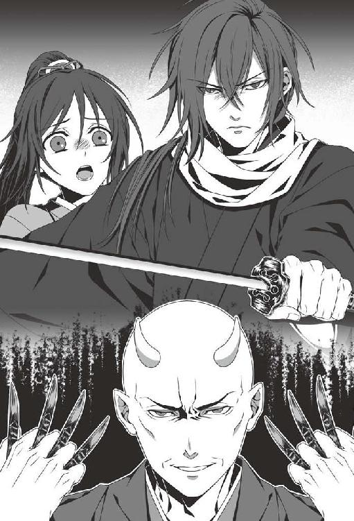
「やれやれ。親子の感動の対面を邪魔するとは、無粋な人だ」
綱道はわざとらしく溜め息をついた後、懐から何かを取り出した。日の光を鋭く照り返すそれは、医術に使う小刀だった。
それを両手に四本ずつ構え、悪意に満ちた笑みを浮かべながら、綱道は叫ぶ。
「いいだろう！ 変若水の助力によって手に入れた、この鬼の力、存分に試させてもらおうではないか」
彼が言い終えるのを待たず、しゅっ、と風を切る音が鳴り響いた。綱道が小刀を放った音だ。
「くっ──」
斎藤は即座に抜刀し、放たれた小刀を、刀の鎬の部分で難なく弾き返してしまう。
そして、その勢いを借りるようにして、冷徹な刃を綱道めがけて振り下ろした。
「ぐぁあっ！」
叫び声が上がり、赤黒い血潮が綱道の身体から迸る。
「っ......！」
その凄惨な光景に、千鶴は思わず目を覆った。
別人のように変わり果ててしまったとはいえ、目の前に立っている男は、彼女を子供の頃から育ててくれた父なのだ。
だが綱道は、一瞬苦しげに顔をしかめたものの、その場に崩れ落ちることはなかった。身に負った傷も、すぐに塞がってしまう。
「危ないところだった。もし変若水を飲んでいなければ、あっという間に殺されていただろうな」
余裕に満ちたその言葉に、斎藤は不快げに眉をしかめる。
「退くつもりはないのか。今の戦いで、力の差を思い知った筈だが」
彼の言葉通り、居合の達人の斎藤と、武術の心得もろくにない綱道との力量の差は明らかだった。その差は、羅刹となった程度で埋め切れるものではないらしい。
だが綱道は、諦めるつもりなどなさそうだった。
「退く、だと？ これはいい」
嘲るような声が、その口から漏れる。
「この国の支配者の一人となるこの私に、お前達人間を恐れねばならぬ理由があるとでもいうのかね？」
何かに取り憑かれたように狂笑しながら、綱道は再度、小刀を放つ。
「......愚かな」
斎藤は先程と同じように、刀の鎬で小刀を次々に弾き返していく。
キン、キンという硬い音が続けざまにこだました、まさにその時──
「ぐぁっ......！」
弾かれた小刀の一本が、綱道の右胸へと突き刺さった。
「ぐ、うっ......」
苦悶の声を漏らしながら、綱道は歯を食いしばり、小刀を引き抜く。傷口からは、赤黒い血が溢れ出して飛沫を上げた。
「くっ......!?」
それを目にした途端、斎藤の呼吸が苦しげに乱れ始めた。顔からは血の気が失せ、脂汗の粒がいくつも滲み出る。
彼はこらえきれぬ様子で後ろへと下がり、返り血を浴びぬよう間合いを取った。
その異変に、綱道は怪訝そうな表情になる。
「おや、どうしたのだね？ 先程に比べて、動きに切れがないように見受けられるが」
「............」
斎藤は居合の構えを取ったまま、綱道を睨み付けている。綱道は、とぼけたような口調でさらに言った。
「たったあれだけの動きで疲れてしまう程、体力がない訳でもなさそうだ。ということは......」
綱道の薄い唇に、残酷な笑みが宿った。そして己の右胸に穿たれた傷口をまさぐり、手にこびりついた血糊の粒を、斎藤へと浴びせかける。
「ぐっ......！ う......」
返り血を浴びただけだというのに、斎藤の顔が苦しげに歪んだ。直接斬りつけられた時を上回る苦しみようだ。
（いけない、このままでは──）
千鶴がそう思った矢先、綱道は心得た様子で高笑いする。
「ふはははは、成る程！ そういうことだったか！ お前も、羅刹となったのだな！」
綱道はそう言って、血まみれの手を斎藤へと伸べた。生々しくその手を汚す血を、斎藤は食い入るように見つめている。
「どうだ？ 血を飲みたくて仕方なかろう。無防備に歩いている市井の民を片っ端から襲って、その喉笛を掻き切り、血を啜りたくてたまらぬだろう？」
挑発するように言いながら、綱道はもう一度、血の滴を斎藤へと飛ばした。ぴしゃ、という音を立てて、血の塊が彼の頬へと叩きつけられる。
「く、うっ......！」
斎藤は慌てて手の甲で血を拭うが、それでも、鼻孔に執拗に纏わりつく血の匂いや感触から逃れることは叶わぬらしい。
彼は懸命に綱道から距離を取ろうとしている様子だが、漂う血の匂いと、その赤さが斎藤を狂わせる様子だった。
「お、のれ......！」
かろうじて刀を取り落としてはいないものの、構えは不安定に揺らぎ、目の焦点すら定まらなくなり始めている。
「どうしたのだ？ 先程までとは、まるで別人のようだぞ」
嘲弄するような調子で、綱道は言った。
斎藤は必死に呼吸を落ち着け、刀を振るおうとするが、綱道の動きを捉えられない様子だ。
そんな様子を愉快げに眺めながら、綱道は、小刀を放った。
「ぐっ──！」
斎藤はとっさに右腕で身を庇おうとするが、一瞬遅く、小刀が胸に深々と突き刺さってしまう。
「斎藤さんっ......！」
千鶴は思わず叫んでしまった。そのまま飛び出したい衝動に駆られたが──
「下がっていろ！」
鋭い声で制され、千鶴は動けなくなる。
「心配には及ばん。この程度の傷、すぐに塞がる」
そう言って彼は、突き刺さった小刀を力任せに引き抜き、地面へと放り投げた。糸のような血を引きながら、小刀が地面へと落ちる。
だがその傷も、程なくして塞がった。
（でも、明らかにさっきより体力が落ちているみたい。このままでは──）
だが斎藤は、この不利な状況でも刀を納めようとはしない。この強靭な精神力がどこから生まれるのか、不思議でならなかった。
そんな斎藤を冷めた視線で見やりながら、綱道は言う。
「しかし、人の身で変若水を口にするとは、愚かなことをするものだ」
斎藤は答えず、綱道を睨みつける。
だがそんな視線など気にも留めぬ様子で、綱道は続けた。
「お前達人間の肉体は、我々鬼とは比較にならぬ程、脆い。変若水を飲んで一時的に力を得たとしても、いずれは正気を保てなくなり、やがては人を襲うだけの化け物と成り果てる運命だというのに。愚かとしか言いようがない」
「そんな......！」
父の口から聞かされた言葉に、千鶴は改めて絶望させられる。
京に来たあの晩目にした、狂った羅刹隊士のことを思い出す。あるいは西本願寺にいた頃、千鶴を襲った羅刹のことも。
（斎藤さんもいずれ、あんな風に......）
だが、震える千鶴とは対照的に、斎藤は落ち着き払っていた。
「あまり、うろたえてはいない様子だが......強がりか？ もう人には戻れず、安穏とした暮らしを望むことすら叶わぬ身となったというのに」
その皮肉げな言葉にも、斎藤は表情を変えない。顔色こそ紙のように蒼白だったが、瞳には強い意志の光が宿っていた。
「安穏とした暮らしなど、望んだこともない。敵地で刀を交えれば、生きるか死ぬか、どちらか一つ。命を惜しいと思うならば、はなから腰に刀など差しはしない」
その答えに、綱道は気分を害した様子だった。
「どこまでも強がりを──！ いいだろう。どこまで本気なのか、確かめさせてもらおうではないか！」
綱道がそう言って、斎藤にとどめを刺さんと小刀を構えた時。
「──待て、綱道！」
頭上から降ってきたその声に、綱道は動きを止める。その声には、千鶴も聞き覚えがあった。
「天霧様、なぜここへ......！」
綱道が名を呼んだその時、診療所の屋根から誰かが飛び降りてきた。天霧九寿だ。
彼は威厳に満ちた仕草で綱道を睨み付けながら、叱咤するような口振りで言う。
「こんな所で何をしている？ 単独行動は慎めと、厳命してある筈だが」
「く......」
綱道は口惜しげに顔を歪めた。どうやら、天霧には逆らえぬ立場らしい。
「すぐに戻れ。断りもなくここに来たことを風間や不知火に知られれば、ただでは済まぬぞ」
「ですが、あの男は既に、羅刹となってしまっています！ このまま放っておけば、必ず禍根を残すこととなります。それくらいなら、今のうちに......！」
綱道は弁明のような言葉を並べ立てたが、天霧は眉一つ動かさなかった。
「私は薩摩藩から、お前を連れ戻せと命令を受けている」
「しかし......！」
「もう一度言う、戻れ。お前がその娘に余計な手出しをしたことを風間に知られれば、義理の親子といえど、どのような咎めを受けるか判らぬぞ」
その言葉に、綱道は二の句を継げなくなった様子だ。それ以上の反論を諦め、うなだれる。
「......申し訳ありません、天霧様」
俯いて震え上がる綱道をしばらく見下ろした後、天霧は、斎藤をその視線で射抜く。
「それに、この男ならば遅かれ早かれ自滅する。人間としても、羅刹としてもな」
その言葉は、千鶴を絶望させるのに充分な役目を果たした。
やがて天霧は綱道と共に、その場から姿を消してしまう。夢から覚めたような静けさが戻り、後には、斎藤と千鶴だけが残された。
彼はほっとしたように脱力し、ようやく刀の柄から手を離す。
「斎藤さん、大丈夫ですか？」
ためらいがちに声をかけると、彼は不機嫌な表情で千鶴の方を睨みつけた。
「大したことはない。それよりも何故、一人で屯所を出た？」
「それは、あの......」
すぐには、答えられなかった。斎藤が本気で怒っているのは判るから、尚更だ。
「もし俺が書き置きに気付かなければ、あるいはここに来ていたのが風間だったら、確実にあんたは連れ去られていた」
「............」
「俺が羅刹となった後も昼の隊務を続けているのは、何のためだと思っているのだ？」
冷たく詰問され、千鶴の足はひとりでに竦んでしまう。
斎藤の言葉は正論そのもので、申し訳なくて、顔を上げることすら出来なくなった。
「......ご迷惑をかけてしまって、すみません」
「謝るのではなく、ここに来た理由を言えと言っている」
「それは......」
正直に答えていいものか、迷った。だが何も言わぬままでは、詰問を長引かせ、斎藤を手間取らせるだけだ。
「......羅刹の発作を治める方法がないか、調べにきたんです」
「何故だ？ 山南さんか誰かの命令で、羅刹隊の研究の手伝いでもさせられているのか」
「そうじゃありません。斎藤さんがお辛そうなので、せめて、症状を和らげることが出来ないかと思って」
その答えに、斎藤は妙な顔をした。そんな答えが返ってくることすら想定していなかったと言わんばかりの表情だ。
やがて厳しい顔で千鶴を見下ろしながら、彼は言った。
「俺は、辛いなどと言った覚えはないが」
その言葉には明らかな拒絶の響きが込められていて、千鶴は少なからず戸惑う。
「ですけどさっき父様の血を浴びた時、とても苦しそうにしてらしたじゃないですか」
すると斎藤は片眉をしかめ、先程よりも厳しい眼差しを千鶴へと浴びせてくる。
「......仮にそうだとしても、あんたに一体何の関係があるというのだ？」
彼ならきっと、こう言うだろうと思った。けれど『関係ない』という一言は、想像以上の痛みを千鶴にもたらした。
斎藤と視線を合わせられぬまま、千鶴は言う。
「関係がないなんて、そんなことはないでしょう？ だって斎藤さんが羅刹になったのは、私の──」
千鶴が言い募ろうとする言葉を、斎藤は目をすがめて制した。そして。
「屯所を空けたまま来てしまった。用が済んだのなら、戻るぞ」
冷たく告げた後、彼は背を向けて歩き出した。
千鶴はもう一度、診療所を振り返ったが、これ以上迷惑をかけてはならぬと思い、急いで斎藤の後を追おうとする。
その時──
「ぐっ......！」
斎藤は足を止め、苦しげに身体を折った。
「斎藤さん!?」
千鶴は急いで彼の前へと回り込み、その様子を確かめようとする。
その矢先、彼の黒髪は色を失い、白髪へと変わってしまう。
「斎藤さん、髪が......！」
「騒ぎ立てるな。静かにしていれば、すぐ......治る......」
斎藤は苦しい息遣いの間から必死に答えたが、額や首筋からは脂汗が噴き出し、手はもどかしそうに身体を掻き毟っている。
その背を撫でて呼吸の手助けをしながら、千鶴は尋ねた。
「斎藤さん、血を飲みたいんですね？」
彼は肯定も否定もしない。だが、その内心は明らかだった。
「少し、待っていて下さい！ 私、発作が落ち着く薬を持っているんです！」
「薬、だと......？」
訝しげに尋ねる彼をよそに、千鶴は井戸へと走った。急いで水を汲んできて、斎藤の元へと取って返す。
そして、懐から例の薬を取り出して手渡した。
「これ、飲んで下さい！ 松本先生が調合して下さった薬だそうですから」
「何を言っているのだ。俺は、こんな物......」
「お願いします。今だけは、私の言うことを聞いて下さい」
重ねて言うと、斎藤は渋い顔でようやく薬の包みを開けてくれる。そして、その薬を水で流し込んだ。
「日陰に入りましょう。日向にいるよりは、多少楽かも知れません」
千鶴はそう言って、斎藤を建物の陰へと誘った。
その後、小半刻程が経ったのだが......。
「......まだ、発作が治まりませんか？」
斎藤の顔色からは相変わらず血の色が失せていて、重病人と言われればそのまま信じてしまいそうだ。労咳に蝕まれている沖田でも、ここまでひどい顔色になることは滅多にないだろうと思う程。
だが、斎藤は──
「屯所へ戻るぞ。これ以上、ここに留まり続ける訳にはいかぬ」
「そんな！ 無理です。この身体で歩くなんて......」
「無理ではない。俺の身体のことは、俺が一番よく判っている」
聞く耳を持たぬ斎藤に、千鶴は歯がゆい思いになった。彼の言葉を信じて、これ以上の無理を重ねさせる訳にはいかない。
だが、そう諭しても耳を傾けてくれる斎藤ではなかった。
（こうなったら......！）
千鶴は決意を固め、腰の小太刀を引き抜いた。しゃらん、という音と共に、白い刃が現れる。
「雪村？ 何をするつもりだ」
叱責するような声が飛んだが、千鶴は、鋭く光る刃で指先を傷つけた。
「つっ......」
浅く切った傷口からは、赤い血の滴が音もなくこぼれ落ちる。
千鶴は血で真っ赤になった指先を、ためらうことなく斎藤へと差し出した。
「斎藤さん、私の血を飲んで下さい」
彼は驚いた様子で、目を見開いた。
そして真意を探るような眼差しで、千鶴を凝視してくる。
「大丈夫です、私、鬼ですから。これくらいの傷なら、すぐに塞がってしまいます」
「だが......」
「飲まなければ、ずっと苦しいままですよ。急いで屯所に戻らなくてはならないんでしょう？ 私なら平気ですから......お願いします」
斎藤の目が静かに伏せられた。
しばらくの間、思い悩んでいる様子だったが、やがて......。
「......すまぬ」
そう一言告げた後、ようやく千鶴の手を取ってくれた。斎藤の手は、氷のように冷え切っている。
そして彼は、ためらいがちに傷口へと唇を寄せ、溢れる血を舐め始めた。冷えた舌が傷口に触れるたび、痺れるような微かな痛みに襲われたけれど、それは決して不快な感覚ではなかった。
まるで、人慣れした獣が傷を舐めて癒してくれているかのようだと、血を啜られながら千鶴は思った。
斎藤の呼吸が次第に楽になると共に、指先の傷口も塞がっていく。
やがて、温もりが戻った唇が、静かに細い指から離れた。
「顔色、だいぶ良くなりましたね」
そう声をかけると、彼は決まり悪そうに目をそらす。
気まずさのあまり言葉を発することも出来ぬ様子だったが、やがて......。
「......傷は、まだ痛むか？」
詫びるような一言が、彼の口に上った。
「いえ、もう治ってしまいました。この身体も、たまには役に立つんですね」
斎藤の重荷にならぬようにと明るい声音で答えるが、彼が抱いている負い目を消し去るには至らぬ様子だ。
斎藤は何か言いたそうな眼差しで、しばらく千鶴を見つめていたが......。
「......戻るぞ」
ぽつりと告げた後、身を翻して歩いていってしまう。
そのそっけない仕草に、千鶴は失望に似た思いを抱いた。
（仕方ないこととはいえ、人の血を啜るなんて、やっぱり斎藤さんも抵抗があるんだろうか）
他に方法がなかったとはいえ、彼に申し訳ないことをしてしまった。
そんなことを思いながら、千鶴は斎藤の後を追ったのだった。
斎藤と共に屯所の旗本邸へ戻った時、門の外で二人を出迎える者があった。
「斎藤さん、雪村君、どこに行っていたんですか？」
そう声をかけてきたのは、新選組一の体躯を誇る監察方隊士・島田魁だ。
「あ、その......」
千鶴が答えに窮していると、斎藤が前に進み出て説明してくれる。
「雪村が、どうしても外せぬ用があると言っていたのでな、共に出かけてきた」
「えっ......」
斎藤の突然の言葉に戸惑っていると、彼は「話を合わせろ」と目で語ってきた。
「......はい、そうなんです。実家で探し物があったので、斎藤さんに同行をお願いしました」
「成る程、そうでしたか」
二人の答えに、島田は特に疑いを持っていない様子だ。斎藤が新選組を欺き、害なすことなどあり得ぬと信頼しきっているに違いない。
斎藤は玄関の方を軽く見やった後、島田に尋ねる。
「それよりも、中が騒がしいようだが、何かあったのか？」
「はい。これから合議が始まるそうなので、幹部隊士は広間に集まるように、とのことです」
「そうか、判った。行くぞ、雪村」
斎藤と共に広間へ向かうと、そこには既に、近藤、土方、そして主立った幹部隊士の面々が揃っていた。
「おお、斎藤君に雪村君、戻ったのか」
まさに喜色満面といった表情の近藤が、二人を出迎えてくれる。
「近藤さん！ 肩の傷、良くなったんですね」
「ああ、心配をかけてすまなかったな。傷はもう塞がったから、心配は要らんぞ」
「本当に良かったです......」
鳥羽伏見の戦が始まってから悪い報せばかり聞かされてきた中、久し振りに耳にする吉報だった。
「さあ、座ってくれたまえ。これから合議を始めるぞ」
二人は頷いた後、下座へと腰を下ろした。
近藤は軽く息を吸い込んだ後、居並ぶ幹部隊士一人一人の顔を見やってから、こう宣言する。
「さて、官軍との戦についてだが......我ら新選組の次の戦場が決まったぞ。我々は甲府城にて、敵を迎え撃つこととなった！」
高らかな宣言の後、近藤は土方へと目配せして「トシ、説明してくれ」と指示を出した。土方は頷いた後、近藤の言葉を引き継ぐように話し始める。
「俺達が甲府に出向く目的は、官軍に対する慶喜公の恭順の意思を伝え、官軍に盾突く連中から甲府城を守るってことになってる。......表向きはな」
「だが真の目的は、甲府城にて敵を迎え撃つことにある！」
腹の底に響くような大音声で、近藤は言った。
「もし今回の役目が成功したら、我々に甲府城を下さるそうだぞ！ ここは、気合を入れて臨まねばな」
そう告げた後、近藤は愛嬌たっぷりの表情を浮かべながら、今度はこう切り出す。
「そして今日は他にも、諸君らに伝えねばならんことがある」
彼は得意げに腕組みをした後、広間に集まっている隊士達の顔を見回した。明らかに、皆が焦れるのを待っている様子だ。近藤はたまにこうして、少年のような仕草を見せるのだ。
「......何だよ。言いてえことがあるんなら、焦らさずにさっさと言ってくれよな」
呆れ交じりに永倉が言うと、近藤はおどけた笑いと共に答える。
「永倉君は、せっかちだな。そんな調子では、城勤めなど到底出来んぞ」
おどけるように言った後、彼は再びかしこまった口調で言った。
「何と、此度のお役目に当たって、俺は若年寄格という身分を頂けることになった！ 若年寄といえば大名だぞ、大名！」
その言葉には、千鶴もさすがに驚かされた。
（近藤さんが、大名に......）
昨年、新選組隊士達が直参として幕府に召し抱えられたことにも驚いたが、今回の驚きはそれを遥かに上回る。
（だから近藤さんは、こんなに喜んでらっしゃるんだ）
彼らは幕府に認められたいという一心で、今までずっと辛い役目に耐え続けてきたのだ。その苦労がようやく報われ、感慨もひとしおだろう。
「身分だけじゃないぞ。『大久保剛』という新しい名前まで頂戴してきたんだ。勇ましくて、なかなかいい名だろう？」
近藤は弾んだ声でまくし立てるが、幹部隊士達の表情は固い。
特に永倉は──
「......へえ、そうかよ」
苦虫を噛み潰したような表情で、投げやりに言うばかりだった。
だが、そんな彼らの内心など気にかけぬ様子で、近藤は言う。
「という訳で、諸君には早急に甲府行きの支度に取りかかってもらいたい。我々が幕府の方々にどう評価されるかは、君達の働きにかかっているからな。期待しているぞ。それでは本日は、解散！」
合議を終えた後、近藤は浮き足立った様子で、土方と共に広間を出て行ってしまった。
近藤と土方の姿が見えなくなり、広間はざわめきで満たされ始める。
「近藤さん、大名になれたことをとても喜んでらっしゃるみたいですね。あんなに嬉しそうな顔をなさっているところを、初めて見ました」
千鶴が思わず漏らすと、斎藤がぼそりと答えてくれる。
「......あの人は元々、江戸の小さな道場の道場主だったからな。働きを認められ、大名に取り立てられたとなれば、浮かれもするだろう」
「今回の戦に勝てば、甲府のお城を頂けるって仰ってましたよね？」
千鶴の言葉に、斎藤は静かに頷く。
「もしそうなら、斎藤さんや他の幹部隊士の皆さんは、お城勤めをすることになるんですか？」
その問いを口にした瞬間、彼の目元に陰りが差した。
睫毛を伏せ、地の底を見つめるような眼差しになりながら、斎藤は言う。
「......俺には、城勤めなどそぐわぬ。俺に出来るのは、人を斬ることだけだ」
彼の瞳には、星一つない夜空のような暗闇が宿っているように感じられた。
（今まで訊いたことがなかったけど......斎藤さんは、どうして新選組に入ることになったんだろう？）
何年も同じ場所で寝起きしていたというのに、彼のことをほとんど知らぬことに気付き、千鶴は愕然とした。
（でも、たとえ訊いても斎藤さんはきっと、答えてくれない。伊東さん達と一緒に離隊した、あの時みたいに......）
彼が他人に易々と本心を明かす男でないことは、千鶴もよく判っていた。
千鶴だけではなく、他の幹部隊士にさえ明かさぬ秘密を、斎藤はいくつも持っているに違いない。それは理解していたけれど......。
（私はもっと、斎藤さんのことを知りたい。そしてもし叶うなら、後ほんの少しだけでも、彼の心に踏み込みたい......）
きっとそれは、彼が望まぬことに違いないけれど、その衝動めいた想いは千鶴の中で少しずつ大きくなり、抑えがきかなくなり始めていた。
（......いけない。今は、大きな戦を控えているんだもの。斎藤さんの心を乱すようなことを言うべきじゃない）
千鶴が胸の内で、己の本心を懸命に抑えていた時だった。
「やれやれ。近藤さんは一体、何を勘違いしてやがるんだ？」
棘を含んだ一言が、永倉の口から飛び出した。
「今までもこれからも、俺はあの人の家来になるつもりはねえぜ。大名だか何だか知らねえが、舞い上がるのも大概にしてくれってんだ」
「......三、四十年前ならともかく、今の幕府にもらった身分じゃな」
以前なら永倉のこういった発言を諫めていた原田も、今は呆れた様子で同意している。
そんな二人のやり取りを、斎藤は物言いたげに見つめていた。
（これから戦が始まるっていうのに、この調子で大丈夫なんだろうか......）
言いようもない不吉な予感に襲われたが、無論、そんなことを口に出来る状況ではなかった。
第五章
慶応四年二月末、新選組は『甲陽鎮撫隊』と名を改め、甲府を目指して江戸を発った。
羅刹隊を率いる山南も同行を希望したのだが、土方の意向で、彼らは今回、屯所で留守を守ることになった。
千鶴も共に留守居を命じられるだろうと思っていたのだが、なぜか甲府行きに同行するよう土方から言い渡された。
そして......。
「いや〜、まさかこの俺が洋装で戦うことになるとは思わなかったな」
星が瞬く夜半過ぎ、山中の行軍を続けながら感慨深げに言ったのは、永倉だった。
裾を絞った袴に着物という、いつも着慣れた服装ではなく、陣羽織のような形の筒袖にだんぶくろ（ズボン）を合わせている。
「土方さんは、新し物好きだからな。銃を持った奴らとの戦いにゃ、こっちの方が都合がいいってことだろ」
そう答えたのは、原田だ。彼も永倉と同じように、洋装に身を固めていた。
「着るのにゃ、苦労したけどな。特にこの釦ってやつの使い道が、最初はさっぱり判らなくて......」
今回、甲府へ向かうにあたって、隊士達は全員洋装に改めることとなったのだ。原田が言った通り、洋式の戦いには洋装の方が好都合だと判断してのことらしい。
西洋の筒袖は和装とはだいぶ着心地が異なるらしく、隊士達は慣れぬ様子でしきりに首を傾げている。
千鶴は、隣を歩いている斎藤をちらりと見やった。
「あの......斎藤さん、筒袖の着心地はどうです？ 窮屈じゃありませんか」
「......特には」
相変わらずの、ぶっきらぼうな答えが返ってきた。
黒一色の装いは和服の時とさして変わらないが、和装と違い、腕や足、腰などのしなやかな線がよりはっきりと判るようになっている。
「西洋の着物って帯じゃなくて、その釦っていうので留めるんですね」
「そうらしいな」
居合の達人で、常に涼やかに和服を着こなしている彼がこうして筒袖を纏っているのは、何だか不思議に感じられたが......。
（和装の時とは違う凛々しさがあって、意外と似合っているのかも）
内心そんなことを思っていると、斎藤が不意にこんなことを尋ねてきた。
「あんたは、筒袖を着なかったのだな」
「あっ、はい。前線に出る訳じゃないから必要ないって、土方さんが仰っていて」
「......そうか」
斎藤の一言で、たちまち会話が途切れてしまう。
元々、口が上手くはない斎藤だ。無意味な雑談を長々と続けると却って気を遣わせてしまうかも知れないと千鶴は思い、口をつぐんでいることにした。
（あれ......？）
だがその時、ふと違和感を覚えて、彼女は何度か瞬きをする。
「どうした？」
その視線に気付いたのか、斎藤が尋ねてきた。
「いえ、あの......斎藤さんが着てらっしゃる筒袖の釦、二つ余っているみたいですけど」
すると斎藤は、着ている筒袖を軽く見やってから答える。
「恐らく、こういう作りなのだろう」
「ですけど、釦をはめるための穴も反対側に二つ余っていて......」
斎藤の筒袖の釦を指さしながら、千鶴は言った。
「これって多分、釦をかけ間違えている......んじゃないかと思うんですけど」
ためらいがちに告げられた言葉に、斎藤は無言になった。
そして改めて、己の筒袖を見やった後──
「............後で、直す」
極めて気まずそうな表情で、ぼそりと呟いたのだった。
「ご、ごめんなさい！ 斎藤さんが気にならないなら、いいんです！」
余計なことを言ってしまったと、千鶴は心底後悔する。
どんなことでも卒なくこなし、常に隙を見せぬ斎藤といえど、慣れぬ筒袖を着るには相当の苦労をしたらしい。
「そういえば近藤さんの姿が見当たりませんけど、もしかしてまだ日野に......？」
千鶴がためらいながら尋ねると、前を歩いている永倉が不機嫌そうに答える。
「ああ、まだ追いついてきてねえぜ。多分、新入り隊士と宴会でもしてるんじゃねえか」
不満を隠そうともせぬその声音に、千鶴は黙り込んだ。
彼は、腹の虫が治まらぬ様子でさらにぼやく。
「ったく、何考えてるんだろうな。あの人、今回の甲府行きを旅行か何かと勘違いしてるんじゃねえのか？」
「そう言ってやるなって。久し振りに嫁さんや子供にも会いてえだろうし、故郷に錦も飾りてえだろうよ」
近藤の気持ちも判らぬではない、とばかりに原田がなだめるが、永倉はますます不機嫌そうな顔になるばかりだ。
「俺は別に、宴会そのものに文句付けてる訳じゃねえよ。時と場合を考えてくれって言ってるんだ」
険悪な雰囲気が、行軍している隊士達の間に流れ始めた。先日入隊したばかりの隊士達も、戸惑っている様子だ。
千鶴は内心はらはらしながら、傍らを歩く斎藤の様子を窺う。
「............」
彼は言葉こそ発しなかったが、眉間に皺を刻み、何か考え事をしているように見えた。
その日の夜遅く、甲陽鎮撫隊は、とある開けた丘の上で一晩の休息を取ることになった。
「あいたたた......」
千鶴の足では、他の隊士達について行くだけで精一杯だ。悪路をひたすら歩き続けたせいで、足の裏には肉刺がいくつも出来てしまっている。 今日履いていた草鞋も、すっかりぼろぼろになってしまった。
（替えの草鞋を持ってきておいてよかった）
そんなことを考えながら、足を揉んでほぐしていると......。
「平気か？ 雪村」
斎藤が心配そうに様子を見にきてくれた。
「大丈夫です、薬は持ってきていますから。ご心配をおかけして、すみません」
足袋を脱ぎ、肉刺に薬を塗りながら千鶴は答える。
「いや、詫びることではないが......」
斎藤は気まずそうに言った後、近くに腰を下ろす。
こうして、さり気ない挙動や視線、時折発するわずかな言葉から、斎藤の優しさを感じ取ったのは何度目だろう。
（無口で不器用だけど、本当に優しい方）
言葉にしなくともそのことを感じ取れるようになったことが、千鶴は嬉しかった。
（この優しさはきっと、私一人に向けられているものじゃないんだろうけど......）
それでも、こうしてちょっとした言葉を交わすだけで、胸の中が温かくなる。彼が離隊していた頃は、こんなことさえ望めなかったのだ。
その時......。
「悪いな、無理に同行させちまって。足、ガタガタだろ？ 薬、ちゃんと塗っておけよ」
隊士達の様子を見にきたらしい土方に、そう声をかけられる。
「あっ、いえ、そんな......！」
千鶴は慌てて我に返り、恐縮しながら彼に向き直った。
「今回、私がついてきてしまって本当に良かったんでしょうか？ 戦場で皆さんにご迷惑をかけてしまわないか、心配なんですけど」
すると土方は、難しい顔になった。
顎に手をやり、しばらく考え込む仕草をした後......。
「俺も、出来れば江戸で留守番させてやりたかったんだが、お前を今の屯所に置いておくと何が起きるか判らねえからな」
「えっ......？」
その言葉から不穏な響きを感じ取り、千鶴は表情を固くした。
すると斎藤が、口を挟む形で尋ねる。
「......山南さんのことですか」
土方は、我が意を得たりとばかりに頷いた。
「さすが、察しがいいな。その通りだ」
その後、彼は隙のない目つきでこう続ける。
「近頃、あの人の様子がどうもおかしい。正気をなくしちまってるっていうか、羅刹の本性を剥き出しにするのをためらわなくなったっつうのかな」
「............」
土方の言葉に、千鶴は何も言えなくなった。
去年、不動堂村の屯所にいた時、山南に刀を向けられたことがあったが、江戸に移ってきてからというもの、彼の挙動はますます異常性を増しているように千鶴にも感じられた。
一人でいる時、妙な視線を感じることはしょっちゅうで、いつか何かが起きるのではという予感を抑えきれなくなっていた。そんな時、決まっていつも山南を抑え、彼を遠ざけてくれるのは斎藤だった。
「お前を屯所に置き去りにして、取り返しのつかねえ事態になっちまっても困るからな。面倒事は多いが......一緒に来てもらうことにしたんだ。すまねえな、付き合わせちまって」
「いえ、私のことでしたらお気になさらないで下さい」
突然同行を命じられた時は驚いたが、土方も色々考えなくてはならぬことが多数あるということなのだろう。
少しの沈黙の後、不意に斎藤が小声で告げた。
「副長、一つお知らせしたいことが」
「ん？ 何だ」
すると彼は、周囲に他の隊士の気配がないことを確かめた後、打ち明ける。
「新八と左之が、此度の甲府での戦について多大な疑問を抱いている様子です。......特に、近藤局長の行動について」
彼の言葉に、土方は苦笑いになった。
「疑問っつうより、不満だろ？ そりゃ、俺も気付いてたよ。これから戦だってのに、局長が宿に入り浸って酒かっ食らってたんじゃ、あいつらが腹を立てるのも当たり前だよな」
やはり気付いていたか、と千鶴は思った。土方ほど頭が切れて人の心の機微に聡い男が、隊士達の内心のわだかまりに気付かぬ筈がない。
やがて彼は、寂しげに息を吐きながら言った。
「......ただ、この時世、普通に募集をかけたところで隊士なんて集まってこねえ。酒やら給金を目の前にちらつかせて、観心を買わねえとな」
土方は自嘲気味に笑った後、指先でお猪口を作って酒を呑む仕草をした。
「そんな......」
千鶴には、隊の運営や隊士集めのことなど判らなかったが......。
（お酒やお金に引かれて集まってきた隊士さんが、幹部隊士の皆さん方のように、新選組のため、一所懸命戦ってくれるものなの？）
気にはなったが、その問いを口にするのははばかられた。なぜなら千鶴は、悪い予感という形で、その問いの答えを半ば見つけ出してしまっていたから。
斎藤は表情を崩さぬまま、土方に尋ねた。
「率直にお訊きします。副長は今回の戦、勝てるとお思いですか？」
「先に城を取っちまえば、まず負けはねえ」
土方は迷いなく答えるが、斎藤はさらに問う。
「では、敵に城を取られてしまった場合は？」
すると土方の顔に、乾いた笑みが浮かんだ。まるで、聞いて欲しくないことを聞いてくれるもんだ、とでも言わんばかりに。
「......まあ、鳥羽伏見での負け戦やら、薩長の奴らの士気の高さを見てると、難しいだろうな」
はっきりと告げられ、千鶴は呆然とする。
「今回の戦にあたって、幕府のお偉いさんから武器や大砲は預かってきたが、異国から新式の武器を山ほど買い入れてやがる薩長には、どうしたって歯が立たねえ。お偉いさん方はずっと江戸に詰めっぱなしだから、奴らのことなんて想像すら出来ねえのかも知れねえな」
「では、今回は負け戦になると」
「そうならねえよう、力は尽くすさ。近藤さんに、負け戦なんてさせたくはねえ」
そう答えた後、土方は苦い表情で付け加える。
「......とはいえ、人も武器も、何もかも間に合わせの戦だからな」
諦めに満ちた瞳が、夜空を仰ぎ見た。
土方は連日、幕府の重役に嫌な顔をされながらも江戸城に通い詰め、ようやく許しを得て甲府にやってきたというのに、と千鶴は切なくなる。
やがて彼は、斎藤と千鶴を振り返った。
「こんな話を、新八や原田に聞かせる訳にゃいかねえだろ？ 負けるのは判りきってんのに死ぬ気で戦ってくれなんて......さすがに言えねえよ、俺でも」
今まで、戦いに関することで彼がここまで自信を失っているところを、目にしたことがあっただろうか。
（勝つことさえ求められていないのに、それでも戦わなくてはならないなんて）
もし永倉や原田がこのことを知ったら、どう思うだろう。近藤や土方、ひいては幕府や江戸城に控えている幕臣達への不信感が募るのは目に見えていた。
それでも土方は、隊士達に恨まれることも承知で判断を下さねばならない立場なのだ。
斎藤は神妙な表情で、しばらく土方を見つめていたが......。
「お気持ち、お察しします。相変わらず、憎まれ役がお上手で」
ねぎらいと敬意を込めた言葉を、土方に贈る。
「ま、それが俺の役目だからな」
何もかも心得ている様子の斎藤に、土方も微笑みを返したのだった。
やがて夜も更け、隊士達は交代で見張りを務めながら、眠りにつくことになった。
葉がガサガサと揺れる音、そして小さな獣の足音などが妙に耳につき、千鶴はなかなか寝付けずにいた。
（今回の戦には勝てないかも知れないって、土方さんは仰っていたけど）
斎藤はあの言葉を、どんな思いで受け取ったのだろう。死に対する恐怖があったとしても、それを表に出す斎藤ではないが......。
そんなことを考えていた時。
（......あれ？）
黒い筒袖を着た人影が、足音を立てぬよう陣を出るのが目に入る。
（今のはもしかして、斎藤さん？）
一体どうしたのだろう。何か用事でもあるのだろうか、と千鶴は不思議に思って半身を起こした。
（放っておいた方がいいのかな。でも......）
何かが心に引っ掛かったので、彼の後を追うことにした。
星明かり以外に頼るものがない山道では、右も左も、息が詰まるような真の暗闇となる。草や石、道の窪みや倒木などにつまずかぬよう気を付けながら、千鶴は斎藤の背中を追った。
辺りに人の気配がなくなったところで、彼はようやく足を止め、空を見上げる。
頭上に広がっているのは、今にも星が落ちてきそうな壮観な眺めだった。
星の瞬きに照らされる頬は、いつもより白さを増し、目元の憂いがより濃くなったように千鶴の目には映る。
彼の表情は、常の無表情のままだったが、その佇まいが今はなぜか、ひどく寂しげに見えた。
その時──
「あっ......！」
弾みでつい、傍らの灌木の葉を揺らしてしまう。斎藤は、それを聞き逃さなかった。
「そこにいるのは、誰だ？」
殺気を含んだ鋭い声が、夜気を切り裂いて飛んでくる。
「............」
千鶴は息を殺し、少しの間、答えを返すことをためらったが......。
「十数える間に姿を現せ。さもなくば──斬る」
彼が放つ居合の一撃よりも鋭いその言葉に、答えぬ訳にはいかなかった。
「待って下さい、私です！」
そう告げると、斎藤はようやく緊張を解いてくれた様子だ。
だがやがて、不機嫌な声音で彼女を叱責する。
「......何故、一人で陣を出てきた。先日のことを全く反省しておらぬようだな」
「すみません......」
予想していたよりも厳しい叱責を受け、千鶴は委縮しながら詫びた。
「考え事をしていたら、なかなか寝付けなくて......。そんな時に、斎藤さんが陣を出るところをお見かけしたものですから」
彼は冷ややかな眼差しで、しばらく千鶴を見下ろしていたが、やがて彼女から視線を外し、再び夜空へと見入る。
恐らく、言葉に出来ぬ様々な思いが、彼の胸には渦巻いているに違いない。
その思索を打ち切るのは、気が咎めたが......。
どうしても心に引っ掛かっていたことがあったので、千鶴は質問を投げかける。
「あの......斎藤さんはどう思ってらっしゃいます？」
「どう、とは？」
拒絶のような響きが込められていた。
千鶴が何を問おうとしているのか、察しのいい彼は恐らく勘付いているに違いない。そしてきっと、彼女がこれから尋ねようとしていることを歓迎してはいないだろう。
それでも、聞かぬ訳にはいかなかった。
「ですから、その......土方さんが仰っていた通りだとすると、今回、皆さん方は負けてしまうかも知れないんですよね？」
「......そうだろうな」
斎藤はためらう様子もなく、あっさりと答えた。
「我々が持つ武器は、あくまで旧式の物。新式の銃を持つ薩長の部隊には、到底歯が立たん。しかも今回入隊した隊士達は、どの者も銃などまともに扱えぬ輩ばかりだ」
淡々と現況を告げる彼の冷静さに、千鶴は少なからず驚かされる。敗色が濃厚だというのに、なぜこんなにも動揺せずにいられるのだろう。
「銃を扱えないって......それでは、刀は？」
すると斎藤は、睨むように千鶴を見据えて答えた。
「......人を殺めたことがある者が、何の咎めも受けずに市中を往来していると思うか？」
漠然としたその問いの意図が判らず、千鶴は無言になった。
すると斎藤は、こう付け加える。
「どれだけ竹刀の扱いに長けていようと、実践では何の役にも立たん。肝要なのは、人を斬ることが出来るかどうかだ」
確かに斎藤の言葉通りだ、と千鶴は内心同意する。
京にいた頃、何度も巡察に同行したことがあったが、高い位を持った隊士が必ずしも斬り合いに長じている訳ではなかった。
しかも今の斎藤の物言いからすると、今回入隊した隊士は、道場剣術さえまともに修めておらぬ者ばかりらしい。そんな隊士が果たしてどれ程の戦力になるものか、考えるだけで暗澹たる思いに襲われる。
「......斎藤さんは、怖くないんですか？ 負けることが判っているのに戦うなんて」
幾度となく死地をくぐり、時には同志達から蔑まれることを承知の上で間者の役目を引き受け、果ては羅刹とまでなった斎藤にとって、こんな問いは今更意味をなさぬのかも知れなかったが......。
この意志の力が、果たしてどこから来るのか、千鶴は知りたかった。
少しの間、黙り込んだ後、斎藤はぽつりと答える。
「死ぬこと自体は、恐れてはおらぬ」
予想に違わぬその答えを、千鶴は半ば落胆しながら聞いていた。
やがて彼は、付け加えるように言う。
「......ただ、信じているものを見失うのは恐ろしい」
「信じているもの......？」
斎藤が伊東派と共に離隊することになったあの日、似たような会話を交わしたことを思い出す。
（斎藤さんはあの時、確か......）
記憶の糸を手繰り寄せ、あの時交わした台詞を思い出す。
──時代の移り変わりと共に変わるものもあれば、決して変わらぬものもある。そして俺は......。
薄紅の花弁が舞い散る風景の中、彼は確かに言っていた。
「時代が流れても変わらないものを信じていると、斎藤さんは以前、仰っていましたよね」
千鶴の言葉に、斎藤は目を見張る。
「覚えていたのか、その言葉を」
意外だ、と言わんばかりの口調だった。
「忘れる筈がありません。あの時はもう二度と、斎藤さんとお話出来ないと思っていましたから」
御陵衛士となった斎藤と言葉を交わせなくなった後も、一人でいる時はいつも彼のことを思い出していた。
彼と交わした言葉、ふとした瞬間目に入った優しい表情、口数こそ少ないが温もりのある声、さり気ない優しさ、全てが忘れ得ぬものだった。
微かに吹いた風が、髷を落として短くなった斎藤の髪を揺らす。
やがて彼は、天上に広がる星空のような静かな声音で言った。
「......『新選組』という隊名は、八・一八の政変の時、会津公より頂いた名だ。元々は、会津藩にあった由緒正しい隊の名だったと聞いている。その名を、今回改めることとなった」
唐突に紡がれた言葉の意味を読み取れず、千鶴はいささか困惑した。
やがて彼は千鶴の方を振り返り、こう尋ねる。
「武士の、別の呼び名を知っているか？」
「別の呼び名......侍、ですか？」
戸惑いながら答えると、斎藤は首を静かに横に振る。
「『左差し』。武士が刀を差すのは、左の腰だからな」
そう告げた後、彼はこう付け加えた。
「刀を差した侍は、どんな狭い道でも左端を歩く。武士の魂たる刀を、他人に触れさせたくはないからな」
「えっ？ でも、斎藤さんは......」
彼はいつも刀を右腰に差しているのに、と千鶴は思った。彼が刀を抜くのは、常に左手だ。
だが考えてみると、右に刀を差している侍など、彼以外に見たことがなかった。
「俺は生まれつき、左利きだ。そのせいで、どの道場に行っても、免状や切紙など受け取ったことはない。竹刀を持った瞬間、すぐに『不調法者』と持ち方を正される。その繰り返しだった」
「............」
無理からぬことではあった。剣術道場といえば、礼儀や心構え、物の道理といったものを非常に重んじる。小さな子供でさえ左利きを直されるというのに、左利きの侍など、許される筈がなかった。
「だが、そんなことを言った連中で、俺に勝った者はただの一人もいない。師範代、目録......大層な肩書きを持った者でも、打ち合えば無名の俺に負ける」
そう告げる斎藤の声音からは、彼の心に根付く絶対の自信が垣間見えた。
「では、本物の強さとは一体何だ？ 昔の俺は、そんなことばかり考えていた」
彼の物言いは淡々としていたが、一言一言に込められた重みが、斎藤が抱えていた悩みの大きさを物語っている。
「昔は......ということは、今は、答えが出たということですか？」
その問いに、斎藤はすぐには答えなかった。
ただ、何も言わずに刀を引き抜き、月光の下でその白さを確かめる。
やがて彼の瞳が、千鶴へと向けられた。
「......簡単なことだ。真剣で斬り合い、勝った方が強い。単純にして明快な答えだ」
彼は、瞬きもせぬまま言葉を連ねる。
「二六〇年続いた太平の世で、侍同士が斬り合いをすることなどめったになくなってしまったが、それでも侍というのは、刀を振るうのが本分だった筈だ。俺は、そう考えていた」
夜空の下で目にする斎藤の瞳のあまりの暗さに、千鶴は、背筋の震えを覚えた。
やがて、彼は薄く目を閉じる。
「......だが、そう思っていたのは、俺だけだったようだ」
「えっ......？」
千鶴が戸惑いながら問うと、彼はこう答えた。
「新選組が出来る前、ある旗本の子弟に果たし合いを申し込まれ、その相手を斬り殺したことがある」
「......！」
想像だにしなかった告白に、千鶴は身をこわばらせた。
旗本といえば、将軍への御目見得が叶う、相当に高い身分の筈だ。その相手を斬り殺してしまったということは──
だが斎藤は取り乱す様子もなく、穏やかな声で話し続ける。
「俺が果たし合いに勝ち、その男は負けた。だが勝った筈の俺は罪に問われ、士籍を剥奪されることとなった」
青ざめた千鶴の肌を、冷や汗が滴り落ちる。
「武士というのは元々、人を斬るのが仕事だった筈なのに、実際に斬ると罪人と呼ばれる。こんな矛盾した話があるか？ ......その頃の俺は、そう考えていた」
斎藤の心の中で『武士』という言葉は途方もなく大きく、大切な物だということが、一連の会話から受け取れた。
だが、この思いを共有出来る者は、さして多くはないだろう。
士道や武士のあり方について講釈を垂れる者は数あれど、罪を負ってでもその信念を全うしようとする者は、斎藤の他にはいないのではないだろうか。
類い稀な剣技を持っていながら、その技術を誰からも評価されることなく、むしろ否定され続けたからこそ、己が思い描く『武士』や『強さ』というものにこだわった。彼が抱いていた苦悩が、千鶴の胸に痛いほど迫ってくる。
「江戸を離れ、京へ逃げてきてから、俺はようやく己の剣を生かす道を見出した」
一呼吸置いた後、彼はこう続ける。
「新選組の皆は、勝つために......目の前の相手を殺し、己が生き残るために刀を振るう。それは、俺が思い描く武士の姿とよく似ていた」
斎藤の言葉を聞き、千鶴はようやく悟った。
（斎藤さんの強さを......その中に隠れた苦悩を理解してくれたのは、きっと、新選組の皆さん方が初めてだったんだ）
「......新選組で一番人を斬っているのは、恐らく、俺か総司のどちらかだろう」
池田屋事件の時のことが、千鶴の頭をよぎった。負傷した隊士達の手当てに追われることとなった、あの時のことを。
「だが、どれだけ多くの人間を斬り殺しても、薄気味悪がられ、恨まれこそすれ......感謝されることは絶対にない」
恐らくそうだろう、と千鶴も心の中で同意した。
彼女自身、斎藤のことを薄気味悪いなどと思ったことはないが、それはあくまでも、彼らの姿を傍で見続けてきたためだ。新選組の内情を知らぬ京の人々は、今でも、彼らを恐れているに違いない。
「俺が今まで研ぎ続けてきた爪は、娑婆では何の役にも立たぬ。それは、自分でもよく判っている」
斎藤の左手が、刀の柄を静かに回した。そのたびに星明かりを照り返し、白い刃が輝きを帯びる。
数え切れぬ程の斬り合いを繰り返して、痩せ細った刀だ。
「だが、これが......この爪だけが、俺が勝ち続けてきた証なのだ。斬り合いでは誰にも負けぬ筈の、血生臭い剣技だけが」
その言葉で、千鶴はようやく悟る。
風間と刀を交えたあの時、斎藤が変若水を飲んだのは、千鶴を彼らの手に渡さぬためという理由ももちろんあっただろうが......。
（それ以上に、自分が信じているもの、今まで研ぎ続けてきたたった一つの爪を、否定されたくなかったのかも知れない）
斎藤が信じていたものというのはこれのことだったのかと、千鶴はようやく納得した。
やがて彼の瞳が、無念そうに細められた。
「......しかし、時代は変わった。刀を振るうよりも、洋銃の方が多くの人間を殺すことが出来る」
薄い唇が、静かに噛み締められる。
やがて彼は、手にしていた刀を鞘へと納めた。
「武士が刀を持つ意味も......俺が爪を研ぎ続ける意味も、なくなりつつある」
「斎藤さん......」
今の彼にどんな言葉をかけるべきなのか、千鶴には判らなかった。
彼にとって刀を手にすることは、恐らく、生きる意味そのものだ。だがそれが通じぬ時代が、訪れつつある。彼の拠り所だった新選組も、名を変えてしまった。
目の前に死が迫っていることより、羅刹となってしまったことよりも、己が今まで生きてきた意味がなくなろうとしている。そのことが、彼を不安がらせているのだ。
護身術程度の剣技しか持たぬ自分がこんなことを言っていいのかと、千鶴は少しためらったが......。
「......そうかも知れませんね。武士というものが必要なくなってしまう、そんな時代が来てしまうかも知れません」
官軍が持っている銃の威力は凄まじく、刀や旧式の武器では歯が立たぬと、土方が言っていたことを思い出す。
千鶴の言葉に、斎藤はますます気落ちした様子で目をそらした。
そんな彼を見つめながら、千鶴は言葉をかける。
「でも、武士や刀が要らなくなっても、斎藤さんが必要とされなくなる訳ではないと思います」
「......どういうことだ？」
斎藤の言葉に、訝しげな響きが込められた。
その声色にわずかに委縮しながら、千鶴は、胸の内にある思いを言葉にする。
「私は何度も、斎藤さんに助けて頂きました。そのことへの感謝は、今も変わりません」
以前、天満屋の裏手で彼と交わした言葉を思い出す。
千鶴の気持ちは今も、あの時と変わらなかった。
（私の言葉は所詮、ずっと守られてきた者の言葉でしかないけど......）
それでもこの一言一言が、何かのきっかけになってくれることを願って、千鶴は話し続ける。
星だけが見下ろす中、二人は視線を交わし合った。
「武士が必要なくなったとしても、私は斎藤さんを必要ないなんて思いません。命の恩人ですから」
最後の一言だけは、本音ではなかった。
命を救ってくれたことに恩義を感じているのは本当だが、斎藤に対して抱いている想いは、決して感謝だけではない。
ただ、戦いを控えた今の彼に気持ちを伝えても、斎藤の胸中を掻き乱すだけだと思ったから、本当の想いは告げられなかった。
斎藤は戸惑いを含んだ眼差しで、千鶴をじっと見つめてくる。
だがやがて静かに目をそらし、またも思案顔となった。
（もしかして私、余計なことを言ってしまった？）
そんなことを思い始めた時......。
「きゃっ......！」
斎藤の骨ばった手が千鶴の頬に添えられ、顔を上げさせられる。
静けさが宿った双眸が、彼女の顔を覗き込んできた。
「あ......」
あまりに唐突で彼らしくない行動に、胸の鼓動がどんどん激しくなっていく。
だが彼は瞬き一つせず、無言のまま見つめてきた。
「あ、あの、斎藤さん、どうなさったんですか......？」
こんなに近い距離から彼に見つめられたことが、かつてあっただろうか。
好意を持っている相手にじっと凝視されると、どうしても平静ではいられない。胸の内の動揺が伝わってしまっていないか、心配でならなかった。
だが斎藤は押し黙ったまま、返事をしようとしない。何かを探ろうとするかのように、ただじっと千鶴の両の瞳を見つめてくる。
やがて、唇が静かにうごめいて......。
「......誠実な目をしているな」
「えっ......？」
柔らかな声で告げられ、千鶴は目を見開く。
「嘘や偽りではない、魂からの言葉を口にした時の瞳だ」
それが賞賛の言葉だということに気付くまでには、少しの時間を必要とした。
千鶴が狼狽していることに気付いているのかいないのか、彼は静かに言葉を紡ぎ続ける。
「初めて試衛館に行き、門人達と打ち合った時、試合に立ち会った誰もが、俺を『強い』と評した。今のあんたと同じ目で」
じっと見つめてくる瞳の優しさに、千鶴は、胸の内に直に触れられているかのような錯覚を持った。
恐らく斎藤に他意はないのだろうが、だからこそ、触れられている指の温もりや、彼からかけられる言葉が、くすぐったくてならないのだ。
「だからこそ、思った。ここでなら、俺の剣の使い道を見つけられるのではないかと」
目の前にある彼の瞳に安堵の色が戻っているのが嬉しくて、千鶴もつい、笑顔になる。
「......でしたら、新選組の皆さんのことをもっと信じましょう」
斎藤が、小首を傾げるのが見えた。
「他の人達が気付かなかった斎藤さんの強さに、初めて気付いて下さった方々なんですから。どんなに時間が経っても、隊の名前が変わったとしても、芯にあるものは決して変わらない筈です」
斎藤の目が、驚いたように見開かれた。
やがて、口元をほんのわずか緩め、不慣れな仕草で笑みを浮かべながら......。
「ただ、微衷を尽くすのみ、か」
「びちゅう......？」
耳慣れぬ言葉に問い返すと、斎藤の手が、静かに千鶴の頬を離れる。
手の温もりが離れてしまったことが、少しだけ名残惜しく感じられた。
「感謝する、雪村。今まで見えなかった何かが、おぼろげながら見えてきた」
不器用な礼の言葉が、薄い唇から告げられた。
静けさが戻り、虫の鳴き声が再び耳につくようになる。
「......今の世の中、幕命を受けたとて、命を懸けて戦おうとする武士は多くない」
独り言めいた言葉が、斎藤の唇からこぼれた。
確かに彼の言う通り、幕府側の総大将が真っ先に自軍を置いて逃げ出し、あまつさえ、親藩・譜代大名までもが幕府を見限って官軍につく世の中だ。
「だが、鳥羽伏見の戦いで、新八や二番組の隊士達は死を覚悟して切り込み隊に志願した」
斎藤の言葉に、千鶴は頷く。
「局長は、肩の傷が治ってすぐ戦線に復帰した。副長は、敗北をも覚悟して幕府のために戦おうとしている。彼らは元々、武家の生まれではないが、その魂は......誰よりも武士だ」
「......はい。私もそう思います」
もし自分が武家の生まれだとしても、男に生まれついたとしても、彼らほど崇高に戦えるとはとても思えなかった。
「武士というのは、生き様を言うのだろうな」
夜空を仰ぎ見て、斎藤は言った。
夜の風景の中だというのに、彼の瞳に宿った憧憬や決意がとても眩しく感じられて、千鶴はまた、言葉が出なくなってしまうのだった。
それからしばらくの間、二人で共に星空を見上げていたが......。
「そろそろ、夜が明ける頃か。陣に戻らねばな」
不意に告げられ、千鶴は我に返る。
「......はい、そうですね」
二人きりの時間が終わってしまうことを寂しくも思ったけれど、斎藤は戦いを控えているのだ。無理を言って、困らせる訳にはいかない。
そのまま、隊士達の元へ戻ろうとすると──
「うっ......！」
彼の口から、不意に呻き声が漏れた。
「斎藤さん!?」
慌てて彼に駆け寄ると、斎藤の足元がふらつく。そしてそのまま傍らにある樹木へと手をつき、きつく爪を立てた。
「ぐ、うっ......」
荒い呼吸の後、艶やかな黒髪が一気に白へと変わってしまう。
（これは、もしかして──）
千鶴は彼の身体を支えながら、小声で問いかける。
「血を......飲みたいんですね？ そうでしょう？」
斎藤は懸命に首を横に振るが、それが本心でないことは明らかだ。
（この間の様子だと、薬を飲んでもさして効果はない。だとすると......）
出来るだけ早く彼の発作を治める方法は、一つしかない。
「斎藤さん、私の血を飲んで下さい」
羅刹と化した斎藤の赤い瞳が、大きく見開かれた。
だが彼は唇をきつく噛み、「要らん」と言って首を横に振る。
「このまま放っておけば治まる。あんたが気に病むことではない......」
苦しい吐息の間から、斎藤はそう答えるが......。
その振る舞いは、彼が切実に血を欲していることを証立てているように見えた。
「お願いします。私なら大丈夫ですから」
このまま言い合っていても埒が明かぬと思い、千鶴は、腰の小太刀を鞘から抜いた。
そしてその切っ先で、指先に傷を付けようとすると──
「......待て」
斎藤に手首を掴まれ、止められてしまう。
「ですけど、このままでは......！」
もしかしたら小太刀を取り上げられてしまうのではとの懸念から、千鶴は必死に抵抗しようとする。
だが次に斎藤の口から出たのは、千鶴が予想していない一言だった。
「傷ならば、俺が付ける。貸せ」
「............」
本当に小太刀を手渡してしまっていいのか、彼女は少しの間、思い悩んだが......。
目の前にある斎藤の瞳に嘘はないように感じられたから、千鶴は、小太刀を握る手の力を緩めた。
手袋をはめた手で、そっと小太刀を奪われる。そして彼は、おぼつかぬ足取りで千鶴の傍らへとやってきた。
どこに傷を付けるべきか、決めかねていた様子だったが......。
やがて、左手がそっと千鶴の頬へと伸びた。そして、耳をそっと撫で上げられ、柔らかな耳朶を軽く摘ままれる。
鋭い切っ先が、耳朶へと触れた。一呼吸の間があった後、熱さと痛みがない交ぜになったような感覚がそこに走る。
たった今作った小さな傷口に、斎藤は静かに唇を寄せてきた。苦痛で荒くなった呼吸が、痛みで敏感になった耳朶に纏わりつく。
「んっ......」
耳元に吐息がかかる感触に、思わず肌が粟立った。
その様子に罪悪感を覚えてか、斎藤の唇が離れる。
「......痛むか」
気遣わしげな問いが、荒い呼吸と共に耳元に届いた。
「だ、大丈夫です。少し、くすぐったかっただけですから」
唇でこんな処に触れられるなんて、初めてのことだ。どうしたって、平気でいられる筈がない。
「だが......」
斎藤は困り切ったように呟いた。
あまり過剰な反応をしてしまえば、彼は血を飲むのをやめてしまうかも知れない。そう思った千鶴は、離れかける彼の手をそっと握った。
「斎藤さんが楽になるまで、血を飲んで下さい。お願いします」
「雪村......」
その言葉に安堵してか、彼の唇がもう一度、耳へと触れてきた。
柔らかな舌で傷口をなぞられると、肩がひとりでにぴくりと跳ねてしまう。それが、ひどく恥ずかしかった。
その震えをごまかすため、千鶴は、彼の筒袖の胸の部分をぎゅっと握る。
斎藤は戸惑った様子で息を詰まらせたが、今度は、身を離さなかった。
（斎藤さん、気付いてらっしゃるんだろうか......）
こうして身体を触れ合わせている間、千鶴がどれだけ緊張しているか、そして、彼の苦しみを取り去ってあげられることをどれだけ嬉しく思っているのか。
（いえ、たとえ気付かれなくても構わない）
新選組隊士として、武士として戦おうとしている彼の道先を阻むものを残らず取り去ることさえ出来れば、胸の内の想いに気付かれなくとも千鶴は構わなかった。
血を啜るうちに、斎藤の唇からこぼれる呼吸は次第に楽になっていく。
やがて、彼は静かに身体を離した。
「............すまなかったな」
斎藤の息遣いは、先程よりずいぶん落ち着いていた。
「気にしないで下さい。傷でしたら、すぐ治りますから」
それは千鶴の本心だったが、斎藤は彼女の目を真っ直ぐには見られぬ様子だ。
自嘲気味の笑みが、その口元に浮かぶ。
「......守るべき相手の血を啜るなど、本末転倒だな」
「そんな......！ 斎藤さんが羅刹になってしまったのは、元はといえば私のせいですから、せめてこれくらいは......」
だが斎藤は、きっぱりと言い放つ。
「そうではない。俺の剣技が風間を上回っていれば、こうはならなかった」
「............」
自分がしたことは、彼の誇りを傷つけてしまったのだろうか。千鶴は罪悪感に襲われた。
斎藤はしばらく千鶴に背を向けていたが、やがて......。
「戻るぞ。そろそろ、皆が起き出してくる頃だ」
その言葉に、彼女は無言で頷く。
その後、彼らは一言も言葉を交わすことなく、隊士達が待つ陣へと戻ったのだった。
それからも甲陽鎮撫隊は行軍を続け、ようやく甲府へと辿り着くことが出来たのだが......。
先行していた隊士達から聞かされたのは、甲府城が既に敵の手に落ちているという報せだった。
「......まさか、敵の動きがこんなに早いとはな」
急遽設えられた陣所の中で、土方は苦い呟きを漏らした。
陣幕の中には幹部隊士達が顔を揃え、今後の動きについて意見を戦わせている。
「もっと早く着く方法は、いくらでもあったんじゃねえのか？ 誰かさんが、のんびり酒盛りなんてしてなきゃな」
永倉は非難を交えた視線を、近藤へと送った。
「新八、やめとけって。向こうがこんなに早く辿り着くなんて予想出来ねえよ、普通は」
永倉をたしなめるように言ったのは、原田だ。
そんな中、島田魁が青ざめた顔で報告する。
「しかも、この話を聞いた隊士のほとんどが、昨夜のうちに脱走してしまったようです。今残っているのは、百人程かと......」
「百人って......！」
千鶴は、二の句を継げなくなった。
江戸を出たばかりの頃は、確か、三百人程の隊士がいた筈だ。それなのに、敵を目前にして隊士の半分以上が逃げ出してしまうなんて、信じがたいことだった。
彼女は青ざめながら、傍らにいる斎藤に小声で問う。
「この後、どうなってしまうんでしょう？ 敵に取られてしまったお城を、もう一度取り戻すんですか？」
すると斎藤は、他の隊士達に気付かれぬよう、声をひそめて教えてくれる。
「それは、恐らく無理だ」
「無理って、どうして......」
「城を攻めるには、少なく見積もっても相手の三倍の兵力が要る。確かな勝利を目指すのならば、十倍の兵が必要だ」
「............」
「しかもこれは、互角の武器を持っていた場合。鳥羽伏見で戦った薩長軍のような、新式の武器を持った敵を相手にするのならば、さらに多くの人員が必要だろう」
「それじゃ......」
幹部隊士達の視線が、決定を促すように近藤へと注がれた。
彼は腕組みをしてしばらく考え込んでいたが、やがて──
「......撤退はしない。要所に布陣し、敵の出方を待つ」
「何だって──!?」
愕然とした様子で声を上げたのは、永倉だった。
だが近藤は、隊士達を見据えながら言う。
「御上から、支度金を頂いて出陣したのだぞ。このまま退却しては、我々を信頼して下さった幕臣の方々に顔向けが出来ん」
そう言った後、近藤は目を見開き、怒号を浴びせるように叫んだ。
「諸君らは、武士ではないのか！ 今こそ、慶喜公に我々の忠義を示す絶好の機会なのだぞ！」
もし、ここに居並ぶ幹部隊士達が鳥羽伏見の戦を経験していなければ、近藤のこの言葉に奮い立っただろうが......。
今はどの隊士も、難しい表情で黙り込むばかりだ。
やがて永倉が、苛立ちを隠そうともせずに言う。
「おい、近藤さん、勇ましいのは結構だけどよ、少しは現実ってもんを見てくれよ」
近藤は不快げな表情で永倉を睨み返してくる。が、永倉は臆する様子を見せずに言った。
「向こうがどれだけの軍勢で来てるのかは判んねえが、城を取られてる時点で、こっちが圧倒的に不利なんだぜ？」
すると近藤は鋭い目で永倉を睨んだまま、低い声で言った。
「永倉君、君は、勝てる戦しかしないつもりかね？ その腰に差している物は、一体何だ」
その言葉に、永倉は目を剥いた。
「俺は、戦うのが怖い訳じゃねえよ！ 勝つ見込みがまるでねえ戦に命なんて張らねえって言ってるだけだ！」
近藤に食ってかかろうとする永倉を、原田が懸命に押しとどめる。
薩長軍との戦いの経験がない近藤相手にどれだけ意見を述べても、議論は平行線を辿るばかりだった。
そんな中、土方が立ち上がって告げる。
「俺が、江戸まで援軍を呼んでくる。この後、合流する予定の部隊があるからな」
そう言った後、彼は甲府城の方角へと目配せした。
「それに、敵さんもまだ俺達の正体にゃ気付いてねえ筈だ。こっちから仕掛けねえ限り、戦になることはねえ。後少しだけ、辛抱してくれ」
真摯な響きが込められたその一言に、永倉はようやく拳を下ろす。
「......判ったよ。あんたにそこまで言われちゃ、仕方ねえよな」
その後、土方は手早く支度をし、馬に乗って江戸へと向かったのだった。
幸いにも、甲府城に入城したらしい敵軍は、甲陽鎮撫隊に戦いを仕掛けてはこなかった。もし戦が始まっていれば、土方の帰還を待たずして全滅させられていたに違いない。
隊士達は周囲を絶えず警戒していたが、百人足らずでは、警備の人手が足りる筈もなく......。
「斎藤さん、大丈夫ですか？ お顔の色が優れませんけど......」
「平気だ」
そう答える斎藤の顔からは、生気が完全に失われていた。今にも倒れそうな身体を、気力だけで支えているに違いない。
「日陰で少しお休みになっては？ 他の隊士さん方には、私の方からお伝えしておきますから」
すると斎藤は苛立ちを含んだ眼差しで、千鶴を睨みつけてくる。
「......あんたは、今の状況を理解しておらんのか？ 近いうちに戦場となるかも知れぬ場所で休める筈があるまい」
予想以上に厳しい言葉を返され、千鶴は立ちすくむ。
「......すみません。出過ぎたことを言ってしまって」
うなだれながら詫びると、斎藤はばつが悪そうに目をそらした。
「いや......」
想像だにしなかった厳しい展開に、彼も余裕をなくしてしまっている様子だ。
千鶴は改めて、中空に浮かぶ日輪を見上げた。
（せめて曇り空なら、斎藤さんも少しは楽になれるのに）
空には太陽が燦々と輝いており、日の光を隠す雲さえ見当たらない。
もしここで戦が始まってしまったら──という嫌な予感が千鶴の頭をよぎった、その時だった。
「大変です！ 敵兵が、こちらへ向かってきます」
先日入隊した隊士の一人が、勢い込んでそう報告した。
その報せを受け、永倉は顔を引き締めながら立ち上がる。
「まさか、俺達の正体に気付きやがったか？ 敵の数はどれぐらいいる？」
「十人程です。恐らく、斥候部隊と思われます」
隊士がそう告げた矢先、数人の靴音が山道の向こうから聞こえてきた。気配を殺してはいる様子だが、それを聞き逃す幹部隊士達ではない。
やがて黒の筒袖を纏った兵士達が、こちらへと近づいてくるのが見えた。恐らくあれは、官軍の兵が着ているのと同じ物だ。
「幸い、銃は持ってねえみてえだな」
自慢の槍を風車のように振り回し、身構えながら、原田はそう呟いた。
（これだけの距離があるのに、敵が銃を持っていないことが一目で判るなんて......）
斎藤もそうだが、新選組の幹部隊士達の状況判断の的確さに、千鶴は改めて驚かされる。
永倉や原田、そして斎藤はそれぞれの得物を構え、応戦の姿勢を取った。
それを目にした敵兵達も、腰の刀を抜いた。そしてそのまま、こちらの陣所へと突撃してこようとする。
「──甘いんだよ！」
永倉は一瞬のうちに鯉口を切り、目にも止まらぬ速さで抜き放った刀を敵兵へと浴びせた。
「ぐぁっ......！」
白い刃を受け、敵兵は大きくのけぞった。その胸に刻まれた傷から、赤黒い血が勢いよく噴き出す。
「が、あっ......ぐ......」
彼は二、三歩後ろに下がったが、やがてその身体がぐらりと傾ぎ、地面へと倒れてしまった。
「あちらさんに、余計な報告を上げられちまうと厄介だからな。悪いが、ここで全滅してもらうぜ」
原田は器用に槍を操り、まるで踊るような見事な動きで敵兵に刺突を浴びせた。
「がぁあっ──」
敵兵は握っていた刀を取り落とし、そのまま事切れてしまう。
原田が敵を貫いた槍を乱暴に引き抜くと、赤黒い血が帯のような軌跡を描いた。事切れた敵兵の身体は、そのまま崩れ落ちてしまう。
「......悪く思うんじゃねえぞ」
名もなき敵兵の死を悼むような光が、原田の瞳に宿った。
だが、次の瞬間......。
「！ 待って下さい！ その人、まだ──」
絶命した筈の敵兵が、地面に手をつくのが見えた。そして次の瞬間、ばっと顔を上げ、蛙のような仕草で立ち上がる。
「くくくく......」
絶命させられた筈の敵兵は、薄気味悪い笑いを浮かべていた。その瞳は、乾かぬ血のような赤い色を帯びている。
千鶴や他の幹部隊士達は、彼らが何者であるのかを一瞬にして見抜く。
「こやつらは、まさか......！」
斎藤が愕然とした様子で叫んだ時、敵兵は次々と起き上がった。致命傷となった筈の傷口が、瞬く間に癒え、塞がっていく。
「ひゃはははははっ──」
敵兵の一人が大きく地を蹴り、永倉の身の丈を超える程の高さへと飛び上がりながら、刀を大きく振りかぶる。
永倉はとっさに刀を構えた。刀身がぶつかり合う音が、続けざまにこだまする。
「くそっ、どうなってやがるんだ!? 致命傷を負わせた筈なのに息を吹き返したってことは、こいつら、まさか──」
彼がそう叫んだ刹那、笠に隠れた敵兵の髪が、老人のような白髪へと変わっていく。
「この者達は、羅刹か？ だが何故、官軍が羅刹を......」
そう呟いた後、斎藤は敵兵に居合を見舞った。
だが、刀を振るう直前にその一刀を見切られ、たやすく躱されてしまう。
想定していなかった敵方の羅刹の出現に、永倉も原田も、驚愕している様子だ。
「くそっ、どうなってやがるんだ？ 羅刹は、夜しか動けねえ筈だろ」
居合、斬撃、刺撃──いくら攻撃を浴びせても、敵の兵はすぐにその傷を癒してしまう。このままでは、きりがなかった。
しかも......。
「皆さん方！ あちらを見て下さい！」
重々しい靴音が、こちらへと近づいてくる。山道の向こうから、官軍の軍勢が続々と押し寄せてきているのだ。
（もし、この全員が羅刹だとしたら......）
かつてない恐怖と絶望に、千鶴は慄然とする。これだけの数の羅刹に囲まれて勝利する未来など、全く想像出来なかった。
「な、何だ？ こいつらは。確かに今、深手を負った筈なのに......」
羅刹の存在を知らぬ平隊士達は、怯え切っている様子だ。無理もあるまい。傷が一瞬で癒える化け物の存在を、今初めて知らされたのだから。
隊士達も懸命に刀を振るったが、実戦経験も剣術の技量も不足している彼らが、羅刹相手に戦える筈もなく──
「ぐぁああああっ......！」
なす術なく羅刹達に斬り伏せられ、命を絶たれていく。
「血......血だ、血......！」
赤い瞳を輝かせながら羅刹達はその骸を斬り刻み、溢れ出す血を啜った。悪夢のような惨たらしい光景だった。
（一体、どうしてこんなことに？ この羅刹達は一体、何者なの？）
羅刹や変若水の存在を知っている者は、限られている。新選組の中でも一部の幹部隊士しか知らぬことだったし、研究は極秘裏に進められていたと聞いているから、幕府側でも薬の存在を知る者はほとんどおらぬ筈だ。
（だとしたら、まさか......）
千鶴の頭に、一つの答えが浮かんだ。だがそれは彼女にとって、極めて信じがたく受け入れられぬ考えでもあった。
と、その時、場にそぐわぬ人影が敵の軍勢の中にまぎれていることに気付いた。剃髪に長着を纏ったその人物は......。
「ふふふ、予想以上の素晴らしい成果だ」
その人物の姿を、千鶴が見間違える筈がなかった。
（父様......）
そこに立っていたのは、彼女の育ての親にして、新選組に変若水を持ち込んだ人物──雪村綱道だった。
「この日が来るのを、ずっと待っていた。私の可愛い子供達が、白日の下、その力を存分に発揮してくれる日を」
感動に打ち震えてでもいるかのような声で、彼は言った。その瞳には、あの時、実家の診療所で再会した時に目にしたのと同じ、狂気の色が宿っている。
彼の傍らには、薩摩藩にて陰働きをしている鬼、天霧九寿の姿があった。
「......どれだけ似せたところで、こんなもの、所詮は我らのまがいものに過ぎぬ。日の光を恐れぬようになったところで、そのおぞましき本質が変わる訳ではない。......偽りは、偽りよ」
天霧は苦い表情で告げたが、綱道は、意に介する様子もない。
「お言葉ですが、何が本物で何が偽物かを決めるのは、曖昧な基準に過ぎません。少なくとも彼らは、この日本を我が物顔で闊歩する人間共よりは強い。強さこそは、唯一無二の真実です」
台詞こそ丁寧だが、その言葉には慇懃無礼な響きが込められていた。天霧の方が立場は上なのだろうが、綱道が内心、彼を侮っているのが見て取れる。
綱道は、陶酔した眼差しで羅刹達を見やりながら言った。
「彼らさえいれば、幕軍も官軍も、いえ、この国を狙う西洋諸国さえ、敵ではありません。虎視眈々とこの国を狙う者達を滅ぼした後は、再び、我々鬼の世がやってくるのです！」
狂笑する綱道を、天霧は、汚らわしい物を見るような眼差しで睨みつける。
「......おぞましき戦いよ。ここまで強さを冒涜する者を、目にしたことがない」
その間も、隊士達と羅刹兵の戦いは続けられていた。
「くっそー......！ こいつら、どれだけ斬り刻めば死にやがるんだ？」
全身を汗にまみれさせながら、永倉はぼやいた。何度刀を振るっても、そのたびに急所を外され、止めを刺せぬ様子だ。
「人間なら、とっくになますになっててもおかしくねえのにな。頭に来るぜ......」
原田の体力も、そろそろ限界を迎えようとしているらしい。
その間も、羅刹達はじりじりと間合いを詰め、斎藤や千鶴、永倉や原田を取り囲んでくる。
「くくくく......！」
羅刹兵が千鶴へと手を伸ばし、その腕をつかもうとした。
「きゃああっ！」
その様子を見咎めた斎藤が、右腰の刀の柄を握る。
次の瞬間、彼の鞘から抜き打ちに放たれた一刀が、羅刹の首筋に命中した。
「がぁあっ──」
羅刹は叫び声を上げ、千鶴から手を離した。だが今度は別の羅刹が、彼女に襲い掛かってこようとする。
斎藤は再び居合の一撃で、羅刹を退けた。
「あ、ありがとうございます......」
「礼には及ばん。それよりも、俺の後ろから離れるな」
そう答える斎藤の肌には、汗の粒がいくつも浮いていた。瞳の焦点も合わなくなり始めていて、意識が朦朧としているのが見て取れる。
「やれやれ、このままじゃきりがねえな。じわじわと体力を削られて、全滅するのを待つだけだ」
残った気力で懸命に正眼の構えを保ちながら、永倉は呟いた。
「とはいえ、全滅ってのは響きが良くねえな。ってことで斎藤、よろしく頼むぜ」
原田がそう言って、斎藤へと目配せする。斎藤は、彼に頷きを返した。
「......心得ている」
そう答えた後、斎藤は千鶴を振り返った。そして、短く告げる。
「雪村、あんたは俺と共に来い。万が一の時はあんたを連れて逃げるよう、副長から命じられている」
「ですけど......！」
果たして、永倉や原田、他の隊士達を残して自分達だけ逃げてもいいのだろうか。そんな思いが、彼女をためらわせた。
すると斎藤は、声を低めて告げる。
「あんたがここに留まっても、足手纏いにしかならん。いいから、来い」
その言葉を聞いて、原田は呆れ返った様子だ。
「おいおい、もう少し言い方を考えてやれって。そういうところ、とことん気が利かねえのな」
「俺達のことは心配要らねえぜ。判ってんだろ？ 俺達が、滅茶苦茶強いってこと」
永倉は白い歯を見せて笑いながら、そう言った。
「永倉さん、原田さん......」
涙が込み上げてきて、目の前に立っている二人の姿がぼやけて見えた。
後ろ髪引かれる思いはあれど、ここに留まり続けても、出来ることなど何もない。
「......お二人共、どうかご無事で。またお会い出来ると信じていますから」
これが今生の別れとならぬようにと願いながら、千鶴は頭を下げた。
「それでは、行くぞ」
斎藤はそう告げた後、千鶴の手を掴んだ。はぐれぬようにとの配慮だろうか。千鶴はためらうことなく、手袋に包まれたその手を握り返す。
やがて斎藤は、走り出した。握られた手を決して離さぬようにしながら、千鶴も駆け出した、その時。
「お前達、あの娘を追いなさい！ 傷を負わせず、生け捕りにするのだ！」
背後から、父の声が迫ってきた。それに呼応するように、羅刹兵達もおぞましい咆哮を上げ、迫ってくる。
懸命に振り切ろうとしたが、羅刹と化した敵兵は、野生の獣を上回る速さで追いすがってきた。
「くっ──」
このままでは捕まってしまうと思ってか、斎藤は立ち止まった。その一瞬後、彼の黒髪が羅刹の白髪へと色を変える。
「斎藤さん、いけません！」
千鶴は思わずそう叫んだが、斎藤の耳には入っていない様子だ。
彼は追いすがってくる羅刹達を、片っ端から斬り捨てていく。抜き打ちで急所を仕留めるその刀さばきは、もはや神業ですらあった。
「く......！」
羅刹を斬り伏せた後、彼は苦しげに顔をしかめる。返り血の匂いを嗅いでしまったのだろうか。
「斎藤さん......？」
恐る恐る名を呼ぶと、彼は瞼をきつく閉じ、顔に付着した返り血を手の甲で何度も拭った。
「......すまない。急がねばな」
「だ、大丈夫ですか......？」
羅刹となってあれだけの返り血を浴びたのだ。恐らく今、斎藤は、千鶴には想像出来ぬ程の苦しみを味わっているに違いない。
千鶴が、ふらつく斎藤の身体を支えようとしたその時。
「──!?」
羅刹達が、すぐ近くまで迫ってきていることに気付く。そして、彼らを従えているのは......。
「千鶴、お前はそんなに聞き分けのない娘だったのか？ 私は、お前がまだ小さかった頃から、お前の幸せだけを望んでいたというのに......」
沈痛な面持ちで彼女を見つめながら、綱道は言った。
その表情を目にすると、千鶴は罪の意識に襲われる。もう、彼女が知る父ではないと判っていたけれど、それでも、割り切ることは難しかった。
「さあ、こっちへ来なさい。そんな羅刹のことなど放っておいて」
小さい頃、よく頭を撫でてくれた優しい手が、千鶴の方へと伸ばされる。
彼女はその手を見つめたまま、身じろぎ一つ出来ずにいた。
「......行くな、罠だ」
苦しげな呼吸の間から、斎藤がそう言い聞かせてくる。
千鶴は目を閉じた後、再び父の顔を見つめた。そして......。
「なぜ、そこにいる人達を羅刹へと変えたんですか？ あの薬を飲めばいつか正気をなくし、血に狂ってしまうことを、父様も知っていた筈でしょう？」
綱道がすでに狂気に蝕まれていることは承知の上だったが、どこまで元のままの父なのかを知りたくて、その問いを投げかけた。
「風間さんや天霧さんも言っていました。羅刹は、ただのまがいものだと。彼らは、父様と同じ鬼からも蔑まれている存在なのに、どうして......」
あの薬さえなければ、斎藤が羅刹になることだってなかった筈だ。やむを得ぬ事情があったとはいえ、父は、変若水の研究をしてきたことを悔いていたに違いない。そう思いたかった。
だが、綱道は......。
「人を超える生き物に、生まれ変わらせてあげたのだよ」
あまりに平然とした口調で、そう答えた。
「ここにいる羅刹達を見なさい。もし彼らが人間のまま、五十年、六十年生き延びたところで、果たしてどれだけのことが出来ると思う？」
「......父様？」
父の言葉の意味が、判らなかった。
「彼らに人智を超えた力を与え、我々鬼がこの国を取り戻すための手助けをさせてあげているんだ。どれだけ感謝されても足りぬ程だと思うが？」
彼は、千鶴が最も耳にしたくない言葉を、懐かしい声で口にした。
（父様は、罪もない人をあの薬の犠牲にすることを、何とも思っていない......）
胸の奥に出来た傷を、乱暴に掻きむしられているようだった。涙が込み上げてきて、千鶴の双眸を濡らす。
「......ごめんなさい、父様。私は、親不孝な娘かも知れませんけど」
発する言葉が、涙で途切れかける。
けれど、これだけは言わなくては。強い決心と共に、千鶴は告げた。
「私は......父様の考えには、賛成出来ません」
その瞬間、綱道の顔がまるで別人のように醜く歪んだ。そして──
「羅刹共、そこの女を捕まえろ！ そして、風間様へ献上するのだ！」
その命令に応じるように、羅刹達はおぞましい叫び声を上げた。黒い筒袖を纏った白髪の鬼が、一斉に千鶴達へと迫ってくる。
その時、斎藤の腰の刀が音もなく引き抜かれ、羅刹達を斬り倒した。
「泣くのは、後にしろ。今は、ここから逃げることが先決だ」
彼はそう言って、強引に千鶴の手を掴んだ。
そして、左手に持った刀で羅刹達を斬り伏せながら、活路を開く。
肉が裂ける音がこだまして、ねっとりとした血の匂いが立ちのぼった。濃い返り血を全身に浴びながら、それでも斎藤は足を止めようとしない。
強くつかまれた手を必死に握り返しながら、千鶴は彼と共に江戸を目指し、力の限り走ったのだった。
「......ここまで来れば、大丈夫か」
たった今走ってきた獣道を振り返り、羅刹達の姿がないことを確かめてから、斎藤はようやく足を止めた。
「そう......ですね......」
千鶴はその場に膝を突き、からからになった喉で必死に息を継ぐ。
その時、斎藤は、繋いだままだった手に気付いた様子で......。
「すまぬ。手を握ったままだったな」
気まずそうに言った後、顔を伏せる。その顔色は病的な程に青白く、今にも倒れてしまいそうだった。
「斎藤さん......大丈夫ですか？」
千鶴が恐る恐る声をかけると、斎藤は首を横に振った。
「大事はない。それよりも、急ぐぞ。あの羅刹達の体力は底無しだ。江戸に着くまで油断は出来ん」
「ですけど......」
斎藤は先程、あれだけの返り血を浴びたのだ。こうしてただ立っているだけでも、途方もない苦痛を感じている筈なのに。
「......私の血を飲めば、少し、気分が楽になるでしょうか」
少しでも彼の苦痛を和らげたい一心でそう尋ねると、斎藤は苦い顔になる。
「平気だ。要らぬ気を回すな」
「ですけど、そのままでは──」
「要らぬ、と言っている」
ぴしゃりと言い放たれ、千鶴はそれ以上何も言えなくなった。
（そうだよね。斎藤さんがこんな状況で、人の血なんて啜りたい筈がない......）
何て的外れな提案をしてしまったのかと、千鶴は、自分が情けなくなる。
（私が今、斎藤さんのためにしてあげられることは何もないんだ）
込み上げてきた熱い涙が、双眸から溢れ出した。
「雪村？ どうした」
斎藤が驚いたように問いかけてくる。
「な、何でもありません」
彼の力になれぬ上、涙を見せて気を遣わせてしまったことが申し訳なくて、千鶴は目をそらした。
だが斎藤も、「何でもない」という一言をそのまま信じる程、鈍感ではないらしい。
「......あんたが泣いているのは、先程の綱道さんの言葉が原因か」
「いえ、違......」
千鶴は両目を拭いながら答えたが、続く台詞が、涙に阻まれてしまう。
「綱道さんは、変若水を飲んだのだったな。あのような物言いをしたのは、羅刹となって正気をなくしたためだろう。変わり果ててしまったとはいえ、あんたを今日まで育ててくれた日々が消えてなくなる訳ではあるまい」
口下手な斎藤が、懸命に言葉を選びながら慰めてくれている。
その優しさが身に沁みると共に、申し訳なく感じられもした。
「違うんです。父様のことで泣いている訳ではなくて......」
「では、何故だ？」
「............」
斎藤の問いに答えねばと思うのに、後から涙が溢れ出して、言葉にならなかった。
そんな彼女を慮ってくれたのか......。
「急がねば、江戸に辿り着けぬぞ。さっさと泣きやめ」
「......ごめんなさい......」
涙で顔を濡らしながら詫びると、斎藤は困惑げに目元を曇らせる。
「それは、何に対する謝罪だ？ あんたに詫びられる覚えはないが」
千鶴は首を横に振って、その言葉を否定する。
「私に責任がないなんて、そんなことはありません。だって、斎藤さんが羅刹になったのは、私や私の父様のせいで......」
こんなことを言っても斎藤を困らせるだけだというのは、判っていたが......。
溢れ出す想いは、どうしても止められなかった。
そんな千鶴をどう扱うべきか、彼も考えあぐねている様子だったが、やがて、ためらいがちに彼女の細い肩を抱き寄せる。
そっと触れるだけの優しい仕草で、彼は、千鶴の顔を己の胸に埋めさせた。
「............」
まるで不意打ちのようなその行為に、彼女は戸惑うばかりだった。
「泣きやめ、と言っただろう」
すぐ近くから聞こえてくる声に、厳しさはない。むしろ、駄々をこねている子供をなだめているような響きさえ感じ取れた。
「あんたは、俺が羅刹になった原因が自分にあると思っているようだが......あんたを隊内に留め置くことに決めたのは、我々だ。責任を感じることはない」
訥々とした優しい言葉を聞いているうちに、千鶴の両目からは、先程までとは異なる涙が溢れ出してくる。
（どうして斎藤さんは、こんな時まで優しいんだろう）
何度も理不尽に痛めつけられ、味わう必要がない筈の苦痛を味わうこととなったのに、なぜ一度たりとも千鶴を責めようとしないのか──
不思議に思うのと同時に、斎藤はそういう人間なのだと深く納得出来もした。
「......生憎、俺は泣いている女の慰め方など知らん。涙を流したとて、してやれることなど何一つない」
言葉の端々に戸惑いを滲ませながら、斎藤は言った。
「ごめんなさい......」
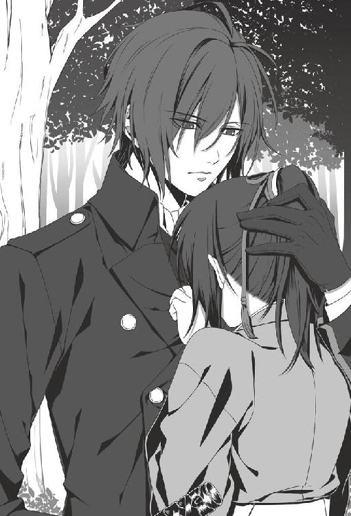
千鶴は斎藤の胸に顔を埋めたまま、もう一度詫びる。
「だから、詫びられる筋合いなどないと言っている」
「じゃあ......ありがとうございます」
女性を慰めるのが苦手だと言っているけれど、不器用だからこそ、その言葉や行動に込められた優しさがよりはっきりと感じ取れる。彼の温もりに包まれていると、不思議なほど気持ちが安らいだ。
そして、強く痛感させられる。
──彼の傍にいたい。ずっと、こうしていたいと。
斎藤はその後も、千鶴の涙が止まるまで、ずっと傍に付いていてくれた。
【三巻 終】
著者／長野和泉
寝る事が何より好きな、ゲームライター。血液型はＯ型で、誕生日は斎藤さんの命日。薄桜鬼との付き合いはとうとう７年目に。
イラスト／ＳＫ
デザインファクトリー株式会社所属のイラストレーター。代表作は「RE:VICE[D]」。
薄桜鬼 斎藤一編 第三巻
電子版発行 ２０１６年７月29日
著 者 長野和泉
イラスト ＳＫ
監 修 アイディアファクトリー株式会社
デザインファクトリー株式会社
発行者 長谷川 洋
発行・発売 株式会社一二三書房
〒１０２－００７２
東京都千代田区飯田橋２－14－２ 雄邦ビル
電 話 ０３－３２６５－１８８１
デザイン erika
©HIFUMI SHOBO/OFFICE SIX
©IDEA FACTORY/DESIGN FACTORY
本書の無断複製（コピー）は、著作権上の例外を除き、禁じられています。
●本書は『薄桜鬼 斎藤一編 第三巻』（２０１６年６月５日 初版第１刷）に基づいて制作されました。